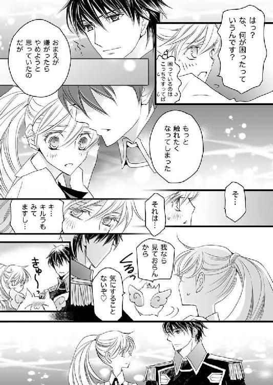

| ダブル・コントラクト4 甘くささやく初接触!? (ビーズログ文庫) | |
| 香月 沙耶 | |
| エンターブレイン (2012) | |
本作品の全部または一部を無断で複製、転載、配信、送信したり、ホームページ上に転載することを禁止します。また、本作品の内容を無断で改変、改ざん等を行うことも禁止します。
購入時にご承諾いただいた規約により、有償・無償にかかわらず本作品を第三者に譲渡することはできません。
本作品は、底本の表現や演出を考慮して本文縦組で制作しております。また一部のページを改変しております。ごらんになるリーディングシステムにより、表示の差が認められることがあります。

その日は朝からずっと雨が降っていた。
しかも夕刻には雷までもが鳴りだしたものだから、怖がりのゼノはすっかり怯えていた。
なぜ空がゴロゴロと音を立てるのかと、博識な己の誓約者に昔訊いたことがあった。
誓約者からは「自然現象だよ」と言われたのだが、それはゼノにとって望んだ答えではなかった。
自然現象では、避けることもかわすこともできないではないかと不服を訴えると、
『おまえは本当に弱虫だねえ。雷が怖い、野分が怖い、地揺れが怖い、外の暗がりが怖い。おまえの世界は、怖いものだらけではないかね』
そんな立派ななりをしているというのに、と誓約者は穏やかに笑った。
雷に怯えるゼノへ、誓約者は教務が終わるまで寝室にいなさい、と温かな手で背を撫でる。
神の遣い、あるいは神そのもの――ロレンシア国民からはそう思われているヴァハラの、みっともない姿を、教堂に集うオフライトたちに見せるのを憚ったのだろう。
ゼノは誓約者に言われるまま、しょんぼり頭を垂れつつ寝室へと向かった。そうして手触りのいい、ふかふかの上掛けを床に落とすと、中に身を滑り込ませた。
ゼノはいつもその日のことを思い出す。思い出しては、深い後悔に、身も世もなく泣き伏したくなる。
ジェイラスから離れるべきじゃなかったんだ。
彼をひとりにしなければ、もしかしたらゼノの誓約者は、今もなお元気でいたかもしれない。
――あの、影。
忘れられない。
金の稲妻に照らされた禍々しい黒い影。ジェイラスを、世界を呪う、怨嗟の声。
甲高く響いた魔物のようなあの声が、ゼノの耳から離れない。
そして次に思い出す。
『ゼノやゼノ。おまえに世界を任せよう』
儂がいなくなった世界を頼むよ。
ゼノの誓約者、ジェイラス教尊の最期の望みを。
ムリだよ、ボクにはムリだ。
そう言いたいのに、彼は、いない。
世界中隅々まで飛んで探し回っても、かの名を力の限り呼んでも、ゼノの愛する誓約者は、もうどこにもいないのだ――。長く続いた祝詞をようやく唱え終えたユリシーズは、安堵の息とともに、ふと肩から力を抜いた。
「これだけ念入りに術をかけときゃあ、石蓋を被せるまで保つと思うぜ。ま、監視を絶やさず、できるだけ刺激を与えねえようにしないといけないけどな」
「助力感謝いたします、サクリクス王よ」
長い黒髪をさらりと揺らし、オフラ教教主、ユリシーズは微笑んだ。
ヴァハラ獣界に住まう巨人、ピムニーに破壊された舞台上には、ひとの目には見えないが、しっかりと術が施されている。
ヴァハラ獣界の王、サクリクスが太鼓判を押したとおり、石蓋の修理が終わる頃までは、十分蓋の役目を果たしてくれるだろう。
「終わった？」
「ええ、ひととおりは」
「お疲れさん。夜食を用意させたから下りて来いよ。サクリクスも」
声をかけてきたのは、今宵ユリシーズの護衛を引き受けた、シド・エリクソン少佐だ。
彼だけでなく、教堂内外には、賊から命を狙われているユリシーズを守るために、相当数の王仕隊や守護団が配置されていた。
ユリシーズの誓約のヴァハラ、アイネイアスは、ユリシーズの部屋で休んでいる。昨日から一睡もせずにピムニーと対峙していたから、よほど疲れたのだろう。
ユリシーズのねぎらいの言葉を聞きながら、気絶するように、眠りについた。
「サクリクスもお疲れさん。飲むだろ？」
シドが酒瓶を軽く持ち上げると、途端にヴァハラの王の目がキラン、と輝いた。
「飲む、飲む！ シド、気が利いてるじゃねえか！」
「今夜大活躍だったからね」
ヴァハラは大の酒好き、と言われているが、サクリクス王もまたそうだった。
酒瓶に飛びつくように上体を伸ばしたサクリクスに笑みを誘われたのか、ユリシーズの表情がやわらかくほころんだ。
「シドも飲むのですか？」
「冗談言うなよ。うわばみのサクリクスはともかく、護衛の僕が飲んでどうすんだっつの」
「ええ、もちろん冗談です。わたしもサクリクス王の相伴に与ろうと思ったので、この場であなただけ飲めないのは気の毒だなと」
「うわ。あんた、ほんっとーに昔っから変わんないね」
「あなたもね」
苦々しく頰を歪めるシドに対し、ユリシーズはたおやかな笑みを美麗な面に浮かべる。
「どっちも変わんねってことで！ シド、早くくれ」
「はいはい。言っとくけど一気飲みはやめとけよ？」
「わかってるって」
待ちきれないとばかりに、サクリクスは床に置かれた器を凝視している。その大きな器の中に、シドはなみなみと酒を注いだ。
「ほら」
ユリシーズにはグラスを差し出し、シドは優雅な手つきで瓶を傾けた。
ほのかに赤い発泡酒がグラスに満ちる。
「ありがとう」
「いーえー」
ユリシーズとサクリクスが酒を飲む間、シドは夜半に食すのはどうかと思われるような甘いクッキーを、口の中に放り込んだ。
「一応あんたにも言っておこう。昨夜ウチに襲撃してきたヤツらの身元が判明した。どこと繫がっているか調べさせているところだけど、僕の見立てではエヴァーツ家だね」
バリバリとクッキーを嚙み砕きながら、シドは素っ気ない口調でそう告げた。
ユリシーズが命を狙われはじめたのは、オフラ教の頂に立つジェイラス教尊が身罷り、次期教尊候補として彼の名が挙がってからすぐのことだった。
そのためオフラ教絡みではないかという意見も出ていたが、ユリシーズは教主であるとともに王位継承権第三位の王族でもあるという複雑な事情が絡んでいたため、そうと断言できずにいた。
王都オージアルで最初に襲われたのを機に、ローデリー地区ではユリシーズ自身と、彼が身を隠していたエリクソン家の別邸が狙われた。
それらすべてが同一犯による犯行であるとは考えにくく、複数の賊がいるのではとシドやユリシーズは推測していた。
「――エヴァーツ家」
「って、聞いたことある家名だな。なんだっけ？」
「高位三貴族第一位のエヴァーツ家」
サクリクスの疑問にさらりと答えたのはシドだ。
「なんだって高位貴族のエヴァーツ家が、王族の美人教主の命を狙うわけ？」
それ、露見したらヤバイってもんじゃないだろ？ とサクリクスは首を傾げる。
「エヴァーツ家は軍と繫がりが深くてさ、元帥のすぐ下の大将職に就いているのもエヴァーツ家なわけ。それと」
「教尊候補のひとりが、エヴァーツ家出身ですね」
シドの言葉を継いで、ユリシーズもまた口を開いた。
「あー、つまり、オフラ教と軍の繫がりをより強固にするために、トップの教尊は是が非でもエヴァーツ家出身者になってもらいたいってことか？ で、ライバルの美人教主を亡き者にしようって？」
すっげ短絡的じゃね、と呟くヴァハラの王へ、シドはふん、と鼻を鳴らしつつうなずいた。
「エヴァーツって昔から何かっていや、王家に圧力かけてきたり蔑ろにしてきたりした家だからなあ。当主曰く、エヴァーツ家は当国最古かつ最高の家柄、ロレンシア家はエヴァーツ家の分家で、エヴァーツ家こそ王家として相応しいんだってさ」
「へえ。普通王族ってだけで、みんなありがたがって頭下げるもんじゃねえの？」
「臣民にもいろいろいるってことだろ。エヴァーツ家は大将はじめ、頭より身体が先に動く筋肉バカばっかだしさ。教尊候補者本人が指示したんじゃなくて、先走ったのが強襲してきた可能性もあるけど。ま、それは捕まえたヤツらを、僕がじっくりたっぷり調べ上げてやるからさ」
この上なく晴れやかに笑ったシドに、調べ上げるんじゃなくて、いたぶる、の間違いなんじゃね、とぼそりと突っ込んだのはサクリクスだ。
「じゃあ最初のオージアルや大広場で美人教主を襲ったのも、そのエヴァーツ家ってことか？」
「広場とウチを襲ったのはほぼ同時刻だろ？ 広場にユリシーズがいるのがわかってんなら、わざわざ僕の屋敷を襲う必要はないだろうが」
「あ、そうか。じゃあそれぞれ別口か」
美人教主、ほんとモテモテだなあとサクリクスは気の毒そうに呟いた。
「オージアルの方は元帥が調べているだろう。だけど広場であんたを襲った方は、確保できなかったんだよな。ま、矢を使ったってところで、嫌な予感しかしないけどね」
「シドは相手の特定ができてるのか？」
「まあね。ユリシーズだってなんとなくわかってんじゃないの？」
ユリシーズは微かに苦い笑みを浮かべ、困ったように首を傾げた。
「王家直属の矢放隊を使うほど、あの方も考えなしではないでしょう？」
「わかんないよー。あの方あんたを目の敵にしていたし、王家を離れて教主になったからって、積年のあれこれを簡単に水に流すようなタイプには思えないけどなあ。あの方しつこいし」
ユリシーズとシドが互いを見合う間で、サクリクスは小首を傾げた。
「あの方ってのはわかんねえけど、それって広場で矢を放ったのは王族の誰かってことか？」
サクリクスの問いに、ふたりは無言を保ったが、その沈黙を肯定と取ったのだろう。ヴァハラの王は、うへぇ、と辟易したように、顔を歪めた。
「親族にも狙われるって......。はあ、人間ってほんといろいろ大変だねえ」
「ヴァハラ獣界みたいに、単純に力で優劣がつきゃ楽なんだろうけど」
「それはそれで厄介なこともあるんだぜ。オレなんて毛色が白いってだけで、ガキの頃から天敵にも同族にも狙われっ放しだったもん」
「ヴァハラ獣界でも、王の血筋の方々であっても同族から狙われるものなのですか？」
ユリシーズの疑問に、サクリクスは、ん？ と首を傾げた。
「ヴァハラに王の血筋なんてないよ。王が次期王を指名するから、その際親が子を挙げることもあるけど、力の有無が一番大事で、血の繫がりは考慮しない」
「ですがヴァハラの王は、代々白い毛のヴァハラがなるものなのですよね？」
「たまたま白毛のヴァハラが王になり続けているだけ」
「そう、なのですか？」
サクリクスはにやりと牙を見せて笑う。
「それにもある程度理由があるのさ。白毛生まれは自然の中じゃあ目立つから、まず狙われやすいだろ？ その点で、黒毛のヴァハラより命を落とす確率はすごく高い。ガキの頃はなかなか姿を消すことができないし、しかも白毛は突然変異だから、親は黒毛ってのがほとんどなんだ。そうするとさ、仔を庇いきれずに命を落としたり、面倒を見きれなくて捨てたりする親とかがいるわけ」
「子を捨てるのですか？」
目を見開くユリシーズに、だがサクリクスはなんでもないことのようにうなずく。
「ヴァハラは一度の出産で、大抵二頭産むんだよ。オレの兄弟は黒毛だったし、親としちゃ、生き残る確率が低い白毛より、黒毛を生かす方を選ぶんじゃねえの？」
ヴァハラの王の口から自然界での過酷な現実を聞かされ、ユリシーズは言うべき言葉が見つからないかのように押し黙る。
「加えて毎回白毛のヴァハラが王になるもんだから、それを面白く思わない黒毛のヴァハラがちょっかいかけてくるわけさ。我こそは、ってさ」
「......なるほど」
「ひっきりなしにやってくる襲撃者から逃げたり逆襲したりしている間に、白毛のヴァハラの身体能力も頭の巡りも、親の庇護下でぬくぬく育った黒毛のヴァハラに比べて発達するんじゃねえのかな。ガキの頃はガリガリだけど、一定期間生き延びたら、一気に身体がでかくなるんだよ」
「初めてヒューに連れられて人界にやってきたサクリクスを見た時には、毛色もそうだけど、その大きさに、本当にヴァハラかって僕も驚いたもんな」
菓子を食べていたシドが、そう口を挟んだ。
サクリクスの言葉を己の内で吟味していたユリシーズが、伏せていた視線を上げた。
「キルラ‐キルレ‐キロルもまた、突然変異であり、王たる資格がある、ということですか」
「――」
不意を食らったかのように、サクリクスの眼が大きく見開かれた。なんと返事をしようかと迷う風情のサクリクスを前に、そういえば、とシドがその場の空気を敢えて壊そうとするように、のんびりとした声をあげた。
「キルたんっていえば、ヒューと小娘を繫ぐあの鎖。あれって、絶対あれだよなあ」
「あれではわかりませんよ、シド」
シドはにやん、と目を細めて笑った。
「なあサクリクス、あれってお互い引っ張り合いっこしてるんだろ」
「まあ、そうだろうな」
助け舟ありがとうとばかりに、サクリクスはその話題にすかさず乗る。
「鎖が出現する理由はそうかもしれませんが、根本が解明されないことには、いつまで経ってもあのふたりは繫がれたままですよ」
「根本。......なんであのふたりの間にまで誓約の鎖が生じたのか、か」
ええ、とユリシーズはうなずいた。
「それもキルラ‐キルレ‐キロルの特殊な力ゆえ、と考えるのが自然でしょう。キルラ‐キルレ‐キロルは自身の力にまったく気づいていないでしょうが」
ユリシーズの呟きに、サクリクスは美貌の教主へと視線を向けた。だがその目がユリシーズから、彼が着る軍服へと移る。
気づいたシドが、普段と同じ口調で、何気なく訊いた。
「ところでユリシーズ、いつまでヒューの軍服着てるわけ？」
「よく似合ってるけどな」
「聖衣や教務衣以外を身につけるのは久しぶりでしたので、実に楽しかったです」
ユリシーズはそう言いつつ、手にしていたグラスを卓上に置くと、ゆっくりとポケットに視線を注ぐ。
中指大の青い瓶。
舞台脇にひっそりと落ちていたそれをポケットに忍ばせていたのだが、どういうわけか、瓶が宙に浮いていた。
最初に動いたのは、ユリシーズだった。
青い瓶を取り戻そうと、腕を伸ばす。だがユリシーズの指をすり抜け、青い瓶はふわりと上昇した。
即座に戦闘態勢を取ったシドは剣を抜くと、しなやかな動きで構え、サクリクスもまた、体勢を低くして唸った。
「なに、あの青い瓶」
「......サーリァの香油、と思われます」
「思われる？ あんたのじゃないわけ」
「先ほど拾ったんです」
「ふーん？」
煮えきらないユリシーズの答えに、シドはひょいと片方の眉を上げる。そうしながらも、さり気なくユリシーズの前に立った。
ユリシーズの守りはシドに任せ、サクリクスは青い瓶に接近する。
「......！」
ひゅっ、と何者かが息をのむ気配が伝わってきた。だが全員がいくら目を凝らしても、姿は見えない。――ということは。
「ヴァハラ、か？」
シドの呟きに、サクリクスは、うーん、と唸りながらも、微かに首を傾げた。
「そうなんだろうけど、......違う、ような気もする」
「なんだよそれ。ヴァハラ獣界にはヴァハラ以外にも姿を消せる生き物がいるのかよ？ 言っとくけど人界にはいないからな」
「ヴァハラ獣界にはまあ、特殊な環境下だったら、いないこともないけど」
「マジかよ!?」
「だけどここは『特殊な環境下』じゃないし。でも、ヴァハラっていうには、なんつーか妙なんだって」
サクリクスはもどかしいように首を振る。
「捕まえれば疑問は解決しますよ」
「美人教主の言うとおりだな」
うなずいたサクリクスは、青い瓶を目印に、見えない相手に向かって、素早く飛びかかった。
「......！」
姿の見えない相手は、サクリクスを避けながら、凄まじい勢いで飛んだ。――舞台の上へ。
その動きは、ユリシーズや軍人のシドはおろか、抜群の動体視力を誇るサクリクスさえ、目で追うのがやっとという速さだった。
「やっぱりヴァハラなんじゃないのか!?」
青い瓶を奪った賊は上昇したかと思うと、舞台へと急降下した。
「サクリクス王！」
「わかってる！」
ユリシーズの声を受けて、サクリクスが追った刹那、何もない場所から眩い光線が出現し、ヴァハラの王を襲った。
「うおっ！」
不意をつかれたからか、酒を口にしていたからか、あるいは別の理由があるのか――。
普段より動きをもたつかせたヴァハラの王は、すんでのところで攻撃を避ける。その隙に、賊は舞台の術を突き破った。
「すっげー頭に来た！」
サクリクスの両の眼が吊り上がる。
「サクリクス、深追いするな！」
「ヴァハラの王に攻撃したことを反省させねえでどうするよ。とっ捕まえて正体確認して、ついでにヴァハラ獣界の様子を見てくる」
シシハヤやピムニーが透けた理由を調べてくるからさ、と言うや、サクリクスは賊を追い、ヴァハラ獣界へと飛び込んでいった。
シドは周囲を抜かりなく探り、ほかに侵入者がいないことを確認する。
そうして赤い石――赤華石が煌めく美しい剣を、鞘へと戻した。
キン、と澄んだ金属音が舞台に響く。
「あの青い瓶の中に入ってたの、サーリァの香油じゃないだろう？」
「調べる前に奪われてしまったので、なんとも言えません」
「だけど見当はついている？」
ユリシーズは、聡い昔馴染みへと、うっすら笑んだ。
「わたしは確信しない限り、口にしない主義ですので」
シドは、あんたさあ、と呆れたように、眉をピンと吊り上げる。
「その秘密主義なところ、いい加減改めろよ。自分さえ黙っていれば物事が穏便に収まっていた王族の頃と今とじゃ、状況が違うだろうが」
そう言ってユリシーズを睨みつけるが、教主の笑みは微風ほども揺るがない。
これはどうやっても口を割りそうもないと早々に諦めたシドは、特大のため息をついた。
「もしかしなくても、術に穴、開いたよな？」
「もしかしなくても開きました」
ユリシーズは卓の上に置いたグラスを再度持ち上げた。ぐい、と酒を飲み干すと、再び穴を塞ぐべく、舞台へと歩を踏みだした。
◆◆◆
「実験？」
大きな目をきょとんと見開き、小首を傾げたのは、ラウラ・ファウベルとヒューバート・ガーディナーの誓約のヴァハラ、キルラ‐キルレ‐キロルだ。
極上の毛並みは白くふわふわで、いつ見ても愛らしい。
だがそのキルラの前に立つ英雄将軍の眼差しは、ずいぶんと真剣なものだった。
「ラウラ、ヒューバートはどうしたのじゃ？ なんだかいつもと様子が違うようじゃが」
「ええと、うん、それは、キルラは気にしなくていいよ。多分寝不足なんだと思う」
そうですよね、将軍、とラウラは頰をわずかに引きつらせつつも笑う。
そう言うラウラ自身も、昨夜はほとんど眠れなかったため、すっかり睡眠不足だ。
あくびをかみ殺したラウラは、こっそりとヒューバートを見やった。途端に、昨夜のあれこれを思い出して、カッと頰が熱くなる。
――うわうわ、思い出しちゃダメだってば......！
慌てて首を振るが、昨夜のヒューバートの甘い表情だとか、きつく抱き竦められた腕の感触だとか、情熱的な言葉だとかが、ラウラの脳裏にどっと押し寄せてきたものだからたまらない。
いてもたってもいられず、その場に座り込んだラウラを、キルラが目を丸くして見下ろしてきた。
「ど、どーしたのじゃ、ラウラ。ラウラもなんだかおかしいのじゃ！」
夢見が悪かったのか、それとも何か悪いものでも食したのか？ と心配そうに覗き込んできたキルラは、ラウラの真っ赤な顔を見て、さらに仰天した。
「ヒューバート、ラウラの顔が大変なのじゃ！」
悪い病に違いないぞ、とキルラはおろおろとヒューバートへと飛んでいく。
「いやっ、キルラ、なんでもないから！」
言いながら立ち上がったラウラを、今度はヒューバートがまじまじと見据えてきた。
近い距離に、ラウラは頭から湯気が出るのではないかと思うほど、体温を上昇させる。
目が、離せない。
昨夜甘やかに触れた、ヒューバートの唇から。
――キス、したんだ。
ロレンシア国民から英雄将軍と謳われ、絶大な人気を誇る、目の前のひとと。
そう、あらためて思った瞬間、昨夜自分に起こった一大事に、頭の中が真っ白になる。
「ほ、本当に、なんでもないので、将軍ももう見ないでください......」
消え入りそうに呟いてうつむいたラウラの頤に、ヒューバートの長い指が触れ、優しく持ち上げられた。
「確かにキルラ‐キルレ‐キロルの言うとおりだ」
「え」
「ヒューバート、我の言ったとおり、大変じゃろう？」
「ちょ、べ、別に病気じゃないですから......！」
取り乱すラウラに対し、ヒューバートはあくまでも冷静――に、見えたのだが、実はそんなことはなく、ラウラより始末が悪い状態に陥っていた。
「可愛い」
「......は？」
「顔を赤らめ目を潤ませるおまえが可愛くてならない」
ラウラは今告げられた言葉を、自身の内で吟味するように繰り返してみた。そして意味を咀嚼した途端に、もうこれ以上はムリと思えるほど、どっと鼓動が速くなる。
「ガ、ガーディナー将軍、何言ってるんですか!?」
「可愛いお前に触れたくなって困るから大変だと言っている」
言いつつヒューバートが顔を寄せてくるものだから、ラウラはひゅっと喉を鳴らして硬直した。
――ま、待って待って将軍、キルラの前だって忘れてませんか!?
内心パニックに陥りながらも、近づいてくるヒューバートの端整な面に負けて、ラウラはきつく目を閉じてしまった。
ふにゅん。
ふかふかの感触は、昨夜何度も触れ合ったヒューバートの唇とは明らかに違った。
急いで目を開ければ、今にも重なりそうなほど接近していたラウラとヒューバートの唇の間に、キルラが挟まっていた。
キルラの右からはヒューバートが、そして左からはラウラがキスをしている、という図だ。
キルラは丸い目をしばたたかせたが、すぐにふにゃあと相好を崩した。「ふたりからチューをされては、照れてしまうのじゃあ」
両前肢を頰に寄せて、キルラはうふふうふふと上機嫌に笑いながら、ふたりの周りを飛んで回る。
「......」
思わずヒューバートを仰げば、英雄将軍もまたラウラを見ていて......互いの双眸には、ああ、やっぱり、という諦観にも似た思いが浮かんでいた。
昨夜もそうだった。
互いの想いを伝え、心を寄せ合い、口づけを交わした。
だが何度かの口づけののちに、どういうわけかキルラがふたりの間に挟まるようになってしまった。
ラウラとヒューバートを繫ぐ鎖が出現する理由がようやくわかったというのに、あらためて謎が増えたというわけだ。
鎖による強引な接近ではなく、恋愛感情ゆえの触れ合いの間にキルラが挟まる理由は、いったいなんなのだろうか。
――最初にキスした時には、キルラは飛んでこなかったのに。
またしてもややこしいことになったと、ラウラは頭を抱えたくなる。
「ところでヒューバート、実験とは何をするのじゃ？」
肩にちょこんと乗ったキルラからの問いに、ヒューバートはひとつ、息をついた。
「もう済んだ」
そう言うや、ラウラの手首を摑むと、キルラを肩に乗せたまま、大きな歩幅で歩きだす。
「将軍？」
「ヒューバート、どこへゆくのじゃ？」
「オフラ教教堂に行く」
「教堂って、え、サクリクスさんに理由を訊くんですか？」
「サクリクスにわからなければ、教主でもいい」
「はっ？ えっと、ちなみにどういう感じでお訊ねしようって考えています？」
「ありのままを話す」
「ありのままって......」
つまり、
『キスしようとしたらキルラが挟まるんです』
そう言う、ということ......!?
「いっ、いやいや、将軍、そんな相談されたって、ユリシーズ教主様だって困ると思うんです！ ここはひとつ、こっそりサクリクスさんに伺うくらいにしておきませんか......!?」
「サクリクスがわかったなら、教主に訊く必要はない」
「わたしが言っているのはそういうことではなくって！」
焦るラウラをちらりと見やりながらも、ヒューバートの歩は止まらない。
「待つのじゃヒューバート！」
突然キルラが、ヒューバートを制止する。
「......なんだ」
え、もしかして自分が挟まる理由に気づいたの？ と、ラウラは期待を込めてキルラを見つめた。
ふたりの視線を受けて、キルラは元気に主張した。
「教堂に向かう前に、まずは朝餉を食そうぞ。我は腹ペコじゃ！」
◆◆◆
ラウラたちが目的の場所に到着した時、ローデリー地区オフラ教教堂では、ちょっとした騒ぎが起こっていた。
ユリシーズ教主の警護のため、教堂の外には、外れ部隊こと王仕隊と、地区の警らをおこなう守護団がいた。
教堂をぐるりと囲む石塀沿いや正門前と、あちこちに姿が見える。
騒ぎは、葬送の花、リリエンタールとレースリボンに彩られた、正門前で起こっていた。
淡いピンク色のベールと、同色のドレスを纏った女性が、何事か叫んでいる。
「どれくらいわたしが今日という日を待ち望んでいたか、あなた知らないでしょう！ 教主様から直接伺えなければ、とうてい納得なんてできないわ......！」
声を張り上げた女性は、今にも警護人に摑みかからんばかりの迫力で詰め寄った。
「先刻も言っただろう。今夜のヴァハラの儀は中止と通達した、と」
「だからその理由を聞きたいって言っているのよ。中止ってことは、もうわたしはヴァハラの儀はできないってことじゃないの？ そんなの嫌よ！」
「ラウラ、あの者はどうしたというのじゃ？」
「あのね、今日は月在らずの日だから、いつもだったら、今夜教堂の舞台でヴァハラの儀がおこなわれるはずなの。......でも昨夜の様子じゃあ、ムリだよね」
ヴァハラ好きとして、あの女性には心底同情するが、儀式をおこなう舞台が大破してしまっているのだ。加えてヴァハラの儀を執りおこなうユリシーズは、命を狙われている。
とてもではないが、儀式ができる状態ではない。
一ツ月前のラウラのように、ヴァハラの儀のために精いっぱいの装いをしてきたのだろう、ラウラよりいくつか上と思しき年の頃の女性は、今にも泣きそうに顔を歪めた。
正門を守る守護団の面々の大半は無表情を通していたが、なかには困惑したように、あるいは気の毒そうに眉根を寄せている者もいる。だがそこで、表玄関の大扉が、微かな軋みとともに、内側から開けられた。
騒ぎを聞きつけてか、あるいは報告が入ったのか、教堂から出てきたのは、ユリシーズ教主だった。
後ろからは、教主の誓約のヴァハラ、アイネイアスと、昨夜警護を務めた、シド・エリクソン少佐がついてきている。
サクリクスはどうしたのだろう、舞台を見張っているのだろうかと首を傾げるラウラの前を、ドレスの裾をたくし上げた女性が、ユリシーズへと駆け寄った。
「ユリシーズ教主様！」
寸前で警護人のひとりが女性の肩を摑んで引き留めるが、ユリシーズは軽く首を振り、女性を自由にさせた。
「ユリシーズ教主様、わたくしは......！」
息せききって唇を開く女性へ、ユリシーズは微笑んだ。心洗われるかのような美しくたおやかな微笑に、女性は途端に頰を赤らめ、また羞恥を覚えたように、瞬きを何度も繰り返した。
「大変申し訳ないのですが、ヴァハラの儀をおこなうための舞台に不具合が生じまして、ただいま修復作業をおこなっているのです」
「まあ、そう、なんですの。で、でもわたくし......」
「ですので、あなたにはこちらを」
ユリシーズはしなやかな指を伸ばし、女性の手の上に、そっと筒状の紙を置いた。
「これは？」
「書状です。ローデリー地区には、当教堂のほかに、もう一カ所、教堂があることをご存じですか？」
「あ、はい。名前は......忘れてしまいましたが」
「ここから馬車でしたら半ツ日程度で着く距離にあります。教堂名は、セルリア教堂。アラステア教主が管理しております」
セルリアとはローデリー地区内にある、小さな町の名だ。町の大半は森で占められていて、林業や木工細工を生業とする者たちだけが住まう、物さびしい町だった。
セルリア教堂もまた、森の奥深くにあると、ラウラは聞いている。
「実はこのセルリア教堂ではヴァハラの儀をおこなう者が少ないのです。今夜も志願者がいないと、先日王都で顔を合わせた際に、アラステア教主が申しておりましたゆえ」
ドレスの女性は、そこまで聞いて、じわじわと頰を紅潮させてゆく。
「では......！」
「こちらの書状に、セルリア教堂でヴァハラの儀を執りおこなっていただくよう記してあります。あなたには大変手間を取らせてしまいますが、これからセルリア教堂へ足を運んでいただけないでしょうか」
ユリシーズは書状ごと、女性の手をそっと握り、駄目押しとばかりに、美麗な面に鮮やかな笑みを浮かべた。
女性は顔を真っ赤にしながら、こくこくと何度もうなずいた。
「ユリシーズ教主様に、儀式を采配していただけないのは本当に残念ですが......わたくし、これからセルリア教堂へ行ってまいりますわ！」
「あなたにヴァハラの加護を」
女性は待望のヴァハラの儀をおこなうべく、名残惜しげな様子を見せながらも、踵を返した。
女性を見送るユリシーズが、ラウラたちに気づいて、にこりと微笑んだ。
「昨日は世話になりましたね、ガーディナー少将、ラウラ・ファウベル、そしてキルラ‐キルレ‐キロル」
「うむ！ ユリシーズは元気か？」
「実は舞台に術を張るため、一睡もしていません。少し眠いです」
目を細めるユリシーズは、確かに眠そうだ。
揃って教堂内に入りながら、隣に並んだラウラは、そろりとユリシーズを見上げた。
「あの、ユリシーズ教主様」
「はい？」
「先ほどの方、ヴァハラの儀をセルリアでおこなうということですが、セルリアの教主様も、葬送の儀からお戻りなのですか？」
現在各地域の教主たちは、教尊候補者以外、全員王都オージアルに集合している。次期教尊の選定をおこなうためだ。
教尊候補者はその会議に出席できないため、各教堂に戻っているそうなのだが。
「ええ、アラステア教主は、教尊候補のおひとりですから」
そうなんですか、とラウラはうなずいた。
「せっかく儀式ができるんですから、さっきのひとも、ヴァハラと誓約できるといいですね」
「まあ、当教堂で儀式をするより、誓約できる確率は高いかもしれませんね」
悪戯っぽく笑う教主に、ラウラは眉根を寄せつつ、はあ、と呟いた。
言外に、ここでヴァハラの儀をおこなったら、ユリシーズは先刻の女性のためにヴァハラ召喚はしない、と言っているのだ。
「じゃ、僕は一旦帰るとするか。夕刻にはまた来るから」
一晩中ユリシーズの護衛をしていたシドは、あくびをかみ殺すこともなく、大口を開けていた。
「世話をかけました、シド」
「軍務だし。ああ、ヒュー」
引き継ぎのためか、シドは一同から少し離れた場所で、ヒューバートに何事か告げていた。
「そういえば、今日は軍服ではないのですね」
ユリシーズはラウラに目を落とし、軽く首を傾げた。
「あ、はい。昨夜教堂からそのままガーディナー邸に戻ったので、エリクソン少佐の別邸に軍服をそのまま置いてきてしまいまして」
ラウラがシドから与えられた軍服のお下がりは一着しかない。そのため今日は、やむなく普段着を着用してきていた。
「軍服もよく似合っていますが、今日の装いも可愛らしいですね」
さらりと褒めるユリシーズは、いつものように美しい微笑をたたえている。
ラウラは一瞬言葉を詰まらせたが、ありがとうございますと控えめに礼を言った。
「そもそもなぜ軍服を着用することになったのです？」
「それは、誓約の鎖で将軍と離れられないので、目立たないようにとエリクソン少佐が配慮してくださったんです」
シド曰く、
『得体の知れない娘が英雄将軍の周りをうろちょろしていたら、誹謗中傷の嵐に晒されるぞ』
というわけだ。
最初こそシドに反発していたラウラだったが、確かにヒューバートのそばにいると、軍服を着ていても女性からの視線がチクチクと痛い時があり、今では口の悪い少佐に感謝していた。
ユリシーズはなるほど、とうなずいた。
「では、教堂にいる間は、オフライトの衣服を身につけますか？ 一番目立ちませんよ」
「え？」
「いいんじゃないか？ 儀式用の服や小物は揃えてあるからな」
ユリシーズの誓約のヴァハラ、アイネイアスが、そう口を挟んできた。
「えっ、ええと」
「過剰な装飾はされていないが、控えめながらリボンやビーズや刺繡が施されているし、着心地のいい上等な布でできた白い服だ。娘が寄進してくれたレースベールもつければ、どこから見ても立派なオフライトだぞ」
「ラウラ、レースをつけるのか？ それは我も見たいぞ！」
ふわふわひらひらが大好きなヴァハラたちの強力プッシュに当惑するラウラの背中に、ユリシーズの手が優しく触れた。
「案内いたしましょう」
「えっ、あの、今着替えるんですか？ あ......ッ!?」
ユリシーズやヴァハラたちとともに一歩踏み出したところで、左手首に熱を感じた。だが鎖が出現する寸前――痛みを感じる前に、ヒューバートが大きな歩幅で近づき、ラウラを支えた。
「――教主は昨夜俺が言ったことを忘れたか」
「忘れてはいませんが、ラウラ・ファウベルの背に少し触れるだけでもダメなのですか？」
当然だ、とでもいうように、ヒューバートはうなずいた。
「し、将軍......」
「わたしも昨夜申し上げましたが、ラウラ・ファウベルに触れるのに、あなたに許可を取らなければならないのですか？ 確か、許可は必要ないという返事だったはずですが」
「昨夜は必要ないと言ったが、今日からは必要だと思ってもらいたい」
なぜ？ とユリシーズは軽く片方の眉を吊り上げた。
「ラウラとは昨夜想いを交わし合ったからだ。今後一切ラウラに触れるのは控えていただく」
「――」
ヒューバートの、有無を言わさぬ声音に、教堂内にいた者たちは押し黙った。
えっと、今、この英雄将軍はなんて言った！
恐らくヒューバートの声が聞こえた全員が、心の中で同じ疑問を発しただろう。
ただひとり、ラウラだけは違った。
――将軍ってば将軍ってば将軍ってば～～～ッ!!
カァッと頭に血がのぼって、このまま卒倒してしまいそうだった。
実際、ラウラの足からは力が抜け、上半身がぐらりと揺れる。ふらつくラウラを、ヒューバートは背後から当然のように支え、あまつさえ己の腕の中に囲い込んだ。
あまりにもあからさまな英雄将軍の独占欲を目の当たりにして、完全に毒気を抜かれたのか、珍しいことにユリシーズはごくあっさりと、わかりましたと呟いた。
自身の主張を受け入れてもらえたからか、ヒューバートは微かに目を細める。
「教主には相談に乗ってもらいたいことがある」
「......相談、ですか。なんでしょう」
――うっ。
まさか、よもや、もしかして......!?
脱力していたラウラは、ぎょっとしてヒューバートを振り返ろうとする。その前にヒューバートの左腕がラウラの腰に回り、もう片方の手が顎を掬い上げた。
「将......」
「つまり、昨夜からこういう現象が起きている」
そんな言葉が聞こえてくるなり、一気にヒューバートの顔が近づいてきた。
目を閉じる暇も、抵抗することさえできず、ラウラは接近するヒューバートをただただ見つめる。
触れ合う――寸前に、音もなく飛んできたキルラが、ふたりの間にきっちりと納まった。
「ぅむ......っ」
キルラの頭のてっぺんにはヒューバートの、ふかふかのお腹にはラウラの唇が触れたものだから、ふたりの誓約のヴァハラは、身を捩りながらきゃっきゃとはしゃいだ。
「むふふ、くすぐったいのじゃあ」
「――」
「ラウラに触れようとすると、こうなる。だが原因がわからない」
事もなげに、ヒューバートはそう告げた。
直後、教堂内に響き渡ったのは、当事者以外の、渦を巻くような大爆笑の嵐だった。シドは遠慮もなく腹を抱え、アイネイアスは床を転がり回って大笑いしている。美麗な笑みを浮かべるところしか見たことのないユリシーズまでもが、こらえきれないようにうつむいて肩を震わせていた。
大爆笑の間、ラウラは身の置き所もないほどの羞恥に、この場から駆け出してしまいたい衝動を必死にこらえていた。
それなのにヒューバートはといえば、やっぱりいつもとまったく変わらない無表情のまま平然としているものだから、ラウラは文句のひとつも言ってやりたくなる。
「将軍......！」
勢いよくヒューバートへと顔を向けて睨みつける。そんなラウラをヒューバートはまじまじと見つめ、あろうことか再び顔を寄せてきた。
「何を怒っているのかわからないが、おまえは怒った顔も可愛いのだな」
ふ、と唇に笑みを乗せ、ヒューバートはラウラの頰に軽く指を触れさせる。
「ど、どうして怒っているのかわからないって......」
本当にわからないのか、とラウラは怒りを持続させようとがんばるのだが、ヒューバートのやわらかな微笑が目の前にあると、頭の中がふわふわと蕩けてきてしまいそうで、次第に何も考えられなくなってくる。
そもそも可愛いなんて言われ慣れていないのに、慕わしい相手に、そんな立て続けに囁かれたら、もうどう反応したらいいのかわからなくなってしまうではないか。
真っ赤になったまま絶句するラウラを、ヒューバートはどこか楽しげに見下ろしてくる。
表情はほとんど変わらないのに、楽しそう、と感じるということは、自分も少しはヒューバートの内心を察することができるようになったのだろうか――と思いつつも、今この場においては、些細な優越感すら湧き起こらない。
「こ、この件はサクリクスさんに伺うはずだったじゃないですか」
それなのにどうして最初にユリシーズ教主に訊くの、と問うと、
「サクリクスは今ヴァハラ獣界に行っているそうだ。だから教主に訊いてみた」
「え、そ、そうなんですか」
なんでヴァハラ獣界に？ と首を傾げるラウラの隣で、身を捩って大笑いしていたシドが、ようやく笑みを収めた。
「ああ、おかしい。もうヤバイ、笑いすぎて腹が痛い、眠気も吹っ飛んじゃったじゃないか。キルたんさ、自分で何してるか、自覚してる？」
「我は何もしておらんぞ？ 一番目と二番目に、朝から何度もチューされて、我はとっても嬉しいのじゃ」
むふふと笑うキルラに、またしてもシドが噴き出す。
「何度もって......！ おまえら朝から何してんだよ」
「俺には小さきヴァハラが将軍と娘に引き寄せられ、真ん中に陣取ったようにしか見えなかったがなあ」
「む、そんなことはないぞ、ユリシーズのヴァハラよ。我は別に飛ぼうともふたりに近づこうとも考えていないからの！」
え、そうなの？ とシドたちは顔を見合わせた。
「いや、どう見てもキルたん、ふたりの邪魔をしてるよ？」
「邪魔などしておらん！ なにゆえ我がふたりの邪魔をせねばならんのじゃ」
我は一番目と二番目が仲良しじゃととっても嬉しいぞ、邪魔などするはずがないではないか、ぷんぷんじゃ、とキルラは大層憤慨している。
キルラの言葉に、ラウラはそろりとヒューバートをうかがった。ヒューバートは軽く唇を引き結び、目を伏せて何事か思案中だ。
「キルラ‐キルレ‐キロルに邪魔をする意思はない。ということは、ふたりの間に挟まるのは、何か別の力が働いている、と？」
「それよりさ、キスしようとしたら間に挟まるんだとしたら、たとえば口じゃなくてそれ以外のところにしたり、あるいは抱き合ったり、一緒に寝たり別の意味で寝たりした時はどうなるわけ？ そのたびにキルたんが挟まってたら、おまえら一生清いお付き合い、清いカラダってことじゃない。ヒュー、試してみたのか？」
さらりと言いながらも、やけに際どい発言があったことに、どっと顔に血がのぼった。
「し、少佐、何言ってるんですか......！」
「試していないが、......試してみるか？」
ヒューバートの紺碧色の瞳がやわらかく細められる。その視線と言葉に、身体中の血がすべて顔に集まったのではないかと思うくらい、ラウラの頰は熱くなった。
「試すって、そんな......、そういうことは、ひと様の前ですることじゃありません！」
「小娘それ、人前じゃなきゃいいって墓穴掘ってる」
「はっ、そ、そんなこと言ってないですってば！」
「でも試してみなけりゃ、どこまで邪魔されるかわかんないじゃないか」
シドにとっては所詮他人事でしかないのだろう、やけに楽しそうにラウラを追い詰めていく。
いつもであれば、この辺りでシドの誓約のヴァハラ、イムが彼を諫めてくれるのだが、頼りになるヴァハラは、王都オージアルにお使いに行っていて、今ここにはいない。
イムさん、早く帰って来て、とキリキリ唇を嚙みしめていると、ヒューバートの腕が、ラウラをふんわりと包み込んだ。
「......っ？」
「シド」
もうラウラをからかうなとでもいうかのように、ヒューバートが低く自らの側近を呼んだ。
「なになに、自分が小娘をからかうのはいいけど、僕はダメだって？」
生温い笑みを浮かべるシドに対し、ヒューバートは表情を少しも崩さずにうなずいた。
好きなひとからの独占欲は嬉しいけれど、ひと前では勘弁して、とラウラはぜひ声を大にして言いたい。今は、そんな気力は残っていなかったが。
「まあ、その辺りの検証はおふたりの時になさっていただくとして、実験でもしてみますか」
「実験はもうした」
「キルラ‐キルレ‐キロルと距離を開けてみたらどうです？」
「少なくとも二十ガラン程度では、一気に飛んでくる」
飛んだ覚えはないのじゃがのうと首を傾げるキルラを一瞥したが、ユリシーズはすぐに、ヒューバートへと視線を戻した。
「扉など、障害物があった時は？」
それはしていない、とヒューバートは返す。
「してみます？」
ヒューバートが、腕の中に囲い込んだラウラへと視線を向けてくる。だがそれも一瞬、ヒューバートは否、と告げた。
それが意外で、ラウラはえ、と目を見開いた。てっきり、「する」とうなずくと思っていた。
ユリシーズやシドも、ヒューバートの返事が予想外だったようだ。顔を見合わせている。
「障害物にキルラ‐キルレ‐キロルがぶつかったり、意図せず力が発せられたりするかもしれない。そのことにより誰かが痛みを負うのは、本意ではない」
あ、とラウラは小さく声をあげた。
誓約解除に失敗し、サクリクスが怪我をしてしまった、あの時の衝撃を生々しく思い出す。
ヒューバートの言うとおりだ。下手なことをして、今度はキルラが傷ついたら......そう思うだけで、ぶるりと背筋が震える。
ユリシーズは一拍押し黙り、やがてわかりましたとうなずいた。
「今この場において、解決策を提示できないのは申し訳ないのですが、わたしの方でも調べてみましょう。――今回のことだけでなく、あなた方が誓約の鎖で繫がった、そもそもの理由も」
教主にそう言ってもらえるのは心強い。
ラウラはよろしくお願いしますと、頭を下げた。
◆◆◆
クロエ・ファウベルの職場は、第二商業区の中央通りから三本内側に入った小道沿いにある、占術館『ファシス』だ。
『ファシス』には、クロエを含めて十二人の占者がいる。それぞれ狭いながらも個室を持ち、悩める者たちの訪れを静かに待っていた。
ローデリー地区で占者と呼ばれている者は三十人ほどいて、個人で占う者もいるが、大抵は『ファシス』のような占術館に登録している。
『ファシス』はローデリー地区内で一番の規模を誇る占術館であり、その中でも、クロエ・ファウベルは一、二を争う、人気占者だった。
理由はもちろん、『よく当たる』からだ。
両親が謎の失踪をする以前から、クロエはかつて占者だった『ファシス』の支配人にスカウトされ、ここで占いをしていた。
クロエには幼い頃から不思議な力があった。
失せ物を探し当てたり、体調の優れない理由を的中させたり、相談を受けた意中の相手の内心を言い当てたり、だ。
中でも将来について、何が起きるか予見することを得意としていたため、ついたふたつ名は、『先見占いのクロエ』だった。
だが、いくら他人の未来が視えたとしても、自分に関することがわからないのだから、大した能力ではないとクロエは思っている。
両親が失踪した時には、本当に、どうして今こそこの力が発揮できなかったのかと、自身に対して憤りさえ感じたものだ。
ラハヤというヴァハラ獣界の生き物に、五ツ月もの間眠らされていた時だってそうだった。
たったひとりの可愛い妹に心配をかけ、苦労をかけた。
妹のヴァハラ好きは子どもの頃からだから、キルラ‐キルレ‐キロルと誓約できたことはよしとしよう。けれどよもや、英雄将軍とまで誓約の鎖で繫がれ、片時も離れられないというオプションまでついてしまうとは。
それもこれも自分が吞気に寝こけていたからだと思うと、妹のラウラには、本当にただただ申し訳ない気持ちでいっぱいになる。
けれど。
――今朝のラウちゃん、昨夜までのラウちゃんとは違っていたな。
視ようと思えば、クロエの神秘的なグレーバイオレットの瞳は、ラウラの心の内を探ることができる。だがもちろん、親しい相手であればあるほど、そうするつもりはない。
だからこれは完全に想像ではあるものの、クロエの大事な妹は、昨夜英雄将軍と何かあったのだろうと確信していた。
朝餉の席についた時の、ラウラの、ほんのり紅潮した頰や英雄将軍へ向ける眼差しは、これまでとは明らかに違っていた。
ラウラの心はラウラのものだ。だから妹がどんな相手に想いを寄せるのも自由だと思う。そうは思うが、相手が英雄将軍となると、心配が尽きない。
クロエを指名する女性客の悩みのほとんどが恋愛関係だ。その中には、身分違いの恋に悩む女性が意外といて、話を聞くに、生まれが違えば、ものの考え方、もっと言えば価値観がかけ離れていることも多かった。
「ラウちゃんはがんばり屋だし意思も強いししっかり者だし、可愛いし綺麗だし背もすらっとしていてカッコいいし、思いやりもあるし手先も器用で料理も上手でやり繰り上手でセンスもいいし、ほんっと自慢の妹だけどね......」
ラウラが聞いていたら、姉さんもうやめてと大赤面しそうなことを大真面目に呟いていたクロエに、あのぉ、と控えめな声がかかった。
「......何？」
「あの、ね、お客様がいらっしゃらないなら、姿を現してもいい？」
ボク、姿を消しているの、あんまり得意じゃないのと呟かれて、クロエはため息をついた。
「いいけど、最初の約束どおり、お客さんが来たら、すぐに姿は消してね」
「うん」
美しい黒レースのクロスで覆われた卓越しに、黒い獣が姿を現した。
得意じゃないというのは事実なのだろう、黒い獣は姿を現すと同時に、水浴びをした犬のようにブルブルと全身を震わせた。
「はー、窮屈だった」
「ヴァハラは姿を消している時って、窮屈に感じるの？」
「なんとなく窮屈な感じがするの」
「ふーん」
言っていることはよくわからないが、別に理解する必要はないかと、クロエはあっさり会話を打ち切った。
「ね、ねえ、クロエちゃん」
「何？」
「ここ、お昼間なのに薄暗いね。なんでもっと灯りをともさないの？」
「占いの館って大抵こんな感じだよ。薄暗い方が、人間は秘密を告白しやすいんだって」
クロエとしては、明るかろうが暗かろうがどちらでもいいのだが、『ファシス』の女支配人はそう言って、館内の雰囲気づくりをことのほか大事にしていた。
占者たちの装いにも口を出し、クロエは支配人に言われたとおり、総レースの淡い紫色のドレスを身につけている。髪や額を飾るラリエットや指輪、腕飾りなどといった装飾品も、濃淡の違いはあれど、すべて紫色で統一していて、はたからは大層神秘的に見えるらしい。
だが着飾ることにまったく興味のないクロエにしてみれば、複雑に髪を結い上げたりじゃらじゃら装飾品をつけたりするのは、まったく面倒としか思えない。
それでもおとなしく従っているのは、客だと押しかけてきた男たちを一切シャットアウトし、あくまでもクロエを占者として扱ってくれた女支配人に、内心感謝しているからだ。
「そうなんだ。ボク、占いの館って初めて来たんだ。暗いのちょっと苦手なんだけど、クロエちゃんがそばにいると心強いな」
「昨夜やってきた時には真っ暗だったはずだけど？」
黒い獣は、急にもじもじと身を捩った。
――キルちゃんくらい小さければ微笑ましいけどねえ......。
大きな獣がもじもじしても、あんまり可愛くない。
「あのね、あの時は無我夢中だったっていうか、クロエちゃんの香りが、とってもいい匂いだったから、それにつられてついふらふら飛んできちゃったの。クロエちゃんの香りに気づく前までは、暗くてとっても怖かったんだよ」
「ふーん」
昨日まで引きも切らず予約客がやってきたが、今日は時間があるようだ。
昼餉にはまだ少し早いしなあ、と暇を持て余すクロエに、黒い獣はじりじりと近づいてくる。
「あのね、クロエちゃん。昨夜お願いしたことなんだけども、考えてくれたかなあ？」
「ゼノちゃんの誓約者になるってこと？」
「うん、そう。それでね、世界を救ってほしいんだ」
『ボクの誓約者になって、世界を救ってください』
黒毛のヴァハラ――ゼノ。
彼は初対面のクロエに向けて、気弱そうな声で、そう言ったのだ。
「昨夜も聞いたけど、世界を救うって、誰から救うの？」
「あのね、それはね、悪いモノから」
「悪いモノって？ 人間？ それともヴァハラ？ あるいはそのどれでもない何か？」
「ええと、それは、......悪いモノ」
クロエはため息をついた。
昨夜とまるで同じ問答だ。
この時点で昨夜のクロエは呆れ果て、ゼノを部屋から追い出して灯りを消し、さっさとベッドに横になった。
朝を迎えた時には、ゼノのことなどすっかり頭の隅に追いやっていた。
ところが朝餉を終え、出勤前のひと時をのんびり過ごそうと窓を開けた途端に、「クロエちゃん、怖かったぁぁ！」と半泣きになりながら、ゼノが部屋に飛び込んできたのだ。
屋敷の周囲に植えられている木の、太い幹の上で夜を明かし、クロエが再び窓を開けるのを待っていたのだという。
それからはもう、クロエが何を言ってもぴったりくっついて離れず、仕方がないから、仕事場についてくるのなら姿を消していてと言ったのだ。
ヴァハラ好きな妹だったら喜んでゼノをそばに置いただろうが、大型犬より大きな黒い獣が始終目に入っては鬱陶しいことこのうえない。
ヴァハラに対し好悪はない。言ってしまえば、どうでもいい存在だった。
それでも、ここでまた会話を打ち切ったら昨夜の繰り返しになる。クロエは二度目のため息をのみ込んで、再度問いを投げた。
「じゃあ、たとえば、その悪いモノをあたしがやっつけて世界を救ったとしよう」
「うん」
「そうしたら何かあたしにとって得することってあるの？」
「世界中のひとやヴァハラから感謝されるよ！」
黒い目を輝かせ、どう、嬉しいでしょう？ とでもいうかのように、身を乗り出してきたゼノへの返事は、今度はのみ込めなかった特大のため息だ。
「報酬が他人からの感謝？ あのね、あたしはただ働きはしない主義です」
「......た、ただ、働き？」
そう、とクロエはきっぱりうなずく。
「ひとに何かを求めるのであれば、相応の報酬は必要だよ。たとえばあたしはこの占術館で、ひとりあたり半ツ刻占って、六千ウィン報酬をいただいている。一ツ日平均八人で、四万八千ウィン。そのうち半分は場所代として支配人に支払うから、一ツ日の報酬は二万四千ウィン。あたしの力が必要だというのなら、一ツ日二万四千ウィン持ってきてって言うけども、ゼノちゃん用意できるの？」
流れるような長ゼリフを、ゼノは半分も理解できなかったらしく、ぽかんと呆けている。
「ちなみにゼノちゃん、子どもがふたりいる一般的な四人家族が一ツ月普通に暮らすのに、どれくらいのお金がかかるか知ってる？」
「し、......知りません」
「ローデリー地区で三つの部屋とお台所と湯浴み場がついたお家を借りるのに、だいたい五万ウィンから十万ウィンかかるの。それに食事代や子どもたちの教育費、灯り代や服飾費、その他もろもろ雑費遊興費を足すと、一ツ月二十万ウィンは必要なんだよ」
「......」
「そのお金はどこから出てくると思う？ 天から降ってくるわけでも王様が恵んでくれるわけでもない、働いて自分で稼ぐの。働かざる者食うべからず！ 働かざる者吞気に世界の救済なんて夢を見るべからず！ だよ、ゼノちゃん」
ふいに、ゼノの黒い眼に、じわじわと涙が浮かんだ。
「ク、クロエちゃん......」
「何？」
「クロエちゃんは、そんなにお金に困っているの？ 他人を救えるってとっても崇高な行為なのに、それをお金に換算するなんて......」
「だから、今言ったでしょ？ 崇高な行為をしたらお腹が膨れるの？ お金がなければゴハンも食べられないんだよ。だからこれは、正当な要求」
きっぱりそう言いきったクロエの前で、ゼノはそんな、と絶句した。
「ボ、ボク、お金持ってない......」
「まあ、ヴァハラだから持ってないとは思っていたけどもね」
つまりクロエに『世界を救う』意思はない、ということ。
そのことに思い至ったのだろう、ゼノは目に溜めた涙をはらはらと零し、床に泣き伏した。
――あーあ、もう、面倒だなあ。これまでいろんなモノやひとに好かれてはきたが、その中でもゼノは、かなりの面倒度だ。
こうして今はめそめそ泣いているが、きっとゼノはクロエから離れることはないだろう。そして折に触れ、『世界平和......』と呟くに違いない。占わなくたって想像できる。
こういうタイプは、ひとであれそうでないものであれ、相当しつこいのだ。
うっうっと声を詰まらせるゼノだったが、ふいに、ぐー、と長く響く音がした。
ゼノの腹の音だ。
「......」
そろりと上げたゼノの顔は涙でくしゃくしゃで、だが空腹を知らせる音が部屋中に響いたのが恥ずかしかったのか、またしてももじもじと大きな体軀を揺らした。
クロエは時刻を確認すると、椅子から立ち上がり、扉の前に『休憩中』の札を下げた。そしてガーディナー家の料理人が持たせてくれた昼餉を、卓の上に載せる。
サクサクのパイにジューシーな肉と新鮮な野菜をたっぷり挟んだサンドウィッチ、丁寧にすり潰した木の実と穀物を、塩茹でした根菜類に和えた温サラダ、甘い果実酒をたっぷり吸ったスポンジに、蜜と色とりどりの果実を煮詰めたジャムを塗ったデザートと、どれも食欲をかきたてるクロエの好物ばかりだ。
「ゼノちゃんも食べる？」
「食べてもいいの!?」
ゼノは嬉しそうに目を見開いたが、すぐにしおしおと肩を落とした。
「あ、あのね、さっきも言ったけど、ボクお金持ってないの」
「いいよ。隣でお腹が鳴ってたら食べづらいじゃない」
うわあ、と嬉しそうに跳ね起きたゼノは、待ちきれないように、卓に頭を乗せてクロエの昼餉を覗き込んだ。
「美味しそう！ お食事どれくらいぶりかなあ」
「......どれだけ食べてないの？」
「ええとね、五ツ日ぶりくらい？ でも全然お腹が空いた感じがしなかったの」
どうして、と訊こうとして、クロエは押し黙った。
訊いても楽しい答えが返ってくるとは思えなかった。
「しょうがないな」
最初はきっちり半分にしようと思っていたのだが、五ツ日ぶりの食事をするというゼノに、多めにわけてあげた。
器に入れて床に置くと、ゼノはいただきます、と行儀よく挨拶をし、嬉しそうに口を開いた。
――どこの子なのかなあ。
漆黒の毛によく映える、金色の細い首輪をしている。首輪には繊細な模様がびっしりと彫られていて、装飾品に興味のないクロエにも、それが大層な値打ち物だとわかる。
だから彼には裕福な誓約者がいるはずなのだ。それなのにクロエを誓約者にと望むということは、......つまりその人物に、何かあったのだろう。
『悪いモノから世界を救う』と言うヴァハラ――。
ここにヴァハラの王、サクリクスがいたら、ゼノが何者か、そしてどうして『世界の救済』を彼が担わなければならないのか、その理由を教えてくれるだろうか！
ゼノの内心を覗くこともできないわけではないが、その選択は避けた方がいいと囁く自らの直感を、クロエは信じた。
安易に知って引き返せなくなったら面倒ではないか。
クロエ・ファウベルは、自分自身と愛する妹以外のために、無償で動くほどお人好しではなかった。
――仕事の帰りに、教堂に行こう。
オフラ教にゼノを引き取ってもらうのだ。
たっぷりの肉がサンドされたパンを、意外なほど上品に食べるゼノをちらりと見下ろしたあとで、クロエも食事を開始した。
◆◆◆
昨夜一睡もしていないというユリシーズは、少し仮眠をとりますね、とアイネイアスとともに寝室へと入っていった。
護衛のヒューバートは、ユリシーズが就寝している間は部屋の扉の前に立つことになった。ラウラもまた、ここ一ツ月の間にすっかり身についた習い性ゆえに、ヒューバートの隣に並んだのだが、その時ふとあることに気づいた。
「あの、将軍。今ちょっと思ったんですけど、わたしたち少しくらい離れても、もう大丈夫、ですよね？」
鎖が出現する法則――どちらかが、ここへ来てと、ここに来いと、そう思わないように気をつけさえすれば、今までのようにずっとそばにいなくても大丈夫ではないか。
ヒューバートから離れていたい、というわけではない。
恋を自覚し、そして想いを返してもらえたばかりのラウラは、むしろずっとヒューバートのそばにいたかった。
今まで以上に言葉を交わして、目と目を合わせ、触れ合いたい。
けれどヒューバートは軍人で、警護対象がいる。
ラウラがそばにいては、足手まとい、軍務の邪魔になるのではないかと思ったのだ。
だがそう言ったラウラへ、ヒューバートは微かに首を傾げた。
「俺から離れたいか？」
「そんなわけないじゃないですか」
ラウラが即座に否定すると、ヒューバートの無表情が、微かにほころんだ。それはどこか安堵しているようにも見えて、ラウラは見間違いかと、何度も瞬きを繰り返す。
「以前教主も言っていたが、俺のそばにいることで、おまえが危険に晒されることもあるかもしれない」
「......あの、わたしとしては、将軍の軍務の邪魔にならなければいいな、と思っているんですけれど」
ヒューバートはその言葉を聞いて、うっすらと眉根を寄せた。
「それがおまえの気性だとわかっているが、少しは自分のことも考えてくれ」
「あ。は、はい」
以前にも言われたことだ。ラウラとしては十分自分のことも考えているつもりだが、どちらかといえば退いてしまうこの性格を、ヒューバートはもどかしく思っているのかもしれない。
うなずいたラウラに、ヒューバートはそれでも笑みを浮かべ、やんわりと抱き寄せてきた。
「おまえを危険な目に遭わせたくない。だがおまえを離すつもりもない」
矛盾しているな、とヒューバートは息をついた。その吐息が、ヒューバートの迷いをあらわしているようで、ラウラはそっと彼の背中に腕を回した。
「おまえといると、これまで思ったこともなかった事柄を考えるようになる」
「え、......と、ちなみにどんなことをお考えなのか、訊いてもいいですか？」
「俺の言動をおまえはどう思っているのだろうとか、そのことで嫌な気持ちになったり辛かったりしないだろうか、とか」
その言葉は、ラウラの心に強い衝撃をもたらした。
不言実行、我が道を突き進む唯我独尊英雄将軍が、よもや他人をそんなふうに気にするようになるなんて。そしてそんな変化をヒューバートにもたらしたのが、ラウラ自身だったとは。
驚きとともに、蕩けるような甘やかな感情が湧きだしてきて、ヒューバートを、ぎゅっと抱きしめたくなる。
「あの、わたし、確かに怒ったり将軍にいろいろ言ったりしていますけど、将軍のこと、嫌いになったりしませんから」
出会った頃の、ひとの言うことを全然聞かない、最悪とすら内心罵ったヒューバートにさえ、ついていけたのだから。
むしろどんどん好きになっていってしまいそうで、気持ちの加速が怖いくらいだった。
「決して傷つけないから」
誓約の鎖があってもなくてもおまえを離さない、と囁かれ、ラウラは小さくうなずいた。
「あの、将軍も、ですよ？ 警護するひとの安全はもちろん大事です。でもたくさん無茶したり、ご自分が傷ついたりしないよう、気をつけてください」
頭の上で、ヒューバートがふと笑う気配がした。
「え、なんです？」
「おまえに心配されると、くすぐったく感じる」
さらに引き寄せられ、ラウラは息をついた。
「むぎゅむぎゅぅぅ？ 入らんのう？」
「キ、キルラ、何してるの？」
親密に触れ合うふたりの間に身体を押し込もうとしているキルラがいて、ラウラは目を丸くした。
「我もまざるのじゃー！」
「は？」
「ふたりばかりらぶらぶでずるいぞ。我を無視してはいかんのじゃ！」
「あ、わ、ごめん、ごめんね。無視していたわけじゃないよ」
ただちょっと、ヒューバートの方へ、大幅に意識が向いてしまっただけで、と胸の内で呟く。
キルラの前だというのに、本当にうっかりしていた。頰をぷうと膨らませるキルラを、ラウラは宥めるように抱きしめる。
「側近やユリシーズのヴァハラが、ふたりがくっつくと我が挟まるとゆうていたじゃろう？ それなのに今は、我は挟まらなかったのじゃ」
「うん？」
「ふたりが仲良くらぶらぶしているのを見ていて、最初は嬉しくて、邪魔をせず静かにしておったのじゃ。じゃがずっと我を無視するし、その中に我も入りたくなっての、挟まろうと思ったのに、ムリじゃった」
「そ、そうなんだ」
「我もふたりとらぶらぶしたいぞ！」
ぐりぐりと小さな身体を頰に押しつけてくるキルラに、ラウラは苦笑した。
ちらりとヒューバートを見上げれば、キルラにだけは邪魔をされるのも、今は仕方がない、というように、軽く目を細めてうなずいていた。
「のうのう、今日はこのままここで立っておるのか？ どこにも行かんのかのう？」
「ん？ どこか行きたい？」
「教堂にはいろんな部屋があると、ユリシーズの誓約のヴァハラがゆうておったぞ。そこを覗いてみたいのう」
ユリシーズ教主から、教堂内のどの部屋に入ってもいいと許可をもらっている。
ラウラはこれまでも図書堂によく足を運んでいたが、教堂にはほかにもローデリー地区民の憩いの場にもなっている大広間や、オフライトたちが祈りを捧げる教務堂、教主とごく一部だけが足を踏み入れることができる、光鈴堂といった場所もある。
「あ、じゃあ、キルラ、遊びに行ってくる？」
教堂から出ないのなら、遊んでくるといいよ、とラウラが微笑むと、キルラは上目遣いに覗き込んでくる。
「ラウラとヒューバートは一緒に行けないのじゃな」
「将軍はお仕事だからね」
ラウラの返事に、キルラはしょんぼりうつむいたが、すぐにそうじゃな、とうなずいた。
「ユリシーズが起きたら、みんなで一緒に回ろうぞ！」
「ふたりで行ってくるか？」
その時、ヒューバートが意外なことにそう言いだした。
驚いたのは、ラウラだけではなかった。キルラもまた黒い眼をさらに大きく見開く。そしてすぐに、キルラはブルブルと首を横に振った。
「ダメじゃぞ。ラウラとヒューバートは離れてはならんのじゃ！」
勢いよくそう言い放ったキルラは、ラウラの腕の中からヒューバートへと飛びついた。
ヒューバートが何を思ってそう言ったのか、ラウラはすぐに悟る。
ヒューバートが誰かを――ラウラとキルラを――慮って、そんな発言をすることに、背中がむずむずするようなくすぐったい感覚を覚える。
恐らくその発言は、ヒューバートの意からは少し反していて、それなのにそう言ってくれているのだ。
ラウラはヒューバートに、つ、と身を寄せる。そしてヒューバートの腕にぴたりとくっついた。
今度はヒューバートの方が驚いたのか、紺碧色の瞳がわずかに大きくなった。
「そばにいます」
そう言って、にこりと笑った。
「我もそばにおるからの！」
ラウラとキルラを交互に見下ろすヒューバートの眼差しは、これまで見たことがないほどに、穏やかで優しかった。
ユリシーズが仮眠から起きたのは、昼はとうに過ぎ、キルラがおやつの時間じゃ、口がさびしいのう、とエアもぐもぐしていた頃だった。
休む前には目の縁にうっすら疲労が滲んでいたが、教務衣を身につけたユリシーズ教主は、アイネイアスを従え、すっかりいつもと変わらぬ笑顔を浮かべた。
「手数をかけました、少将。ラウラ・ファウベルもキルラ‐キルレ‐キロルもすみませんでしたね」
「構わぬぞ、ユリシーズ。睡眠は大事じゃからの！」
「お食事はどうされますか？」
わたしたちは、王仕隊の方が持ってきてくださってすでに済ませましたが、とラウラが問うと、
「毎日オフライトに、光鈴堂に用意してもらっているのですが、今日はどうでしょうか」
「来ているはずだぞ。ユリシーズがいない間も、毎三食ほかおやつもきっちり持ってきていたからな」
そう言うアイネイアスに、キルラはパッと破顔した。
「おやつも来るのか！」
食してみたいぞ、とキルラはキラキラ眼で、ユリシーズに飛びついた。
「キルラはさっきゴハンを食べたでしょう？」
「でも腹が減ったんじゃもん。それにたくさん食べれば、その分大きくなれるじゃろう？ 我も早くバカ王くらい大きくなりたいのじゃ」
ラウラは一瞬、言葉を詰まらせた。
――キルラは、サクリクスさん......ヴァハラみたいになれる、の！
金色の羽や小さな二本の角など、成体のヴァハラにはない。幼体のヴァハラを見たことはないが、キルラのような姿はしていないのではないか。
「大きくなったら、ラウラを背に乗せて飛ぶのじゃ。バカ王より乗り心地は抜群じゃぞ！」
むふふん、とキルラは笑う。
キルラが大きくなった姿がどうしても想像できないラウラだが、その気持ちはとても嬉しいし、どんなふうに成長するのか楽しみでもある。
ラウラは、楽しみにしているね、とうなずいた。
「ふふ、では光鈴堂に参りましょう。キルラ‐キルレ‐キロルの好きなものがあれば食べてもいいですよ」
「やったのじゃー！」
オフラ教教堂には、ユリシーズ教主の自室などすべて含め、十部屋ほどある。
まず正面入り口ホールから、広く長い通路を真っ直ぐ進んだ先にあるのが大広間だ。ここには一時に三百人ものひとびとが入ることができる。
大広間から緩やかなカーブを描く通路を進んだところにあるのが、図書堂だ。
蔵書数一万冊超といわれている図書のほとんどがヴァハラに関するもので、中にはヴァハラを主役にした小説もあった。
隣には図書堂に収まりきらない書物や、一般民には閲覧が認められていない資料等が集められた書庫があり、そこには基本的に立ち入りできないようになっている。
図書堂の奥隣は、教務堂、その先の最奥に光鈴堂と呼ばれている部屋がある。
ラウラは光鈴堂に入ったことが、一度だけあった。
ヴァハラの儀をおこなう前に控えていたのが、この光鈴堂だったのだ。
その時にはあまりにも緊張していたため、周囲を見渡す余裕はなかったものだから、ラウラは初めて見るように、目をしばたたかせ、感嘆の息をついた。
「なんという素晴らしい部屋じゃあ......」
美しいものが大好きなキルラもまた、光鈴堂に入った途端に、うっとり目を細めた。
光鈴堂内には、部屋をぐるりと囲むように、白炎石という硬い石をくり抜いた水路がつくられていた。
水路には水だけでなく、国花である純白のサーリァの花びらとその香油も流していて、部屋中に甘い香りが漂っている。
ヴァハラの儀の前に、この清水で口をすすいで手と足を洗い、儀式に備えるのだ。
『光鈴堂』という名からも察せられるだろうが、堂内にはヴァハラの儀に使われる鈴が、そこかしこに飾られていた。扉やあちこちに置かれたランタン、水路の入り口上部にも括りつけられていて、水が流れてくると、リィン、リィン、と涼しげな音を立てる。
広く取られた窓や天井部分に嵌め込まれた色ガラスには、サーリァやリサーリァ、七色の羽を持つ国鳥コップラ、雄々しいヴァハラらが、多彩な色で表現されていた。
水路を流れる清められた水と、天窓から降り注ぐさまざまな色を帯びた陽光、壮麗な色ガラス絵と、目を奪われる美しい部屋だった。
教務堂から入ると、前方には色ガラスを使った卓と座り心地のよさそうな椅子が数脚置かれている。卓の上には、ユリシーズとアイネイアスのための食事が用意されていた。
「キルラ‐キルレ‐キロルは甘いものはお好きですか？」
「大大大好きじゃ！」
「では卓にいらしてください。少将、ラウラ・ファウベルもよろしければ」
ヒューバートは断ったが、ラウラには座るように視線でうなずく。ためらいつつも、ユリシーズの向かい側に腰を下ろした。
キルラにと、ユリシーズは自分に出されていたケーキを差し出す。目をキラキラさせて、今にもケーキに突っ込みそうなキルラの背中を、ラウラはちょん、とつついた。
「はっ、わ、忘れてはおらんぞ、ラウラ。挨拶じゃな！ いただきます、じゃ！」
ゴハンを食べる時にはちゃんと挨拶をしてね。以前ラウラが教えたことを思い出したのだろう、キルラはケーキとユリシーズに向けてぺこんと頭を下げる。
「はい、どうぞ」
ユリシーズが微笑ましげににこりと笑うと、キルラは頰を緩めながら、期待を込めてラウラをじっと見つめてくる。
果実を練り込んでいるのだろう、ホイップされたクリームはほのかにピンク色をしていて、いい匂いもしている。
「はい、キルラ」
「あーん、なのじゃ」
ラウラはスプーンでクリームを掬うと、キルラの口へ運んだ。
クリームを頰張ったキルラはうっとり目を細めて、美味いのう、と口元をほころばせた。
「いいな、それ」とぽつりと呟くアイネイアスの声が聞こえてきた。
どうやら誓約者がかいがいしく誓約のヴァハラの世話をすることを、うらやましく思っているらしい。
ちらりと自身の誓約者をうかがうが、ユリシーズはといえば、子どもではないのですから、とにべもない。
がっかりするアイネイアスを気の毒に思いながらも、キルラにケーキを食べさせつつ、自身は淹れてもらった茶で、喉を潤した。
「休みながら、あなた方の誓約の鎖のことを考えてみたのですけれど」
食事を終えたユリシーズは、ラウラとヒューバートを交互に見やった。
「あ、はい」
ぴん、と背筋を伸ばしてユリシーズの言葉を待つが、当の教主はそれ以上口を開かず、ちらりとアイネイアスに視線を落とした。
目と目が合うなり、アイネイアスは軽く首肯する。
「おい、小さきヴァハラ、堂内を案内してやろう。下りて来い」
「む？ ラウラたちも一緒か？」
キルラの問いに、アイネイアスは、ふっと鼻で笑った。
「なにゆえ笑うのじゃ？」
「いや、小さきヴァハラは、力は十分持っているが、まだまだ子どもだなと思っただけだ。誓約者にくっついていないと不安なのだろう？」
「そ、そんなことはないぞ、我は子どもではない」
「いやいや、子どもだよ。おとななら誓約者がいなくても行動できるはずだからな」
「できるぞ！ ラウラ、ヒューバート、我はユリシーズのヴァハラに堂内を案内してもらいに行ってくるぞ」
「う、うん。行ってらっしゃい」
勇んで飛び上がったキルラは、青みを帯びたしなやかな毛色のアイネイアスの背に乗ると、ゆくのじゃ！ と前肢を振り上げた。
光鈴堂の四隅を流れる水路へと向かう二匹を見ていたユリシーズが、あらためてふたりの誓約者へと向き直った。
――キルラには聞かせたくないことなのかな。
だからキルラが席を外すように仕向けたのだろう。
ユリシーズは何を話すのだろう、とラウラはこくりと喉を鳴らした。
「通常、ヴァハラと誓約者は一対一が原則で、その原則を覆すことができたのは、それがキルラ‐キルレ‐キロルだったからではないか、とわたしは推測しています」
ラウラとヒューバートは顔を見合わせた。
「サクリクス王から、キルラ‐キルレ‐キロルについて、あなた方は何か聞いていますか？」
「え、あの、わたしは何も」
ヒューバートもまた、聞いていないと首を横に振る。
するとユリシーズは、苦笑を零した。
「キルラ‐キルレ‐キロルの存在について疑問を持たないところがまた、鷹揚というかのんびりさんというか。まあ、訊ねても王が正直に話すか怪しいですけれどね」
「教主様は、サクリクスさんが何か隠している、とおっしゃるんですか？」
「ヴァハラが、ヴァハラ自身のことを我々人間につまびらかに話しているとは考えない方がよろしいですよ、ラウラ・ファウベル」
「え」
ヴァハラとともに在るべきオフラ教の教主の言葉とは思えなかった。その言い様はまるで、ユリシーズはヴァハラという種を信じていないようではないか。
そう不審を抱いたラウラの心情にすぐに気づいたのか、ユリシーズは軽く首を横に振った。
「勘違いしないでいただきたいのですが、ヴァハラを責めているわけでも疑っているわけでもありません。わたしはヴァハラという生き物を愛しています。アイネイアスはわたしの生涯において、一番の宝であり、魂の伴侶です」
「あ、よかった」
けれど、それでは先刻のユリシーズの言葉はどんな意味を持つのだろうか。
「ヴァハラにはヴァハラの掟がある、ということです」
「ヴァハラの、掟」
「アイネイアスでさえ、わたしにヴァハラの掟を話すことはない。ですがそれはヴァハラにとって、秘すべきことなのでしょう」
ユリシーズは穏やかに、そう言った。
「――教主はその秘された部分に、キルラ‐キルレ‐キロルの謎がある、と？」
それまで黙って話を聞いていたヒューバートが、静かな口調で問うた。
「ほかのヴァハラはキルラ‐キルレ‐キロルの存在がなんたるかを知らないのでしょうが、サクリクス王は知っている、あるいは勘づいているのではないかと」
『あいつな、ヴァハラ獣界でのオレの寝床に落っこちてたんだよ』
確かサクリクスは、キルラとの出会いをそう話していた。
「その謎こそが、あなた方を繫ぐ誓約の鎖の理由になるのではないかと、わたしは考えているのですが」
――キルラの、謎。
自分はひとりぼっちで同じ種はいないと、涙ながらに叫んだキルラの声を、ラウラは今でも鮮明に思い出せる。
異質なもの、と忌まれ、オズウェルに逆同調させられたサクリクスの口から、ヴァハラとは似ても似つかぬ姿をしていると言われた時、キルラはどれほどの絶望を感じたことだろう。
ラウラとヒューバートを繫ぐ誓約の鎖の秘密に迫るということは、つまりキルラの謎を明らかにすることになるのだろうか。
――それはキルラにとって、望ましいことなの！
サクリクスがキルラの出自に関して口を閉ざすのは、養い子を傷つけないためではないのか？
「サクリクス王が戻られたら、伺ってみましょう」
「......はい」
うなずきはしたが、キルラの誓約者としてどう行動することが一番正しいのか、ラウラには決められなかった。
「のうユリシーズ、この光鈴堂の隣には何があるのじゃ？」
ひととおり光鈴堂内を巡ったキルラとアイネイアスが、それぞれの誓約者のもとへと戻ってきた。
「わたしが座る後ろ側の扉に繫がっているのがヴァハラの儀をおこなう舞台です。斜め右手はわたしの部屋、正面扉は教務堂ですね」
「教主様」
最後に指し示した教務堂に繫がる扉が静かに開き、ふたりのオフライトがやってきた。
オフラ教のトップに立つ者が教尊、その下には、十二の教堂を預かる十二人の教主、さらにひとつの教堂に、教主補佐がふたりいる。以下は等しくオフライトと呼ばれている。
オフラ教では役職によって衣の色が異なる。
教尊は表地裏地とも黒の聖衣をつけ、布地には精緻な刺繡が施されていた。
ユリシーズたち教主はといえば、表地は黒だが、裏は黒以外の布を使うしきたりだ。
教主補佐は濃い紫色、オフライトはそれ以外であれば、自由に色を選べる。
そのため、ヴァハラが好むという淡い色合いや白を身につける者が多い。
光鈴堂にやってきたふたりは、薄青い衣を身につけていた。
肩や背中を覆う薄布をふわふわとたなびかせ、ゆっくりとした足取りで近づいてくる。
「ロレンシア元帥様の命により参じたと申す方が、王都オージアルよりいらしております」
「総勢四人、いずれもロレンシア元帥様の警護軍人と申しております」
教務堂にいらしています、という言葉に、揃って教務堂へ向かった。
教務堂はオフライトが祈りを捧げる場所で、こちらの堂にも、ラウラはほとんど来たことがなかった。
簡素な木のベンチがずらりと並んだ教務堂の前方部分には、オフラ教の祖師とその誓約のヴァハラの像が鎮座している。
白炎石でつくられた像は、ラウラの倍ほどの高さがある、大層立派なものだった。
その下に立っていた四人は、焦げ茶色の軍服を着ていた。ミルドレッド・ロレンシアの警護軍人が纏う軍服だ。
四人のうち、面識のある顔を見つけたラウラは、あ、と声をあげた。
すらりと背の高い、褐色の肌、金色の髪をした青年と、軍人というより飲み屋の店主といった、無精ひげがよく似合う、四十代半ばほどの男。
「あっ、貴様の顔には見覚えがあるぞ！」
キルラは四十代半ばほどの男へと、一気に飛んでいく。
「お、相変わらずボールのようなヴァハラ殿だ。元気そうで何より」
「むきゃっ、我はボールではないぞ！」
「いやいや、ボールのようにまんまるで愛らしいという褒め言葉だぞ、ヴァハラ殿」
そう言いつつ、男はきゅっきゅっと押し潰すように、キルラを両手で包み込む。もちろん手加減をしているのだろうが、キルラはよすのじゃあ！ とぷんぷん怒っていた。
「なんと、ロレンシア元帥はあなた方を寄越されたのですか」
ユリシーズは面に軽く驚きを浮かべながら、四人の警護軍人たちへ歩み寄った。
「それだけ元帥は、殿下の御身を案じておられるのでしょう」
キルラから手を離した男は、打って変わって優雅に頭を下げた。
ユリシーズは、殿下はやめてくださいと苦笑しつつ、しげしげと四人を見やった。
ラウラが見覚えのあるふたりは、シェイン城内でのゲーム中、ボールと間違えて、キルラを大層怒らせたミルドレッドの護衛長と、城外でシドと行動をともにしていた青年だ。
ユリシーズもまた、彼らと面識があるのだろう。嬉しそうだったが、一方で困惑もしているようだった。
「自身の警護の要であるトラヴィス・クーガン警護隊長とロムロ・バルディリス中尉をお送りいただくとは、ありがたいが申し訳なく思う気持ちの方が大きいですね」
元帥の守りは万全なのですか、とユリシーズは心配そうだった。だが警護隊長は心配には及びません、と目を細めて笑った。
「元帥の誓約のヴァハラ、クインが常時ついております。さらに我々以外の者たちも、日夜鍛錬に励んでおりますゆえ」
ユリシーズはそれでも微かに眉根を寄せていたが、やがてふっと息をつくとともに眉間のしわを解くと、ありがとうございます、と微笑んだ。
「予定より早かったな」
ヒューバートの問いに、ラウラはそういえば、と思い出した。
昨夜ミルドレッドは、護衛が到着するのは二ツ日後と言っていたのに、と首を傾げる。
「途中で何度か馬を乗り換えて飛ばしてきましたからね。なにぶん元帥から、出掛けに『少しでも早く着け』と檄を飛ばされましたので」
警護隊長ことトラヴィス・クーガンがそう言ってにやりと笑う。
では、ほとんど休まず、馬を走らせっ放しでここまでやってきたのかと、ラウラは小さな声で、お疲れさまです、と警護軍人たちの労をねぎらった。その声が聞こえたのか、金髪で褐色の肌の青年――ロムロ・バルディリスはにこりと人懐こく笑い、トラヴィスもありがとうお嬢ちゃん、と細い目をさらに細めた。
「警護状況の確認と、引き継ぎ頼みます、少将」
うなずいたヒューバートは、まず教堂の敷地内を歩いて説明すると言い、教務堂から歩きだした。
一同が動きかけたその時、教務堂と図書堂の間にあるホール側から、扉がゆっくりと開いた。
「ん、この匂いは」
アイネイアスがふんふん、と鼻をうごめかす。
「アイネイアスさん？」
「ユリシーズ教主様にお願いがあってきました！」
よく通る声は、ラウラが生まれた時から聞いてきた声で――、
「ね、姉さん？」
自身の姉、クロエ・ファウベルの姿を見るなり、ラウラは瞠目した。
着飾ることに無頓着で、自分で選んだ衣服の時には、目を覆わんばかりの色彩感覚のひどさを見せるクロエだったが、占術館での姿は、我が姉ながら惚れ惚れする美しさだった。
髪を複雑に結い上げ、薄紫色のドレスと品のいい装飾品を身につけた、そのままの状態で教堂にやってきたクロエ・ファウベルの面には、怒りが刷かれていた。
「どうしたの、姉さん」
駆け寄ったラウラは、あっと声をあげる。
ラウラがこれまで見てきた中で、一番美しい、艶やかな漆黒の毛並みをしたヴァハラが、クロエの足にしがみついていたのだ。
「ど、どちらのヴァハラさん？」
「知らない。あたしに誓約者になってくれって、昨夜部屋に押し掛けてきたの」
クロエの神秘的な色の瞳に、鋭い光が瞬く。
「誓約者になんてなるつもりはないし、でも追い払ってもついてくるし、お腹をぐーぐー鳴らしているからお昼をわけてあげたら、デザートのスポンジに沁み込んでいたほんのちょっとのお酒で、ぐてんぐでんに酔っ払っちゃって、やってきたお客さんに絡むわ泣きだしたら止まらないわ、あたしの仕事場で暴れ回ったの！」
「......そ、それは大変だったね」
「とにかくこの子引き取ってください、お願いします！」
「いやだあああ！ クロエちゃんから離れない～～～ッ！ クロエちゃんはボクの誓約者になるの～～ッッ」
「だからならないって言ってるでしょう！」
普段滅多に声を荒らげないクロエが、腰に手を当てて怒りを露わにしている。
ラウラだけでなく、全員が呆気に取られてクロエと黒いヴァハラを見下ろす。いち早く我に返ったのは、ユリシーズだった。
「その金色の首輪......、おまえは」
「のうのう、ラウラの姉にしがみついているヴァハラよ、そんなに泣くな」
キルラがおいおい泣く黒毛のヴァハラに近づいていく。
黒毛のヴァハラがそろりと顔を上げ、黒い瞳にキルラの姿を映した刹那。
ひゅっ、と黒毛のヴァハラの喉が鋭い音を立て、背中の毛が逆立った。
黒い瞳に、炎のような怒りがサァッと刷かれる。
「オマエェェェ――ッ！」
ヴァハラは美しく、頭がよく、穏やかで、優しい。
ラウラはそう思っていた。
強い力と深い知恵を持つ、神の遣い、あるいは神そのものであるヴァハラ。
だがヴァハラ獣界では、野を駆け、獰猛な牙と爪で獲物を仕留める獣。そう、獣であることを、ラウラは忘れていた。
黒い獣が飛びかかってくる――ラウラとキルラへ。
やけにゆっくりと近づいてくるように見えて、実際はほんの一瞬だったのだろう。
ラウラばかりか、キルラも逃げることすら思い及ばないかのように、微動だにせずにいる。
鋭い爪が容赦なく襲いかかってきて、ラウラはただ、ぎゅっと目を閉じることしかできなかった。「斬ってはなりません、少将、それは『ゼノ』です！」
ユリシーズの叫び声が耳を打つ。
ラウラはきつく閉じていた目を、恐る恐る開いた。
目の前に、キルラの金色の羽。さらにその前には......
「ガ、ガーディナー、将軍」
ヒューバートの漆黒の軍服、その背中が、ラウラとキルラの前に立ち塞がっていた。
ほぼ同時に、剣が床に落ちる音、そしてドッと何かがぶつかり合う、重い音が響く。
黒毛のヴァハラの太い前肢を、剣を捨てたヒューバートが摑み取っていた。
ヒューバートの表情が、微かに歪む。鋭い爪が、ヒューバートの首筋に、今にも食い込みそうになっていた。
「ガーディナー将軍！」
「やめなさい、ゼノ！」
鋭いユリシーズの声に、黒毛のヴァハラが、大きな体軀を揺らした。
「どうして、どうしてそいつを庇う......!?」
今にも泣きそうな声で、黒毛のヴァハラは悔しそうに叫ぶ。濡れた瞳は、まるで仇であるかのように、キルラを睨みつけていた。
「わ、我、......？」
鋭い眼差しを向けられ、キルラは呆然としていた。
――狙われたのは、キルラ......!?
そう思うなり、ラウラは己の誓約のヴァハラに駆け寄り、腕の中に抱き込んで隠す。
白くてふわふわの小さな身体が、驚きとショックのためか、小刻みに震えていた。
「そうだよ！ どうしてこんなところにいるんだ、おまえ、悪いモノ！」
「よしなさい、ゼノ」
足早に進み入ったのは、険しい表情のユリシーズだ。そのユリシーズより先に、アイネイアスが走る。
「ゼノ、おまえ何言ってるんだ!?」
「何って、......ッ、くそ、放せ......！」
押さえ込むヒューバートの腕から逃れようと、黒毛のヴァハラはがむしゃらに抵抗する。
暴れるために、周囲の警護軍人たちも手を出しあぐねていて、ヒューバートはたったひとりで、猛獣にも匹敵するヴァハラを押さえ込まなければならなかった。
床に転がり、下になり、さらに上になって組み伏せる。
剣を捨てながらも、ヒューバートの身体能力はヴァハラの全力での抗いを、徐々に制していくほどだった。けれどその時、ヴァハラの鋭い牙が、ヒューバートの腕に食い込んだ。
パッと散る鮮血に、ラウラは悲鳴をあげる。
「将軍！」
「少将！」
「ジェイラス教尊の教えを忘れたのですか、ゼノ！」
堂内に凜と響くユリシーズの声に、黒毛のヴァハラが、ビクンと震え、一瞬だけ無防備になる。一流の警護軍人たちがその隙を見逃すはずもなく、一斉に黒毛のヴァハラに飛びかかると、完璧に押さえ込んだ。
「ガーディナー将軍！」
黒毛のヴァハラはトラヴィスたちに任せ、ヒューバートはすっくと立ち上がった。
左の二の腕から指先へと鮮血が伝い、ポタ、ポタ、と床に落ちる。
「将軍、ガーディナー将軍......」
涙ぐみながら、ラウラは片方の手でキルラを抱え、胸につけていたリボンを解いた。ぎこちない手つきで傷口へぐるぐると巻いて止血をする。
「早く、お医師様へ」
「掠り傷だから大丈夫だ」
「か、掠り傷じゃありませんし、大丈夫じゃありません」
震える指先で、ヒューバートの無事な方の腕に、そっと触れる。軍服を弱々しく握って引っ張ると、その腕がキルラごとラウラを抱き寄せた。
早く医師に傷口の治療をしてほしいのに、ヒューバートは落ち着き払っている。
「ガーディナー将軍......！」
「ロムロ、頼む」
黒毛のヴァハラを押さえ込んでいたひとり、ロムロがすぐにやってきた。
ラウラが傷口に巻いたリボンにまで、血がじわじわと滲んでいる。だがロムロはその状態を見るなり、にこりと微笑んだ。
「ヒューバート様のおっしゃるとおり、掠り傷に少々毛が生えた程度です。大丈夫ですから」
「で、でも」
「ええ、でも治療は必要ですね。少々お待ちください」
ロムロは荷物の中から、小さなケースと水筒を取り出した。開かれたケースの中をそろりと覗くと、医療従事者が持つと思われる治療道具一式が入っている。
ヒューバートが軍服を脱ぐのを手伝う。下に着ていたシャツの左腕側は鮮血に濡れていて、ラウラはぐっと唇を嚙みしめた。
ロムロは水筒の水で傷口を洗い流し、続いてツン、と刺激臭のある液体を振りかけては拭う、ということを何度か繰り返す。
そうしてぬめりのある血止めの薬をたっぷり塗って、油紙で傷口を塞ぐと、鮮やかな手つきで包帯を巻いた。
「はい、おしまいです。ラウラさん、それからおふたりの誓約のヴァハラくん、縫う必要もないほど傷は浅いですし、すぐに血は止まるでしょう」
ロムロの鷹揚かつゆったりとした口調と穏やかな笑顔に、ラウラの不安も払拭される。
「......よかった」
安堵の息をつき、腕の中のキルラを、そっと抱きしめた。
だがヒューバートの治療の間暴れていた黒毛のヴァハラが、悔しそうに声をあげた。
「なんで、どうして邪魔するんだ！ そいつ、悪いモ......うぐっ！」
「悪いモノって何。ラウちゃんの誓約のヴァハラをそんなふうに言っちゃダメ！」
ペシッとふ抜けた音が、教務堂内に響く。クロエが、黒毛のヴァハラの脳天に手刀を振り下ろしたのだ。
大して痛くもなかっただろうが、驚いたように、黒毛のヴァハラがクロエを振り仰いだ。
「ク、クロエちゃん、だって......」
「だっても何もないよ」
「そいつ悪いモノなんだよ、信じて、クロエちゃん！」
「ゼノちゃんとの付き合いより、キルちゃんとの方が長いのよ。そしてキルちゃんは、あたしの妹の誓約のヴァハラなの。あたしが信じるのは、君じゃなくてキルちゃんよ」
クロエはきっぱりとそう言いきる。
するとそれまで猛り狂っていた黒毛のヴァハラが、そんな、と絶句した。
「ねえゼノちゃん、君が何をもってキルちゃんを悪いモノ扱いするのかは知らない。でもいきなりひとの妹とその誓約のヴァハラに飛びかかろうとして、将軍に怪我させるのはどうかと思うよ。会話からじゃなく先に手が出る、そんなヴァハラの誓約者になんて、あたし絶対ならないから」
「......え」
「あたし暴力嫌いなのよ。ひとりで勝手に世界を救ったらいいんだわ」
ぷい、とそっぽを向くクロエは、大層ご立腹だ。
「......可愛らしいお顔をしているのに、なかなか辛辣だなあ、嬢ちゃんの姉ちゃんは」
感心したように呟いたのは、警護隊長のトラヴィスだ。
黒毛のヴァハラはわなわなと震え、そうして大声をあげて床に泣き伏した。
うわぁうわぁと身も世もないほどの泣き声に、その場にいた者たちはそれぞれ顔を見合わせる。
だがそんな中、キルラはよほどショックを受けたのか、ラウラの胸に顔を押しつけたままぴくりともしないし、ひと言もない。
――悪いモノ、......って、どういうことなの。
黒毛のヴァハラの勘違いであると確信しているが、それにしたっていきなり飛びかかってくるなんて、いったいこのヴァハラに何が起こったというのか。
クロエの言う『世界を救う』というのは、黒毛のヴァハラの言葉だろう。
キルラが悪いモノで、世界を救う、というのであれば、悪者のキルラから世界を救う、という図式になる。そう考えただけで、ラウラは、む、と眉根を寄せた。
いくらヴァハラ好きなラウラだって、キルラを悪者扱いされたうえに、ヒューバートの腕を嚙まれたのだから、憤りは深い。
「なんの騒ぎ？」
なんとも言えない澱んだ雰囲気をかき分けるように、教務堂に声が響いた。
「エリクソン少佐、あ、それにイムさん」
開け放たれていた正面入り口の扉から入ってきたのは、シド・エリクソン少佐と、王都オージアルから戻ってきた、彼の誓約のヴァハラ、イムだ。
シドはぐるりとそれぞれの姿を見やり、ヒューバートが怪我をしているのを見るなり、片方の眉を吊り上げた。そして大泣きしている黒毛のヴァハラを見下ろしたところで、ユリシーズへと歩み寄る。
「このヴァハラ、何」
「ゼノです」
「ゼノって、亡くなったジェイラス教尊の誓約のヴァハラだろ？ 明日から僕らが探すことになってた」
「ですね」
なんでそのヴァハラがここにいるわけ？ とシドは首を傾げる。
「それよりいったいどうしたのです。ヒューは怪我をしているようだし、ゼノは皆に押さえ込まれて、しかも大泣きをしている。娘さんの姉君までいらしている。ユリシーズ、順序立てて話してください」
イムの求めに、ユリシーズは滑らかに話しはじめた。その間にも黒毛のヴァハラは一向に泣きやむ気配がなく、これは相当の泣き虫ヴァハラだと辟易したようだ。大半がうんざり、という顔をしている。
ユリシーズの簡潔かつ痒いところに手の届くわかりやすい説明を聞き終えたシドとイムは、同時に息をついた。
「なるほど、つまり僕らは労せずゼノを捕らえることができたってことか。ありがとう、小娘の姉」
「ゼノちゃんは教堂で引き取ってもらえるんですよね？」
ユリシーズはええ、とうなずく。
「我々が責任を持って引き取ります。彼は明日には王都へ戻しますから、これ以上あなたのお手を煩わせるようなことは決していたしません」
「よかった。じゃあ、あたし、帰りますので」
あとよろしくお願いしますと、クロエはあっさり踵を返す。
「ま、待って、待って、クロエちゃん、ボクも一緒に......！」
おたおたと追い縋ろうとするゼノを、警護軍人たちが再び押さえ込んだ。
「クロエちゃぁぁんッ！」
「ゼノちゃん、ばいばい」
「ばいばいじゃなくってぇぇぇ――ッ！」
絶叫するゼノを、クロエは一瞥することもなく去っていく。
我が姉ながら、こういう時のクロエは容赦がないと、ラウラは首を竦めた。
引きも切らず求婚してくる男性たちにいちいち付き合っていたら身がもたないし、一切の思いやりや憐憫を見せない方が、相手も諦めやすいらしい。
黒毛のヴァハラに対しても、クロエの行動は徹底していた。
「ゼノ」
クロエの名を連呼する黒毛のヴァハラの前に、ユリシーズが音もなく立った。
「クロエ・ファウベルに誓約を求めたのですか」
静かな口調だった。そこで黒毛のヴァハラは我に返ったのか、途端におじけたように、上目遣いでユリシーズを見る。
「そ、......そう、だけど」
「残念ですが、あなたはクロエ・ファウベルと誓約はできません」
「そんなことないし、ボクは絶対クロエちゃんと誓約しないといけないんだ......！」
「ですからできないと言っているのです」
「い、いくらユリシーズくんだからって、断言することないじゃないか」
「だからユリシーズができないって言ったらできないんだよ、ゼノ。いいからユリシーズの話をちゃんと聞け」
アイネイアスが諭すように、黒毛のヴァハラに迫った。
渋々、というように小さくうなずく。
「......じゃあ、どうしてボクはクロエちゃんと誓約できないの？」
「ゼノ、あなたは亡きジェイラス教尊と、誓約解除をおこなっていません。ですから、ほかの誰とも、再誓約はできないのです」
ガン、と頭に衝撃を受けたかのような、黒毛のヴァハラの表情だった。
「――せいやくかいじょ......」
「そうです。あなたの誓約者は、今現在もジェイラス教尊なのですよ」
◆◆◆
ううう、と呻く低い声の合間に、姉の名と亡き教尊の名が聞こえてくる。しばらくすると、「ジェイラス」とひっきりなしに呟くようになった。
胸を締めつけるような悲痛な声で、ヴァハラは己の誓約者を呼び続けている。
キルラにひどい言葉を浴びせ、飛びかかり、あまつさえヒューバートに怪我を負わせた。本来ならば決して許せないことをしたヴァハラだが、黒毛のヴァハラ――ゼノの背景を鑑みれば、憤り続けることは難しい。
誓約者を亡くしたヴァハラ、ゼノ。
もともと泣き虫なのだろうが、あんなに泣き続けていては、明日彼の目は恐ろしいほど腫れ上がってはしまわないか。
そわそわと落ち着かない気持ちになるが、それでもゼノのもとへ行く気にはなれなかった。
ラウラの大事なヴァハラは、今なお顔を伏せて、口を開こうとしない。
ラウラは、キルラの背をそっと撫でることしかできずにいた。
――サクリクスさんが、ここにいたら違ったかな......。
いや、多分サクリクスはいない方がよかったのだろう。大層な親バカのサクリクスのことだ。キルラの心を、そしてヒューバートの身体を傷つけたと知るや、怒髪天を衝いてゼノに襲いかかっていたかもしれない。
ヴァハラ同士の争いなんて見たくない。
ゼノは、教堂にあった頑丈な檻の中に入れられて、書庫へと運ばれた。
なぜ教堂に檻が？ と疑問に思ったラウラがそろりとアイネイアスに問うと、前に言ったことがあるだろう、と囁かれた。
そういえば、とラウラはピンとくる。
『ヴァハラといっても、いいヴァハラばかりじゃないからだよ』
そう聞いたことがあった。
悪戯好きで人間を騙したり、怪我を負わせたり、暴れん坊のヴァハラもいたのだ、と。
そういう、手に負えないヴァハラが人界にやってきた時に使う檻なのかも、とラウラは想像した。
「あの状態じゃ、檻のまま移動しないといけないな。幌つきの荷馬車が必要だ」
探す間もなく捕らえることができたジェイラス教尊の誓約のヴァハラ、ゼノだが、シドの言うとおり、素直に王都オージアルに向かうとは思えない。
「絶対おとなしくしてないよな。小娘の姉にずいぶん執着しているようだし、外れ部隊の隊員を何人か連れて行くか」
「そもそもどうして娘さんの姉君に誓約を迫ったのでしょうね？」
「ていうか、自分が誓約解除してないことをすっかり忘れて、ほかのヤツに誓約を求めるってところで、あのヴァハラ相当抜けてるよなあ」
聞くところによれば、わけのわからないことを言って、キルたんに飛びかかろうとしたっていうし、教尊を亡くして、どこかおかしくなっているんじゃない？ とシドはちらりとこちらに目を向けてきた。
腕の中のキルラが、ぴく、と身を震わせたが、やはり顔を上げようとはしなかった。
ラウラは、ゼノがいる書庫の方角へと視線を向ける。
今ユリシーズ教主が、アイネイアスと警護軍人たちを連れて、ゼノと話をしていた。
キルラの顔を見たら、再び興奮してしまうだろうからと言われ、ラウラたちは光鈴堂で、ユリシーズが戻って来るのを待っていた。
ゼノがどういう状態なのか、そして何を思ってクロエと誓約しようとしたのか、なぜキルラを『悪いモノ』扱いしたのか、ユリシーズは聞き出せるだろうか。
「キルたんさあ」
シドが、ふいにつかつかと歩み寄ってきた。
「いつまで小娘の腕の中でぬくぬくしてるわけ？」
シドはキルラの後頭部を、つん、とつついた。
「ちょ、少佐......」
「小娘もヒューもキルたん甘やかしすぎなんじゃない？ ま、育ての親からしてデレデレだけどさ」
「う......」
キルラに甘い、という自覚はあるから、ラウラは小さく首を竦める。隣のヒューバートからも反論がないから、シドの言葉を認めているようだ。
「なあキルたん、おまえの誓約者がおまえを庇って、ヴァハラに傷つけられたんだぞ。それなのに顔を隠してうじうじしてるだけってのは、なんか違うと僕は思うけど？」
やるべきこと、もっとほかにあるんじゃない、とシドにつけつけと言われ、キルラが再びピクリと身動ぎする。
「『悪いモノって言われて我は傷ついたのじゃ......』てことなら、その理由を相手に訊くべきなんじゃないの？ 泣き寝入りなんてらしくないんじゃない」
「わ、我は悪いモノではない」
「だったらちゃんとゼノにそう言って、怒りゃいいじゃん。なにめそめそしてんの」
つんつんと指先で何度もつつく。
「少佐、そんなつっつかないでください、禿げちゃったらどうするんですか」
「そしたらキルたんじゃなくてハゲたんって呼んでやるよ」
「わ、我はハゲたんではない！ キルラ‐キルレ‐キロルという立派な名がある！」
キルラは顔を上げ、キッとシドを睨みつけた。まんまと顔を上げさせることに成功したからだろう、シドはにんまり笑った。
「え、そうだったっけ？ ハゲたんでいいじゃん」
「むきゃあっ、ハゲたんではないとゆうておるじゃろう！」
そう叫んでラウラの腕の中から飛び出すと、キルラは小さな前肢を振り上げて、シドの肩をポカポカ叩いた。
「おーおー、元気になったんなら、ゼノのところに行けよ。で、ちゃんと話してケンカしてこい」
「側近に言われなくとも行ってくるのじゃ！ 我に指図は無用じゃぞ！」
待っておれ、黒きヴァハラめ！ と勇ましく叫びながら、キルラはゼノがいる部屋へと続く扉の方へ、一気に飛んでいく。
「あ、キルラ！」
「おまえらホント、キルたん甘やかしすぎだよ。あいつそんな弱っちくないだろ？」
キルラを追おうとしたところで聞こえてきたシドの呆れ声が、ラウラの足を止めさせた。
「それは、わかっていますけれど......！」
「まあ、小娘はわからないではないけど、ヒューまで『子育て初参加の父親なんです。叱り方や励まし方、慰め方に立ち直らせ方がわかりません』って状態になるとは思わなかった」
やれやれと肩を竦めるシドの、そのやり方は真似できないが、結果としてキルラに前を向かせたのは、揶揄しつつも的を射た言葉だったのだ。
「......エリクソン少佐は、もしかして子育ての経験が？」
「はあっ？ んなわけないだろ。どうやったらこっちが求める反応を相手から引き出したり、行動させたりできるかくらい、普通わかるだろうが」
ふん、と鼻を鳴らして腕を組むシドの性格を、今ほど見直したことはない。
だが、不言実行をモットーとする英雄将軍の側近を務めるくらいなのだ。これくらい頭も口も回らなければやっていられないのかもしれない。
「今日ばかりは尊敬します、エリクソン少佐」
「今日ばかりはってなんだよ。毎日四六時中朝から晩まで尊敬しとけ」
「ラウラー！ 扉が重くて開けられないのじゃあ！」
傲然と言い放ったシドの言葉に被せるように、キルラが叫ぶ。
「あ、うん、今行くから待ってて」
足早に歩きだしたラウラに、ヒューバートたちも続いた。
「おまえは口がうまいな」
ラウラの後ろで、ヒューバートがぽつりと呟いた。
「......ケンカ売ってんのか、ヒュー」
「いや、褒めている」
「は？ あのな、口がうまいって、褒め言葉じゃないだろ」
そうか？ とヒューバートは首を傾げているようだ。
ラウラはふたりの会話を聞きながら、小さく笑った。
「そういう時は、言葉の選択がうまいと言うんですよ、ヒュー」
イムもまたおかしそうに口を挟む。
「教育はアメとムチだろ？ キルたんの親代わりを務めるつもりなら、アメばっかやってんじゃないよ」
「心に留めておく」
ちらりと振り返ったら、ヒューバートは素直にうなずいていた。
――将軍って、案外素直なんだよね。
ひたすら我が道をつき進むタイプだと思っていたが、気がかりなこと、未経験、未知なることに対しては、意外なほど聞く耳を持っているようだ。
それまで知らなかったヒューバートの一面を見られたことが嬉しくて、ひとりひっそり笑っていると、「何にやにやしてんだよ小娘」と、シドに目ざとく見られてしまった。
「な、なんでもないです」
「ひとり笑いなんてやーらしいな、小娘ってば。何考えてたんだか」
「やらしくないですよ！ もう、何を言ってるんですか、少佐は！」
キルラのように、拳でポカポカ殴りたいくらいだ。子どもではないから我慢しつつ、それでもシドを睨みつけていると、ふいにふたりの間に、ヒューバートが入ってきた。同時に腕も摑まれたものだから、ラウラは目を白黒させる。
「し、将軍？」
「シド」
「あーはいはい、わかってるって。小娘いじるのはおまえの特権なんだろ？ ちょっと遊んだだけだっての」
呆れるシドに首を竦めつつ、キルラに代わって扉を開けようとしたところを、一足先にヒューバートが引き開けた。
「感謝じゃ、二番目！」
キルラは扉が開くや、一層大きくなったゼノの泣き声を頼りに、一気に飛んでいった。
光鈴堂から書庫へは、教務堂を抜けなければならない。
一度見取り図を見せてもらったのだが、光鈴堂はヴァハラの儀をおこなう舞台と教務堂、そしてユリシーズの部屋へと繫がっている。また、教主の部屋からも、書庫は廊下を経てすぐのところにある。
「我を悪いモノとゆうた貴様に物申すー！」
真っ先に書庫に着いたキルラの、凜と高い声が、ここまで聞こえてきた。
「オマエ！」
「なにゆえ我が悪いモノなのじゃ!? 理由を申せ！」
「自分がやったことを忘れたのかっ！」
「貴様に悪いモノ呼ばわりされるようなことはしておらん！ 我の命と同じくらい大事な大事な一番目の誓約者、ラウラ・ファウベルと、二番目の誓約者、ヒューバート・ガーディナーの名にかけてじゃっ」
「......キルラってば」
教務堂を走るラウラの耳にも、キルラの声が飛び込んでくる。
命と同じくらい大事だなんて、胸にジンときてしまうではないか。
「そっ、そんなひと知らないから名にかけられてもそうなんだーくらいしか言えないよ！ ボクが知ってるひとの名にかけなよっ」
「貴様の知っているひと？ では、ユリシーズはどうじゃ！ 我はユリシーズも好きじゃからな。ユリシーズの名にかけて、悪いことなどしておらんぞっ」
「う、ユ、ユリシーズ、くん......は、ちょっとやめてよ」
「なぜじゃ」
「そうだよ、どうして俺のユリシーズじゃダメなんだ。ユリシーズはおまえの教尊の愛弟子だろうが」
割って入るように、アイネイアスの険吞な声が聞こえてくる。
「ユ、ユリシーズくんは、......だって」
「だって？ なんです、ゼノ。おっしゃりたいことがあれば伺いますよ？」
にこやかにしているのだろうが、なんだかちょっと怖い気がするユリシーズの声まで聞こえた。
「だ、だって......」
「だって？」
一拍、黙り込んだゼノだったが、やがて消え入りそうな声で呟いた。
「ユリシーズくん、こ、こわい」
「うは、あのヴァハラ、ユリシーズの本性わかってんなあ」
教務堂からホールに出たシドが、にやりと笑った。
ホールを経て到着した書庫は、書架に入りきらない本が、あちこちにうずたかく積まれていた。その中央に置かれた檻を、キルラたちが囲んでいる。
キルラから少し遅れて書庫に入ると、ユリシーズの警護を担う警護隊長たちが一歩退いた。
檻に入ったゼノは、ラウラたちを不審そうにうかがう。
「シド、わたしの本性とはなんですか？」
先刻の発言をしっかり拾っていたらしいユリシーズが、にっこり笑いながら、シドに一歩詰め寄った。
だがシドは、そんなこと言ったっけ、としらを切る。その横で、キルラが小鼻を膨らませながら、檻越しのゼノに近寄った。
「黒きヴァハラよ、このふたりが我の誓約者、ラウラとヒューバートじゃぞ！」
「......」
ゼノは上目遣いに、ラウラとヒューバートへと交互に視線を向けてくる。ゼノは何か、めまぐるしく頭を働かせているらしい。ふたりを見つめ、そうしてハッと息をのんだ。
「なんで誓約者がふたりいるの!?」
「たっぷり悩んで第一声がそれかよ」
すかさず突っ込んだのはシドだ。
ラウラも何を言われるかと身構えていたところだったので、内心拍子抜けしていた。
「おかしいよね？ 誓約者がふたりって......、えっ、あれ？ 誓約ってことは、コレ、ヴァハラなのぉ!?」
「コレとはなんじゃっ！ 我は立派なヴァハラじゃぞ！」
「ええっ、そ、そうなんだ。ボク、ヴァハラにもこんな形があるなんて初めて知ったあ......」
ゼノはぽかんと呆けながら、やけに素直にそう言った。そしてまた無言で、ラウラとヒューバートを凝視し......、
「あっ、じゃあボクもふたりと誓約できる!? クロエちゃんとも」
「できません」
「できないよ」
「無理ですね」
ユリシーズ、アイネイアス、イムが、ほぼ同時に、ゼノの望みを呆気なく打ち砕く。
「そ、そんな......」
がっくり肩を落としたゼノは、再びめそめそと泣きはじめた。
「黒きヴァハラよ、話の途中じゃぞ、泣くでない」
「ううう、オマエは誓約者がふたりもいるから、ボクのこの気持ちがわからないんだ」
「......っ」
「泣くのはあとにして、きちんとキルラ‐キルレ‐キロルの問いに答えなさい、ゼノ」
厳しい口調でユリシーズに言われたゼノは、怯えるように身を震わせ、おずおずと顔を上げた。
「どうしてキルラ‐キルレ‐キロルを『悪いモノ』と断じたんです」
しゃくり上げたゼノは、涙に濡れた瞳で、キルラをじっと見つめ、口元をわななかせる。
そして鋭い声で叫んだ。
「そいつがボクのジェイラスの命を奪ったからだよ――！」
『貴様など、今すぐ地底に堕ちるがよい！』
ジェイラスが倒れる直前に投げかけられた『呪い』の言葉を、ゼノは忘れられない。
ジェイラス遅いな。
雷はいまだ鳴り響いていて、怖くてたまらない。けれどジェイラスが戻ってこないのはもっと嫌で、ゼノは部屋から出ると、恐る恐る教務堂に向かったのだ。
堂に入った途端に聞こえてきたのは、恐ろしいほどの憎しみに溢れた声だった。
ぞっとして、その場に立ち竦んだゼノの目に映ったのは、雷を背に宙に浮かぶ、見たこともないシルエットを持つ生き物だった。
ひっきりなしに落ちる雷が眩しくて、ソレがどんな顔をしているのかわからない。けれど奇妙な形の羽と二本の角があったことは、はっきりと覚えている。
怨嗟に満ちた呪いの言葉を聞いた刹那、ジェイラスはその場にどっと倒れ伏した。
「ジェ、ジェイラス......！」
未知なる生物への恐怖も忘れ、ゼノは己の誓約者に駆け寄った。
「ジェイラス、ジェイラス！」
「そやつは死ぬ。呪いをかけたからの」
凍えそうなほど、抑揚のない冷えた声だった。だがゼノは、倒れた誓約者を起こそうと、夢中で鼻先をジェイラスに押しつける。
「ジェイラス！」
何度呼んでも、ジェイラスは意識を取り戻さない。
まさか。そんな。
嫌な予感が、ゼノの心を席巻する。
ぞっとする。
シン、と身体が冷える。震える。
「ジェイラス――ッ！」
力の限り、己の誓約者を呼ぶ。
ゼノの気が動転している間に、『ソレ』は姿を消していた――。
◆◆◆
「ジェイラスはそれから二ツ日後に命を終えた。ほとんど目を覚まさず、でも最後に、ボクに、大切な言葉を残して、ジェイラスは......」
ううう、とゼノは唸るや、ぽろぽろと涙を零し、突っ伏した。
強い哀惜の涙を流すゼノを、ラウラは言葉もなく見下ろす。
――ジェイラス教尊様を呪って、命を奪ったのが、......キ、キルラだっていうの！
そんな、まさか、とラウラは何度も首を振る。
「待て待て、おいゼノ、それキルたんじゃないよ」
「コイツだよ！ だって同じカタチをしていた！」
「シドの言うとおりです。『ソレ』はキルラ‐キルレ‐キロルではありません」
「ユ、ユリシーズくんまで......っ、ユリシーズくんはジェイラスとそのちっちゃいの、どっちの味方なの!?」
キッと睨みつけながらも、静かにユリシーズに見下ろされた途端、忙しなく瞬きをしながらゼノは顔を背けた。
「味方というのではなくて、ですね。ジェイラス教尊が逝去されたのは、十ツ日前のことでしたね」
「......うん」
「さらにその二ツ日前、ということは、十二ツ日前のことになります」
「あ」
ラウラは思わず声をあげた。
ゼノの話に衝撃を受けて、うっかりしていたが、その日は......。
「あの、その日キルラは、ずっとわたしと一緒にいましたよ？」
「え」
「その日、わたしたちはミルドレッド元帥様の叔母上であられる、タリア様のお城の、誕生パーティーに招かれました」
『ソレ』がやってきた刻限はわからないが、朝から昼にかけてはタリア城へ移動中だったし、夕刻から夜にかけてならば、ラウラやヒューバートだけでなく、ミルドレッドやタリア、ほかにもたくさんの貴族たちが、キルラを見ている。夜から朝方ならば、タリア城からミルドレッドの城へ馬車で戻る頃だから、キルラはラウラの腕の中でずっと眠っていた。
そのことをラウラが説明すると、ゼノはむむ、と唸ったあとで黙り込んだ。
「ですからあなたの勘違いですよ、ゼノ。この小さきヴァハラはそんな、ひとを呪うような真似などしません」
イムが、そっとゼノへ言う。
「......でも」
「大事な誓約者がふたりもいるんだ。どうしておまえの誓約者を呪う必要がある？」
アイネイアスも続けて、ゼノを諭した。
にわかには納得し難いのだろう、ゼノはふっつりと黙り込むと、悩ましく鼻筋にしわを寄せた。
その表情に、キルラに襲いかかろうとした時の獰猛さは、もうどこにもない。
「納得しましたか、ゼノ？」
「うう......、ちょ、ちょっと待って」
「納得したのであれば、明日にはオージアルに戻りますよ」
「待ってって言ったで......、オージアルに戻るって、ええっ、なんで!?」
ぎょっとしたように、ゼノは飛び上がった。
「元帥から、あなたの探索依頼が出ています。こちらのヒューバート・ガーディナー少将が、あなたをオージアルに連れて行きますから、おとなしくしているように」
「ちょっと待ってってば！ ボクは戻らないよっ」
「なぜ？」
「なぜって、......だってまだクロエちゃんと誓約していない」
「ですから」
ユリシーズは盛大にため息をついた。だがそれも一瞬、ローデリー地区の教主は、その美麗な面から、ス、と表情を消した。
途端にゼノは、怯えたように身を震わせる。
「あなたはクロエ・ファウベルと誓約できないと先刻も申したでしょう。何度も言わせないでください」
「......は、......はぃ」
しゅんとうつむいたゼノだったが、でも、とユリシーズにおずおずと食らいつく。
「キルラ‐キルレ‐キロルに対する誤解は解け、クロエ・ファウベルとの誓約は叶わないことも理解できましたね、ゼノ。では以上です」
ぴしりと会話を終えたユリシーズに、ゼノは可哀相なくらい消沈する。
「少将、シド、あとを頼みます」
わたしは自室に戻りますので、と言うと、ユリシーズはアイネイアスと護衛を連れて、書庫から出ていった。
泣き伏すゼノの前に残されたのは、ラウラ、ヒューバート、シドとイム、それからキルラだ。
あーあ、とため息をつくシドの隣で、ラウラは檻の中のヴァハラをじっと見つめた。
――誓約者を亡くした、ヴァハラ。
もし、ラウラを残してキルラがいなくなったら。そしてその逆があったなら。
想像しただけで、背筋が凍りつくような悪寒を覚える。
キルラも居心地が悪そうに、ゼノとラウラたち誓約者へと交互に視線を向けてくる。そして意を決したように、ゼノに近づいていこうとした。だがそこで、イムがいけません、と小声で制止する。
ちら、とキルラとイムの視線が合う。
「......そっとしておいてやりなさい」
イムに囁かれ、キルラはもじもじとうつむきながらもうなずいた。
ゼノとジェイラスの永遠の別れは、いずれ誰もが経験する。それでも、長く、少しでも長く、己のヴァハラと――誓約者と――ともにいたいと、皆思っていることだろう。
けれど。
突きつけられた現実を、ラウラは強く意識する。
泣くヴァハラ、ゼノ。
耳に深く残る嗚咽が苦しくて、ラウラは唇を嚙みしめずにはいられなかった。
◆◆◆
泣き続けるゼノの前にいるのは正直辛い。キルラも大事な誓約者を亡くしたばかりのゼノへの怒りを持続させるのは難しいようで、そわそわと落ち着かない様子だ。
「教主に部屋を用意してもらって、休むといい」
ゼノの牙によって穴が開いたヒューバートの軍服を繕ったり、交替で夕餉をとったりしているうちに、夜の帳もすっかり落ちる。普段のキルラだったら、そろそろおやすみの刻限じゃ、と目をしょぼしょぼさせる頃に、ヒューバートはそう言ってくれた。
「......え？ ですが」
「今夜は教堂に留まらなければならない」
もちろんそれは承知しているから、 ラウラはうなずく。
ユリシーズの警護をトラヴィスたちと交替したヒューバートの次の任務は、ゼノの探索だ。目的のヴァハラはこうして目の前にいるが、このままゼノが素直にオージアルに戻るとは思えないから、彼の見張りをするのは至極当然だろう。
だからラウラは、ヒューバートの任務に、このまま付き合う気でいたのだが......。
ヒューバートは軽く目を細め、ラウラの腕に、怪我をしていない方の手を添えた。
「大丈夫だ。おまえを呼ばないようにするから」
だからおまえは身体を休めろ、と言われて、ラウラは、あ、と小さく声をあげた。
――そうだ。誓約の鎖が出現する法則がわかったのだから、ちゃんと意識していれば将軍と離れても大丈夫なんだ。
ラウラとヒューバートが誓約の鎖で繫がって、今日でちょうど一ツ月になる。
その間、ずっと、ずっと、そばにいた。
こんなにひとりのひとと一緒だったことなんて、――幼い頃はともかく――家族でもないくらいだった。
ヒューバートと離れる。そう意識した途端に感じたのは、安堵よりも、さびしい、という気持ちだった。
「なあ、おまえらの誓約の鎖って、やっぱり『ラウラ・ファウベル、俺のもとへ来い』、『ガーディナー将軍、そばにいてくださぁい......！』って時に出現しちゃうんだ？」
「なんで少佐がそれをご存じなんですか!?」
「あ、やっぱり？ そうじゃないかと思ってたんだ」
「い、いつからですか......！」
「いつからって、まーなんとなくぼんやりそうかなってな」
当事者の自分だって、昨夜やっと気づいたというのに、と目を白黒させる。
これはシドの勘が鋭いのか、ラウラが鈍いのか。いやいや、自分はそんなに鈍くはないはず、と考え直したラウラだったが、
「ちなみにユリシーズもサクリクスもうっすら気づいてたっぽいよ」
「ええっ!?」
ふたりにも気づかれていたとは、やっぱり自分は、思っていたより鈍かったのかもしれない。
密かにショックを受けつつ、どっと焦りが胸の内に押し寄せてくる。
――と、いうことは、ど、どういう状況の時に鎖が出るかバレバレってこと......。
ふたりの感情がダダ漏れだったなんて、声に出して伝えるより恥ずかしいではないか。
思わず頰を両手で押さえる。
「ま、とりあえず小娘邪魔だから、どっかの部屋に行ってりゃいいよ」
「邪、......そ、それはそうですけれど」
ぐったりしつつ、素直にわかりましたとうなずいたラウラは、宙に浮かぶキルラを腕の中に抱き込んだ。
「ぅむ？ どこへゆくのじゃ？」
「聞いてなかったのかキルたん？ 小娘と一緒に部屋で休んでろよ」
「ヒューバートはどうするのじゃ？」
「俺はこの場に残る」
ヒューバートがそう言うや否や、ならんぞ！ とキルラがいきり立った。
「ラウラとヒューバートは離れてはならんのじゃ！」
宣言するかのように、キルラは声を張った。
「誓約の鎖が出たら困るではないか。またラウラが痛い思いをするのは嫌じゃぞ！」
「キルたん、ホント聞いてなかったんだ？ 鎖が出現する法則に気がついたから、とりあえず少しくらい離れても、小娘が引っ張られたりしないから大丈夫さ」
「なんと！」
どういうことじゃ？ なにゆえ気がついたのじゃ？ 我にも教えるがよいぞ！
興奮してたて続けに疑問を投げかけてくるキルラへ、落ち着いてと背中をぽんぽん撫でつつ、ラウラはあとで教えるね、と優しく言った。
「うむう......しかし我はラウラともヒューバートとも離れたくない。じゃが我を半分こにはできぬから、ふたりが離れたらどちらかについてゆかねばならん。......それは嫌じゃ」
「小さきヴァハラは少し我慢を覚えた方がよろしいですよ。サクリクスとヒューの関係を見習いなさい」
ふたりは離れていても強い絆で繫がっているでしょう、とイムにサクリクスの名を出されたキルラは、さらに唸った。
「あやつを見習うなどまっぴらごめんじゃ！ 人界へゆく時はいつも唐突で、『じゃあ行ってくるな！』と我とじじをあっさり残して飛んでゆくし、長い間戻ってこなかったと思えば、いきなり帰ってくる。あやつはすごく、ものすごく自分勝手なのじゃぞ！」
それなのにどうしてあやつを見習わなければならぬのじゃ、とキルラはそっぽを向く。
金色の羽の間を優しく指先でさすりながら、キルラを宥めると、ラウラの肩にぎゅっとしがみついてきた。
それぞれ苦笑を零すなか、ラウラはふと、ゼノが泣きやんでいることに気づいた。
じっとキルラを――ではなく、ラウラを見ている。
さびしそうな、あるいはうらやましそうなその視線に戸惑いつつ、目と目を合わせると、ゼノはうろたえた様子でうつむいた。
「キルラ‐キルレ‐キロル、ラウラを頼む」
おまえにラウラを任せるとヒューバートが静かな口調でそう言うと、キルラは顔を上げ、何度かまばたきを繰り返した。
ヒューバートに頼りにされている、と思ったのだろう、キルラの面には喜色が広がり、そうしてつん、と頭を反らした。
「むろんじゃ。ラウラは我に任せるがよいぞ！」
我の一番目は、我が守るからの！ と胸を張って宣言する。
「じゃあそういうわけで、おやすみー」
早く行け、とばかりに手を振るシドに、キルラは、うむおやすみなのじゃ、とうなずいた。
ヒューバートの手がラウラの左手首に触れてきて、緩く握られる。
おやすみ、ゆっくり休め、と言われた気がした。
「将軍も、怪我をしているんですから、無理はなさらないでくださいね」
うなずいたヒューバートににこりと微笑んで、ラウラはキルラとともに書庫をあとにした。
ホールに出たところで、自室に戻ったユリシーズの警護をおこなっているはずの、ロムロ・バルディリス中尉が、図書堂の方からやってきた。
「ラウラさん」
眩い金色の髪と褐色の肌、そして彫りの深い端整な顔立ちのロムロは、異国の血をひいているのだろうが、滑らかな言葉遣いだ。
背丈がヒューバートと同じかそれ以上あるため、ただ立っていると相当な圧迫感、威圧感を覚えるものの、穏やかな笑みを常に浮かべていて、それが軍人らしからぬ柔和な雰囲気を醸し出している。
「こんばんは。ええと」
なんと呼ぶべきか迷っていると、聡く察したのだろう、ロムロで結構でございますよと笑った。
「ロムロ、さん」
どちらへ？ と問われ、自分たちは休むため、ユリシーズのところへ行くことを伝えると、ちょうどよかったとロムロは目を細めた。
「殿下......ユリシーズ教主より、今夜休む部屋が必要でしたら案内するようにと仰せつかりました。離れの部屋を使うようにとのことですので」
ラウラは礼を言って彼に並んだ。
「そなたの顔も見たことがあるの！ シェイン城におったか？」
「ええ、おりましたよ、キルラくん。ロムロ・バルディリスです」
「んむ。ロムロ・バルディリスは肌の色がラウラと違うの。なにゆえじゃ？」
「キ、キルラ」
キルラに他意はないだろうが、気を悪くする問いかもしれないと慌てる。ところがロムロは、この国の人間ではないのです、と頓着なく言って微笑んだ。
「七ツ年ほど前に、ロレンシア王国に連れてきていただきました」
「連れてきていただいた？」
ロレンシア王国は海に面した国ということもあり、他国との貿易が盛んだ。そのためさまざまな国の民がやってくるし、移民も受け入れている。ただ、ロムロのように艶やかな褐色の肌の人間はあまり見かけなかった。
ロレンシアからは相当離れた国からやってきたのだろう。
「ええ、ブルーノ・ガーディナー様とヒューバート様にお助けいただきました」
にこりとロムロは笑った。
「おふたりに、ですか」
「はい。当時おふたりは冒険中だったそうですが、迷子になってしまい、予定とは異なるわたしの祖国に漂着したそうです」
ヒューバート様は十五、わたしは十二になったばかりの頃のことです、とロムロは懐かしそうに目を細めた。
「あ」
確かそういう話を、小説家兼冒険家、それでいて実は前王との親交も深い貴族、ブルーノ・ガーディナーの本で読んだことがある。
その話は、軍による圧政が長く続いている国が舞台だ。本来国政を担うはずの王族はことごとく行方不明。奴隷制まであり、絶えず内乱が起こっていた。
主人公はそんな危うい国に間違って漂着したのだが、そこで救世主となって奴隷を解放、行方不明だった王子を見つけ出し、王制へと舵を切り替える手助けをしたのだ。
――もしかしてロムロさんの祖国は、その話の舞台となった国？
「お助けいただいた、というのは」
「わたしは出自に少々問題がありまして、奴隷として鎖に繫がれる日々を強制されていたのですが、ブルーノ様が民衆たちの先頭にお立ちになり、奴隷制をぶっ潰してしまわれたのです」
「ぶっ......潰した、ですか」
とんでもないことを言っているのに、ロムロの微笑は完璧で、わずかほども揺るがない。
というか、貴族が他国でそんなことしても大丈夫なのかしら、小説の中ならともかく、普通国際問題に発展しちゃうんじゃない、とドキドキしてくる。
――話で聞くたびに、将軍のおじい様っていろんな意味ですごいお方だって思うなあ。
それにしても、奴隷だった、という重い過去を自分が聞いてもいいものなのか、とラウラは反応に困った。
「いろいろ問題はありましたが、ブルーノ様やヒューバート様の国が見たいと願ったわたしを連れてきてくださった、というわけです」
「奴隷というのはよくわからぬが、よいものではないのじゃな？ ロムロはヒューバートと出会えてよかったのう」
キルラが小さな前肢で、ぽん、とロムロの肩を叩く。
はい、とロムロはにこやかにうなずいた。
「ラウラさんはヒューバート様と、誓約の鎖で繫がれていると伺いました」
不便でございますね、としみじみ言われる。
ロムロは、自身が味わった『鎖に繫がれる』辛さを慮ってくれているのだろう。
だが現実の鎖で繫がれていた――しかも子どもの頃だ――ロムロの辛さとは、とうてい比べられない。
「あの、四六時中鎖が出現するわけではありませんし、お互い気をつけていれば、こうして少しくらいだったら離れられるようになりましたから」
だから大丈夫です、とラウラは言う。ロムロはそんなラウラをふと見下ろすと、これまで以上に目を細めて微笑んだ。
「ふ、ヒューバート様はよい方と繫がれたようでございますね」
「いや、そ、それはどうかなあ？ 軍人じゃないですから足を引っ張ることもありますし、役に立つこともまずないですし」
「む、そんなことはないぞ。ラウラはレース編みがとっても得意ではないか！」
「はは、それは将軍にとってはあんまり関係ないかなあ？」
「足を引っ張るとか役に立つとか、ヒューバート様にしてみればどうでもよろしいことかと」
ロムロは穏やかに言う。
「え？」
「ヒューバート様の身体能力は尋常ではない。何せ神獣といわれているヴァハラと素手で戦い、あまつさえ押さえ込むことができるお方ですからね。ロレンシア国内でヒューバート様よりお強い方など、まずおられないでしょう」
例外はブルーノ様くらいでしょうか、と笑うロムロが、何を言いたいのかラウラはわからなかった。そのため幾分居心地の悪い思いをしながらも、ロムロの言葉の続きを待つ。
「ヒューバート様にしてみれば、ご自身以上に能力を持つ者の方が少ないわけで、相手に頼ろう、頼りたい、任せてしまいたい、という気持ちが薄い......というか、欠如していると言っていい。相手を頼らずとも、己の力で解決できますゆえ。ひとりで、なんでもできる」
「......はあ」
確かに、ヒューバートが誰かに頼るような場面に遭遇したことは一度もない。
サクリクスだけは別だと思うが、彼はヴァハラだ。『ひと』ではない。
「ですから驚きました」
「何に、ですか？」
「あの鉄面皮ヒューバート様が、とても楽しそうなことに」
楽しそう！
ラウラは面食らいながらキルラと目と目を合わせた。
「あなたと――キルラくんも、かな――一緒にいるヒューバート様は、見たことがないくらい穏やかだったり楽しそうだったり、まれに悪戯めいた表情まで浮かべるんですから、本当に驚きましたよ」
「そ。......そうですか？」
ええ、とロムロは力強くうなずく。
「何しろ鉄面皮ですしね。あのように表情がくるくる変わるヒューバート様を見るのは初めてです」
「くるくる変わって、ますか、ね？」
「はい、くるくるくるくる」
ロムロは朗らかに笑った。
そうなのか、まだまだ自分はヒューバートの表情を読み取れていないなあ、とちょっとだけがっかりする。
「ブルーノ様に連れられて、幼い頃からたくさんの国を巡ったそうですからね。わたしの国はもちろん、猛獣が跋扈する危険な国に行ったり、ブルーノ様のやんちゃがすぎて捕らえられて首を刎ねられる寸前までいってしまったりと、様々な経験をされているお方です」
「......はあ」
聞けば聞くほど、ヒューバートは波乱万丈な人生を送っている。
それに比べて自分は、本当にどうということはない日々を過ごしてきた。
――ホント、違うんだなあ......。
ラウラはひっそりとため息を零した。
「だからこそヒューバート様には、ラウラさんのようなお方が必要なのかもしれませんね」
え、とラウラは目を丸くした。
何が、だからこそなのか、ラウラにはさっぱりわからない。
「波乱万丈が普通の方ですから、ヒューバート様にとっては、そうではない日々こそが貴重なのでは？」
「......」
平凡である、それがいい、ということ？
「つまりラウラとヒューバートは相性ばっちりということじゃろ？」
な？ と顔を寄せてくるキルラに、ロムロはにこやかに、はい、相性ばっちりでございますよ、とうなずいた。
「ヒューバート様と出会った頃のことを、今度こっそりお聞かせいたしましょうか？」
「む、それはいいな！ ラウラ、ヒューバートはどんな子どもだったのじゃろうのう？」
それは、なんだか楽しそうだ。
「では、ロムロさんにお時間ができましたら、ぜひ」
「はい。――ああ、こちらです」
図書堂、さらに通路を経て大広間に戻り、そこから一度外に出て、本棟とは別にある、いくつか並んだ別棟へと進む。
「必要なものは、オフライトの方が中に用意されているそうです」
「あ、ありがとうございます」
離れは、光鈴堂と少しだけ趣が似ていた。
窓は色ガラスが嵌め込まれていて、朝になれば美しい絵模様を見せてくれるだろう。
壁や家具類などは白系統で統一されており、ふんわりとサーリァの香りが漂っている。
見れば卓上やチェスト上、壁際の床など、そこかしこに大小さまざまな銀色の器が置かれている。中を満たしているのは、香油入りの清めの水だ。
いい香りのする部屋じゃのう、とうっとりしながら、キルラはふわふわ飛んでいる。
「教堂内には我らが万全の守りを敷いておりますし、この辺りも巡回にやってきますから」
ゆっくり休んでください、と人当たりのいいロムロはそう言って、部屋から出ていった。
微かに軋む音をさせながら、扉が閉じていく。
その時、ラウラはあれ、と扉の方へ目をやった。
サーリァとは少し違う甘い香りが、ふんわりとラウラの鼻腔に触れたように感じたのだ。
だが何もない。
気のせいか、と肩を竦める。
「のうラウラ、こっちの扉はなんじゃろうのう？」
「そっち？ 湯浴み場じゃないかな」
扉を開けると、予想どおり洗面所とさらにその先に湯浴み場があった。
「ラウラ、湯浴みをしようぞ！」
大の湯浴み好きなキルラは、わくわくと身を躍らせた。
「ん、待ってて。着替えの用意をしてくるから」
毎日のように、キルラと一緒に湯浴みをしているが、ヴァハラは相当の綺麗好きだった。
キルラだけかも、と思っていたら、サクリクスも湯浴み大好きで、人界にいる時には毎回ヒューバートと一緒に入浴していた。
「ヴァハラ獣界にも湯が湧く場所があるが、ごくわずかなのじゃ。それゆえ身体を清める時には水に入らねばならん。我にとっては苦行なのじゃよ」
コシコシと自らの身体を擦って泡だらけにしながら、キルラは言う。
「キルラ、お水が苦手だものね」
「苦手ではないぞ。近寄りたくないだけじゃ。のうラウラ、羽の間を頼むのじゃ」
「うん」
キルラの小さな前肢では背中まで届かない。一緒に湯浴みをする時には、ラウラがいつも羽や背中を洗っていた。
はうわー、と気の抜けた息をついていたキルラだったが、ふと、口をつぐんだ。
「キルラ？」
「あのなあ、ラウラ。あのゼノというヴァハラは、もう誓約者には会えんのじゃろうか」
ラウラは微かに息をのみ、そうして静かに、うん、とうなずいた。
「ジェイラス教尊様は天に昇ってしまわれたから」
「......そうか」
キルラはため息をつくと、さびしいのう、と呟いた。
「我を悪いモノとゆうたり二番目を傷つけたりしたことは、今でも許せんが、誓約者ともう会えんのは、本当に本当にさびしいのう」
そっと覗くと、キルラは黒く大きな眼いっぱいに涙を溜めていた。
「キルラ......」
ひっ、としゃくり上げるキルラの背中を優しく撫でる。
「我は離れたくない。ラウラとも、......本当は、ヒューバートとも」
「......うん」
いられるだけ、ずっと、ずっと、一緒にいようね。
悪いモノ呼ばわりされても、誓約者を亡くしたゼノを気遣える優しいヴァハラを、できるだけ傷つけたくない。
シドは甘いと言うかもしれないけれど、......どんな時でも甘やかそうとは思わないけれど、キルラが楽しく、優しい気持ちで、この人界で過ごせたらいい。
幸せにしたいのだ。
この、小さいけれど温かくて広い心を持つヴァハラを。
「わたしもキルラと離れたくないよ」
大好きだよ、わたしのキルラ。
そう呟いた声が聞こえたのか、キルラは目元をぐいと拭うと、小さく笑った。
「我とラウラとヒューバートは家族じゃからの！」
「うん」
「あとラウラの姉も家族の家族じゃから我の家族じゃな！」
「ふふ、そうだねー。......そういえばあのゼノって子、どうして姉さんに固執しているんだろう」
「ラウラの姉はまことヴァハラ獣界のモノらに好かれるのう」
「ほんとにね」
かつてファウベル姉妹の後見人だったオズウェル・ジェメルが、クロエの持つ香りがヴァハラ獣界の獣たちを惹きつけると言っていた。
ゼノもクロエの香りに惹かれたのだろうか。
だが、なぜ！
そもそも、どうしてクロエはそういう香りを纏っているのだろう！
両親はごくふつうの夫婦だった。......はずだ。
ふたりが行方知れずになって、もう六ツ年以上が経つ。
ラウラは十歳になるかならないかくらいで、もちろん楽しい思い出や覚えていることはたくさんあるが、両親のすべてを知ってなどいない。
だが、ヴァハラ研究者で鷹揚かつのんびり気質の父と、少し身体は弱かったが、美人で明るく茶目っ気溢れる母が、何か特別な力を持っていたようには、とうてい見えなかった。
クロエの力は神からの授かりもの、あるいは神に押しつけられたもの。
そんなふうにラウラは思っている。
「ラウラ、ラウラ。そろそろ我はポカポカじゃ」
「あ、じゃ、上がろっか」
湯船から出て、ふたりで脱衣所に向かった。
寝衣を身につけ、自分では拭けないキルラの届かない部分を丁寧に拭ったところで、
「ラウラ、我はこれを着るのじゃ！」
じゃん、と取り出したのは、ピンク色の着ぐるみだ。
昨夜の仮装デーにキルラは黒猫の着ぐるみを着たのだが、ほかにもラウラは何着か編んで、気に入ったものを着てもらおうと思っていた。
その中の一着が、今キルラが手にしている、ピンクの兎バージョンだった。
ちなみに緑色のとさかがついた鳥バージョンもある。
「着ぐるみ気に入った？」
「王冠の次に気に入ったのじゃ。眠る時には王冠は外すからの、これを着て寝るのじゃ」
兎の着ぐるみを着て、キルラはすっかりはしゃいでいる。
これから眠るのに、と笑いながら纏めていた髪を下ろし、浴室の扉を開けたところで、ふわりと甘い香りが漂った。
「......？」
香りのした方に向いた刹那――、ラウラの顔に衝撃がぶつかった。
「――――ッ!!」
力いっぱい平手打ちされたかのような衝撃に、ラウラはぐら、と上体をよろめかせる。
続けざまに、強い痛みが顔だけでなく肩や胸へと襲いかかる。
――痛い......！
「ああっ！」
「ラウラ？ ......ラウラッ!?」
慌てるキルラの声が聞こえてくるが、目を開けることができない。衝撃が強すぎて、その場に座り込んでしまった。それでもその『何か』は、ラウラを執拗に攻撃してくる。
「我の誓約者を攻撃するなど言語道断！ どこじゃ、どこにお......ぶっ！」
ドン、と何かがぶつかる音が響いたかと思うと、キルラの叫び声がする。
「キルラ!?」
目を開けた途端に、どういうわけか強く沁みて、意図せず涙がぽろぽろと溢れ零れた。
「な、なんじゃ、どこにおるのじゃ。卑怯じゃぞ、姿を現せ！」
い・や・だ・よ。
頭の中に直接送り込むように、耳元で『何か』が囁いた。
き・ら・い。
「......ぇ？」
き・ら・い。
「......」
み・ん・な。――だぁいきらぁい。
そう、確かに聞こえた。
沁みる目を無理やり開ける。だが誰もいない。姿は見えない。
ぞっ、と背筋に悪寒が走る。
見えないのに、確かに『何か』がここにいる。
ドン！
背中に大きくて重たいものが容赦なくぶつかる。
ラウラはそのまま、床に倒れ伏してしまった。
その寸前に、ラウラは呼ぶ。――呼んでしまう。
誰よりも頼りにしている、大切で大好きな、ヒューバート・ガーディナーの名を。書庫にいるイムとゼノの耳が、ほとんど同時にピクン、と震えた。
「シド、ヒュー。今、舞台の方から何か聞こえましたか？」
「ん？ いや聞こえなかったけど」
「聞こえたよ。叫ぶような声が」
イムに続いて、ゼノもそう言ってうなずく。
べそべそと泣き続けていたにしては、やけにきっぱりとした口調だった。
軍人ふたりは互いの顔を一瞬見やる。動いたのはシドだった。
書庫の扉を開けて耳を澄ますが、「聞こえないなあ」と呟いた。
「石蓋が壊れたために、舞台は安定していないのでしょう？」
「まあね。でもちゃんと見張らせているし、大丈夫だと思うけど」
「見てきましょう」
何事にも生真面目で気にかかることを放ってはおけないイムが、そう言って歩きだした。
イムを見送りながら、シドがふと思いついたように、口を開く。
「そういえばサクリクス、そろそろ戻ってきてもいい頃だと思うんだけど」
「何者かを追いかけていった、と言っていたな」
「そうそう、姿を消してたから絶対ヴァハラのはずなんだけど、あいつどうも煮えきらないこと言ってたな」
「ヴァハラ」
「ユリシーズを狙ったいくつかのうちどれかは、オフラ教絡みだと睨んでいるから、どこぞの教尊候補か教主か次期教主候補の教主補佐か、誰かのヴァハラが懲りずにユリシーズの命を狙ったんだと思うけどね。怪しいのは、教堂に戻ってきている他地区の教尊候補者か」
ヒューバートは微かに息をつく。
「それはヴァハラを争いの道具に使おうとしているということか」
「いまさらだろ。僕らだって、はたからはイムやサクリクスの力を利用しているように見えるだろうし。......まあ、どういう誓約者を持つか、ヴァハラの方も賭けのようなもんかな」
「そんなことないよ、そこの赤毛の子！」
ふたりの会話に、ふいに割り込んできたのは、檻の中のヴァハラだった。
ともに振り返るヒューバートとシドの視線に怯みながらも、ゼノは口を開く。
「ボクたちはちゃんとわかってる。呼ばれて来たってだけじゃなくって、人界に行きたいと願ったその時に時宜よく行けること、儀式を望んで舞台に立ったひとが誓約者になること、それはすべて互いが望まなければ為し得なかった、ものすごい奇跡なんだよ！」
「......奇跡ときたか」
「そうだよ。だって祖師様と祖師様の誓約のヴァハラもおっしゃっているもの！ ボクらは繫がっているんだって。ヴァハラの神様に導かれて、在るべきところに在るべきヴァハラがゆくのだって」
それはなんだ、オフラ教の経典みたいなものかね、と胡乱げにシドは首を捻った。
「ヴァハラの神」
ぽつりと呟いたヒューバートの言葉を拾ったゼノが、何度も勢いよく首を縦に振った。
「そう、ヴァハラの神様。ヴァハラの神様はすごいんだよ。なんでも知っているしなんでもおつ......」
口早に説明をしていたゼノが、おかしなところでぷつりと言葉を止めた。
「何、どうしたんだよ。なんでも知っているしなんでもおつ、って意味わかんないだろうが」
「ダッ」
「だ？」
「ダメなことを言っちゃった......！ ああ、口が滑った、めちゃくちゃ滑った！ ヴァハラの神様のことは言っちゃいけなかったのに、ボクのバカバカ......」
「......うわぁ、ほんとおバカヴァハラっぽい。教尊はよくもこのヴァハラと七十ツ年以上も連れ添えたもんだなあ」
呆れるシドの前で、ゼノはひたすら焦っている。
「まずいまずい、これがジェイラスにばれたらめちゃくちゃ怒られ......あ」
自分で言って、自分で気づいたようだ。
己を叱ってくれる誓約者が、もういないということに。
思い出した現実に、ゼノはまたしても目を潤ませる。
「ジェイラス......」
「おまえ、それ以上泣いたら目がとけるぞ？」
「とっ、......とけちゃうの？」
黒い目をうるうるさせながら、ゼノはシドを見上げる。
「とけちゃったら、こ、困るな......。でも止まりそうもないんだ」
「いや、......うん。おまえバカ正直すぎだろ」
扱いづらいなあ、とシドがごちると、ふいにヒューバートが片膝をついて、檻の中へと腕を差し入れた。そしてしゅんとうつむいたゼノの頭を、大ざっぱに撫ではじめる。
「......ふぇ？」
ヒューバートは無言のまま、ごしごしと強い力加減で撫で続けている。
「あ、......ええと、このひと、何？ 赤毛の子」
「おまえを慰めようとしているんだよ」
「そうなの？ どうもありがとう」
頭を撫でられて気持ちがいいのか、ゼノはふんわりと目を細めた。
「おまえ吞気だね。嚙みついた本人に撫でられてのほほんとしていられる神経が、僕には理解できないよ」
皮肉に口元を歪めて笑うシドの言葉を聞くや、ゼノはハッと瞠目する。そしてそろり、とヒューバートの腕に目を向け......うわあ、と叫んだ。
「か、嚙んじゃったひと......!? ごめんなさい、ボクあの時頭の中が真っ白になってて......」
ゼノは床にごりごりと頭を押しつけながら、ヒューバートへヴァハラ流土下座で謝る。そうしたかと思うと、おずおずと自らの左前肢をヒューバートへ差し出した。
「......なんだ」
「か、嚙んで」
「嚙む？」
うん、とゼノはうなずいた。
「ジェイラスから、自分がやられて嫌なことはしちゃダメだっていつも言われていたの。自分がやられてもいいことをしなさい、やったことはやられても仕方がないよって。......ボクを嚙んでも、ボクが嚙んだことをナシにはできないけど......でも、せ、せめて、君の気が済むのなら......」
ブルブル震えながらも、ゼノは前肢を引っ込めない。
「......」
ヒューバートはしばし無言で、差し出された前肢を見下ろし、そうして手に取った。
ひぃ、とゼノの喉奥から小さな悲鳴が聞こえる。
だがヒューバートはゼノの前肢を握っただけで、すぐに床へと下ろした。
「......え？」
ゼノが恐る恐る顔を上げる。
「謝罪は受け入れた。それ以上は必要ない」
素っ気ないが許しの言葉をもらったと理解したゼノは、わあ、と嬉しそうに声をあげた。
「ありがとうありがとう！ あのね、君のお名前教えて！」
「ロレンシアの英雄にして、おまえたちヴァハラの王、サクリクスの誓約者であり、またおまえが襲いかけたキルラ‐キルレ‐キロルの二番目の誓約者でもある、ヒューバート・ガーディナーだよ」
シドの懇切丁寧な紹介に、ゼノはロレンシアの英雄......、と呟いた。
ぴこぴこと黒い耳が忙しなく動いていたかと思うと、ハッと顔を上げた。
「ロレンシアの英雄！ ボク知ってるよ、超有名人じゃないか！」
ゼノは、わぁ、わぁ、とそわそわしながら、熱心にヒューバートを仰ぎ見た。
「あのね、ロレンシアの英雄！ ボクね、君のお話知ってる。ジェイラスが読んで聞かせてくれたんだ。ボクあの場面好きだな！ 王宮に向かおうとした悪者たちを、その直前で阻止したところ。もしかしてロレンシアの英雄は誓約者じゃないかなって思ったの！」
だって屋敷に飛び込んでいく時のロレンシアの英雄は、ひととは思えないような力を発揮するし、まるで空中移動をするみたいな跳躍力でしょう？ だからね――と、生き生きと話しだすゼノに、ヒューバートは無言のまま、シドもまた啞然と黒毛のヴァハラを見下ろしている。
「でもね、ジェイラスが、ロレンシアの英雄はヴァハラの儀をしていないっていうの。じゃあ誓約者じゃないのかなあ、もし誓約のヴァハラがいないのに宙を飛ぶように行けるなんて、ロレンシアの英雄ってすごいなあって思ってたんだ！」
「......おまえさ、僕がさっき説明したこと覚えているかな？」
「ん？ このひとがロレンシアの英雄ってことはちゃんと覚えているよ」
「だけじゃなくて」
――おまえたちヴァハラの王、サクリクスの誓約者であり、またおまえが襲いかけたキルラ‐キルレ‐キロルの二番目の誓約者でもある。
「って言っただろうが」
するとゼノは、またしてもぴこぴこ耳を震わせ――うそぉ！ と叫んだ。
「サ、サクリクス王の、誓約者なの!? ロレンシアの英雄が！」
「あとな、おまえが『悪いモノ』呼ばわりしたキルたんの誓約者でもある」
何度説明すりゃ全部頭の中に入るんだ？ とシドは呆れ果てている。それでもゼノが理解できるまでちゃんと繰り返すのだから、ラウラがこの場にいたら、「エリクソン少佐ってば、意外と親切なんですね。なんか先生みたいです」とでも言っただろう。
だがゼノの、恐らくは容量が少々少なめの脳では、情報処理が追いつかないらしい。
サクリクス王と、あの小さな『悪いモノっぽいモノ』の誓約者、と呟いたきり、「理解できません」とでもいうかのように、しばらくの間、微動だにしなかった。
「ええと、......なんで二体のヴァハラと誓約できるの？」
ようやく理解が追いついたのか、ゼノはおずおずとそう問うてきた。
「ヴァハラがふたりと誓約できないのなら、ひとだって二体の誓約者にはなれないんじゃないのかなあ？」
ゼノの問いは意外にも真っ当なもので、シドはふっと息をついた。
「それはキルたんがイレギュラーなヴァハラだからだろ？」
「イ、イレギュラーって、何？」
小さな声で問うゼノへ、変則的な存在って意味で普通ではないって感じか、とシドは親切に説明してやる。
「じゃあ......、あの小さいの、やっぱりヴァハラじゃないんじゃないの？」
律儀にずっとゼノの頭を撫でていたヒューバートの手が、ぴたりと止まった。
「あ」
なんで止めるの？ と上向くゼノへ、ヒューバートは視線を下ろした。
「キルラ‐キルレ‐キロルは、俺とラウラ・ファウベルの誓約のヴァハラだ」
「で、でも」
「たとえヴァハラでなくとも、誓約のヴァハラだ」
ヒューバートははっきりとそう言いきった。声を荒らげてはいないが、静かな迫力に、ゼノは気圧されたように押し黙る。
しおしおと耳を伏せ、そうして、そうか、とうつむいた。
「いいな、あの白いの。本当にふたりも誓約者がいるのか」
悄然と呟くゼノの前で、ヒューバートとシドは顔を見合わせた。
「おまえ、わりとキルたんのこと好きだよな」
「キルラ‐キルレ‐キロルは俺とラウラを繫いでくれたヴァハラであり、サクリクスを俺のもとへ戻してくれた。――嫌う理由がない」
「でもさ、このままだとおまえと小娘、キルたんの無意識妨害に阻まれて、なんにもできないじゃん。それについてはどう考えているわけ？」
ヒューバートはその件に関してほとんど反応は見せなかったが、ほんのわずかに眉間にしわを寄せたところを、シドが見逃すことはなかった。
「ま、がんばれー。落ち着いたら実験してみりゃいいんじゃない？ キルたんが怪我しない程度にさ」
シドはにやにや笑いながらそう言った。
「ところでさ、ゼノ」
「......何？」
「おまえ、どうして小娘の姉と誓約したいなんて言ったんだ？ おまえの誓約者は亡くなったとはいえジェイラス教尊だろ？」
ゼノはため息をつくばかりで、シドの問いに答えようとしない。だが今の言葉の中に、何か引っ掛かるものがあったのか、ふいに顔を上げた。
「小娘の姉って、誰？」
「クロエ・ファウベルだよ。キルたんのもうひとりの誓約者、ラウラ・ファウベルの姉だ」
「クロエちゃんの妹が、あの白いモノの誓約者なの？」
何度言ってもちゃんと頭に入らないらしいゼノにはもう諦めたのか、呆れつつも怒りはせず、シドはそうだよとうなずいた。
「妹かあ。......姉妹なのに全然似てないね」
「小娘は父親似で姉は母親似らしいよ。クロエ・ファウベルは母親の若い頃にそっくりだって、聞き込み中にそう聞いたな」
「クロエちゃんはお母さん似なんだ。あ、でも顔だけじゃなくって、香りも違うんだよなあ」
ゼノはうっとり目を細めた。ヴァハラ獣界の獣たちを虜にするというクロエの香りを思い出しているのだろう。
「で？」
「ん？」
「だから最初の質問。なんで小娘の姉と誓約したいのさ」
「ジェイラスとの約束で、ボクは世界を救わないといけないんだ。だから助けてくれるクロエちゃんと誓約しないといけないんだよ」
「少しばかり特殊な能力はあるが、腕力のないひ弱な女に助けを求めるヴァハラってどうなの。つかジェイラス教尊がおまえに世界を救えって言った？ 聞き間違いだろ？」
シドの呆れ声に、ゼノは勢いよく首を振った。
「聞き間違いじゃない！ それに、もちろんクロエちゃんを危険な目になんて遭わせるつもりはないよ、ボクがんばるもの！ だけどクロエちゃんがいないとダメなんだ」
「なんでさ？」
「クロエちゃんが、女神様だからだよ！」
勢い込んでそう叫んだ刹那、ゼノはハッと口をつぐんだ。そうして悩ましげに、ブルブルと頭を振りだした。
「ま、またやっちゃった......」
「それもひとに言っちゃいけないことだったってか？」
皮肉に頰を歪めて笑うシドをちらりと見、再びゼノはしおしおとうつむく。
「ううう......ジェイラス、やっぱりボクには、ム、ムリ......、――って言っちゃダメだー！ がんばるよジェイラス。きっときっと、世界を救ってみせるからね！」
自分で落ち込んで、すぐに立ち直るゼノへ、シドは処置なし、と肩を竦めた。
「そーかそーかがんばれ。だけど明朝おまえはオージアルに戻るんだ。向こうでのおまえの処遇は元帥に聞かなきゃわからないが、恐らく教尊との誓約解除ののちに、ヴァハラ獣界へ戻ることになると思う。つまり小娘の姉とはもう会えないだろうから、女神を頼るのは諦めな」
「あ」
もう話はおしまい、とばかりに、シドは開いたままの扉へと顔を向けた。
「ま、待って、ボクはオージアルに戻りたくない。だってジェイラスとの大切な約束が......！」
「イム、遅いな。なんかあったか？」
ゼノの言葉をあっさり無視してシドがひょいとホールを覗いた、その時。
ヒューバートが、サッと唇を引き結んだ。そして一歩、二歩、と足を進めるや、いきなり駆けだした。
「ヒュー、おい？ ......鎖!?」
ヒューバートの右手に鈍く光る金色の鎖が、一瞬だけシドの視界に映る。
「んだよ小娘、何呼んでんだ......!?」
追いかけようとし、だが檻に入っているとはいえ、ゼノを一匹にしておくわけにはいかない。
「ど、どうしたの、ロレンシアの英雄は？」
目を白黒させるゼノを振り返り、シドはチッと舌打ちをした。
◆◆◆
名を呼ぶまいと心に決めていたのに、危機に陥った時ラウラが無意識のうちに求めたのは、やはりヒューバートの腕だった。
重いものを背中にぶつけられたはずが、その重みは床に倒れるなり霧散する。と同時に、ラウラは身につけている寝衣が濡れていることに気づいた。
――み、水をぶつけられている！
確かめようと瞼を上げようとするのに、どうしても目が開けられない。開けようとすると沁みて、激しい痛みが生じるのだ。
「キ、キルラ、......キルラ」
手を伸ばす。夢中で。
すると、ふわ、とやわらかな毛が指先に触れた。
「キルラ」
そのままその身体を引き寄せようとしたのに、ふわふわの毛は、ラウラの指をするりとすり抜けていってしまう。
「ぇ......」
「ラウラ、大丈夫か!?」
背後からキルラの叫び声がする。ラウラが編んだ兎の着ぐるみの感触が、ぎゅっと頰に当たった。
そうだ、キルラは着ぐるみを着ていたのだ。兎の毛を模したふわふわのレース糸で編んだから、手触りはキルラとよく似ている。けれどキルラの細くやわらかな毛に比べれば、着ぐるみをつくったレース糸の方が、幾分太い。
――じゃあ、さっき触ったのは......。
今まさに、ラウラたちを攻撃している賊だ。
「ラウラ！」
「だ、大丈夫、ちょっと目が開けられないだけ」
「待っておれ、ラウラ。卑怯にも姿を消して攻撃を仕掛ける賊を成敗してやるからの！」
「キルラ、無茶しないで」
「無茶なぞせんでも我は強い。それにヒューバートと約束したのじゃ。ラウラを守るとな！」
勇ましくそう叫んだキルラが、ラウラのそばから勢いよく飛んでいく気配を感じた。
はらはらと胸を押さえながら、ラウラはもう一方の手でひりつく目元を擦った。
やはり寝衣の袖がびしょ濡れだ。
部屋のあちこちに置かれた銀器を満たした、香油入りの水が脳裏に浮かんだ。
ぶつけられたのは香油入りの水で、だから目に沁みて開けられないのだ。
「う......」
水で洗い流さなければ、擦っても痛みは消えない。
視界が利かない今、焦っているのと自宅ではない室内の間取りを容易に思い出せないのとで、動くことがままならない。だが座り込んだままでいるわけにはいかないと、床に手をついてそろりと動きはじめた。
くん、と左手首に違和感を覚える。
――誓約の、鎖......！
引っ張られる側ではないから、痛みも引かれる感覚もない。だがそこには紛うことなく誓約の鎖が出現しているとわかって、ラウラは盛大に焦った。
「どこにおる、卑怯者めが！」
「キ、キルラ！」
「待っておれラウラ、まだ賊はこの室内にいるはずなのじゃ！」
「扉を開けて」
「な？ なにゆえじゃラウラ!?」
「誓約の鎖が......！」
そう叫んだ刹那、扉に何かがぶつかる重い音が響いた。続いて風を伴い、扉が開く気配を感じる。
「ラウラ！」
ヒューバートの声に、ラウラがハッと顔を上げたその時――、
まぁたねぇ。
きひひ、と何かが笑う、高く軋む声がしたかと思うと、気配がぷつんと切れた。
まぁたねぇ......またね！
ぞっと全身を震えが走る。
思わず両手で自分を抱きしめたラウラを、逞しい腕が軽々と持ち上げた。
「ガーディナー将軍、ごめんなさい......」
呼んでしまって。
それに、ヒューバートは今腕に傷を負っているのに、ラウラを抱き上げるなんて無茶をさせている。
だが下ろしてくださいと口にする前に、謝るな、と低く言われてしまった。
「キルラ‐キルレ‐キロル、何があった」
足早に歩きながら、普段とは比べものにならないほどの早口で、ふたりのヴァハラに問う。
「姿の見えない敵がやってきて、ものすごい勢いでラウラに水の塊をぶつけたのじゃ！」
「水の塊。......ラウラ、目をどうかしたのか」
「ぶつけられたのは、香油入りの水みたいで、沁みて......」
そう言った直後に、どこかの扉が開けられ、さらにもう一度。
ふわりと温かな空気が触れて、そこが湯浴み場であることに気づく。
張ったままにしていた湯で、目元を優しく洗われた。ヒューバートの掌と温かな湯の感触が何度も目元に触れて、ようやく沁みることなく瞼を開けることができた。
ほっと安堵の息をついたラウラを、ヒューバートの腕が引き寄せ、抱きしめてくる。そうしながらも、ヒューバートは周囲への警戒を怠らない。
「あの、......多分、将軍と入れ違いに、賊は部屋を出たと思うんです」
そう言いながらも不安で、ラウラもまた恐る恐る周りに目を向けた。
「もう目を開けられるようになったか、ラウラ？」
「うん。ありがとう、キルラ。ありがとうございます、将軍」
頰をわずかに引きつらせながらも笑った途端、全身に水をぶつけられたためか、くしゃみが続けざまに飛び出す。
再び抱き上げられ、戸惑っているうちに、寝衣ごと湯船の中にそっと下ろされた。
「わ、ちょ、将軍、服、服のまま......！」
「脱がしてもいいのか？」
「脱がす!? いっ、いやいや、それはダメですよ、ダメ！」
湯にふわりとなびいて膨らむ薄い寝衣の裾を慌てて押さえながら、ラウラは両方の膝頭をぴったりくっつけて曲げた。
顔を真っ赤にしながらも元気なラウラの様子に、ヒューバートは安堵したのか、微かに息をつき、そうして口元をほころばせる。
だがすぐに真顔に戻ったヒューバートは、何があったか話せ、と低く問うてきた。
書庫を出てからのことを、多少混乱しながらもすべて話す。
「キルラ‐キルレ‐キロル、まず巡回をしている警護人に賊の出現を伝え、捕獲とユリシーズ教主の警備を強化するよう伝えてくれ。それからロムロを呼んできてほしい」
ラウラとヒューバートを繫ぐ鎖は、いまだ消えない。ずぶ濡れのラウラを外へ出すわけにはいかない、という配慮からか、ヒューバートはキルラにそう頼んだ。
「んむ、了解じゃ！ ヒューバートはラウラを守るのじゃぞ！」
キルラは矢のように素早く外へと飛んでいく。
「――姿の見えない賊、か」
「はい。ただ、声を」
「声？」
「ガラスを引っ搔くような甲高い声を、何度か聞きました」
耳に触れた途端、ゾッとしたことを思い出して、再び肩に力が入る。
まぁたね、と――またね、と言っていた。つまりあの賊は再びやってくるということだ。
ラウラの恐怖を察したのだろう、ヒューバートの腕が優しく引き寄せてくる。
そのまま凭れかかりそうになって、けれどすぐに我に返ると、やんわりとヒューバートの胸を押した。
「なぜ押す」
「濡れちゃうからです。それに、腕の怪我......」
「濡れるのはいまさらだし、傷はもう痛まないから気にするな」
「そんなはずないです」
あんなに鋭いヴァハラの牙で嚙まれたのだから、痛まないわけがないではないか。
「そんなことより」
「そんなことじゃないです！」
ちゃんとわたしの言うこと聞いてください、と湯船の縁に手を置いて湯の中から立ち上がる。
互いの視線が強く絡み合ったのは一瞬で、ヒューバートは額の髪をかき上げると、あらぬ方へと視線を飛ばした。
「なんで目を逸らすんですか。ちゃんとこっちを向いて、わたしの話を聞いてください」
「見てもいいのか？」
は？ と首を傾げ......、
「......ああっ！」
己の今の状態をうっかり忘れ果てていた。薄い夜着は水や湯で濡れて、肌にぴたりと張りついてしまっていたのだ。
悲鳴をあげて湯船に逆戻りしたラウラは、恥ずかしさのあまりそのまま頭のてっぺんまで湯に潜りたくなった。
頭までは潜らないまでも、顎までぎゅうぎゅうと浸かって、細い身体をできる限りコンパクトにまとめる。
――なんて格好......。は、恥ずかしすぎる......！
「見てもいいなら見るが、そのあとのことは保証できない」
「見ちゃダメ、ダメですよ！ というか、そのあとって、ほ、保証って、なんの保証ですか」
あらぬ方を見ていたヒューバートが、ゆっくりとラウラの方へと身体ごと向き直る。
「だから見ちゃダメですって、それにこんなことをしている暇は......」
言葉は途切れた。腕を摑まれ、湯船越しにヒューバートに引き寄せられた。
「おまえの艶めかしい姿を見て、俺が普通でいられると思うな」
「そ」
そんなことを言われても、水での攻撃を受けてずぶ濡れになったのは、完全に不可抗力だ。
そう言いたかったのに、羞恥と混乱に唇はわななくばかりで、言葉が出てこない。
ヒューバートの掌の熱さが、衣越しに伝わってくる。
濡れた薄い夜着は頼りなく、まるで直接素肌に触れられているように感じて、たまらずラウラは面を伏せた。
「し、......将、軍」
こんな時に、こんなふうに触れられたら、経験のないラウラは、もうどうしたらいいのかわからなくなってしまう。
恥ずかしくて、逃げたくて、触らないでほしくて、それなのにラウラの恋心は、誓約の鎖を消失させるどころか、一層輝かせるのだ。
離さないで、とでもいうかのように。
熱くてたまらない頰に、ヒューバートの指が滑る。
濡れる髪の一筋を掬って後ろへ流し、顔の輪郭をなぞるように、頰から耳元に触れてくる。まるでくすぐるように軽やかに動くが、くすぐったいだけではなかった。ヒューバートの指先が触れてくるたびに、じわ、とラウラの体温が上がる。
――こんなこと、しているわけにはいかないのに......。
それでも、突然襲われた恐怖はまだラウラの中にあって、ヒューバートの腕を遠ざけることができない。
ふたりを繫ぐ黄金色の鎖が、眩いほどに輝いている。
自分だけでなく、ヒューバートも強く望んでくれているのだ。そう思うと、もうヒューバート以外の余所事を考える余裕はなくなってしまう。――キルラが戻ってくるまで、鎖が消えるまで、......少しだけ。
息が近い。
頰に、ヒューバートの頰がそっと触れた。額には額が、そして鼻先がちょん、とくっつき合うと、緊張しているのになんだか少しだけ、口元に笑みが浮かんだ。
ヒューバートの紺碧色の瞳を覗き込むと、少しずつ近づいてくる。
吐息が唇に熱をともし、ラウラは睫毛を震わせながら目を閉じた。
「うひょうわあぁ！」
あとほんのわずかで重なりかけた唇の間に、くるんくるんと回転しながら、キルラが奇声をあげて飛び込んできた。
「うむ......っ」
兎の着ぐるみのふわふわの糸が口の中に入って、ラウラはたまらずむせた。
「おかしいのう？ ロムロと話しておったのじゃが、何ゆえ我は今ふたりの間に挟まっておるのじゃ？」
ふたりのヴァハラは、きょとんと首を傾げる。
「あ、はは、どうしてだろうねえ？」
引きつる頰に掌を当てつつも、なんとか笑ったラウラに対し、ヒューバートはあからさまに額を押さえている。
ちら、と交わしたヒューバートの眼差しには、現状打破への強い決意が浮かんでいて、ラウラは小さく首を竦めたのだった。
◆◆◆
「大丈夫、少し赤くなってしまっていますが、目に異常はありません」
ロムロ・バルディリスの温かな指先が、ラウラの目の縁に優しく触れてくる。
「ありがとうございます、ロムロさん」
「いいえ、ヒューバート様も包帯を取り替えましょうか。あちこち濡れていますよ」
「よかったのう、ラウラ！ 礼を申すぞ、ロムロ」
「いいえ。怪我がなくて本当によかったです」
にっこりと笑ったロムロは、ヒューバートの傷を再度治療し、綺麗に包帯を巻くと、すぐに立ち上がった。
「賊は取り逃がした模様です。姿を消していたというのであれば、恐らく賊はヴァハラ。捕らえるのは容易にはいかないかと」
賊がヴァハラなのだとしたら、目的はなんなのだろう。
教尊候補者であるユリシーズが狙いではないかと思うのだが、なぜラウラのところへやってきたのか。消えることができる賊が本気だったなら、ラウラなど造作もなく深手を負わせられるだろう。
ときおり聞こえてきた声は不気味で恐ろしかったし、水とはいえぶつかった時はとても痛かったが、やったことは悪戯紛い、悪ふざけというニュアンスだった。
とすれば、ラウラへの攻撃は単なる戯れだった？ 本来の目的は、やはりユリシーズに危害を加えること、なのだろうか。
「ロムロさん、あの、ユリシーズ教主様は大丈夫ですか？」
「アイネイアスくんと隊長、当隊と王仕隊の護衛五人をつけておりますゆえ、心配には及びません」
「もう、お休みに？」
昨夜一睡もしていないため日中休んでいたが、もう夜半だ。寝台に横になっていてもおかしくない。
ところがロムロは首を横に振った。
「ラウラさんとキルラくんをこちらへお連れして、教主の部屋に戻りましたちょうどその時、舞台で音がしたとアイネイアスくんがおっしゃるため、全員で舞台に向かいました。隊長が舞台を確認中のため、教主は現在、光鈴堂で待機されています」
「イムと教尊のヴァハラもそう言っていたな」
昨夜、粉々に砕けてしまった舞台の石蓋は、朝からローデリー地区内の石工や職人たちが総出で、修理をおこなっていた。元どおりになるまで時間がかかるだろうから、不安定な状態はまだまだ続くはずだ。
その不安定なところに、またヴァハラ獣界の獣たちがやってきたらと思うと、ラウラの眉間には、気づかないうちにうっすらとしわが寄っていた。
そんなラウラの視線の先に、ふわ、と小さく青白い光がよぎった。
「え」
見間違いか、はたまた目の調子が戻っていないのかと瞬きをするが、青白い光は一向に消えない。
「あ、れ......」
人差し指で示す。
「なんと、シシハヤではないか！」
水中を泳ぐように空中を飛ぶ青白い光は、ヴァハラ獣界の空魚、シシハヤだった。
しかも、
「また透けておるぞ......！」
くるくると円を描きながら、数匹のシシハヤはラウラたちに近づいてくる。
昨夜ヴァハラ獣界からやってきた空魚は、ローデリー地区の夜空を覆い尽くさんばかりの数だった。
サクリクスが、ヴァハラ獣界へ戻そうと、あちこち飛び回っていたはずだが、恐らくその際、数匹返しそびれたのだろう。
空魚はさまようように、近づいてはスイと逃げ、またかたわらへ寄ってくる。
「あのバカ王め。空魚を返しそびれるとはなっとらんの！」
「なんとまあ可愛らしい。空を飛ぶ魚とは！」
「シシハヤというのじゃぞ、ロムロ」
「ヒューバート様やブルーノ様がおっしゃるとおり、ヴァハラ獣界には人界では見ない、楽しい生き物がたくさんいるのですねえ」
のんびりとロムロはそう言いながら、凄まじい勢いでシシハヤへ手を伸ばした。
ラウラの目には追いきれないほどの速さで、あっと気がついた時には、ロムロはすべてのシシハヤを捕らえていた。
「おお、ぷにぷにでございますよ。水にしか見えないのに弾力があります。ほら」
指先で触って遊ぶロムロは、その掌をラウラに差し出した。
え、触れって！
目を丸くしながらも、昨夜いろいろ問題を起こしてくれたシシハヤの触り心地というものを試してみたくて、そろりと指を伸ばしてみる。と、無造作に触られて怒ったのか、シシハヤたちが尾を振り振り、ロムロの掌から飛び上がった。
「あっ」
ピチュピチュ、と小鳥の鳴き声のような音がする。
「な、なんの音？」
「シシハヤの声じゃ」
「え、シシハヤって喋れるの!?」
「普段は喋らんぞ。遠くにいても、念で仲間と伝え合うことができるというからの。声が出たのは、よほどロムロの所業が気に食わなかったのじゃろう」
「はは、わたし抗議されているのですね。魚なのに鳥のようにさえずるとは本当に面白い」
ピチュピチュピチュピチュ！
五匹のシシハヤは、互いに頭を突き合わせたかと思うと、ロムロに突っ込んでいった。
「お、矢のごとし！」
そう言いながらも、ロムロはシシハヤの動きを完璧に見切り、軽々と避けた。
――ロムロさんこそ速い！
ピチュ！
避けられて怒りを増幅させたのか、シシハヤはロムロの周りをぐるぐる飛びはじめた。
ロムロが動けばシシハヤはついて回る。まるで雛のようで可愛らしい、とラウラは肩を小さく竦めながら笑みを零した。
「ロムロがそのまま舞台へゆけば、ユリシーズがこの五匹をヴァハラ獣界へ返してくれるのではないか？」
「いい案ですキルラくん。ではこのまま可愛い子たちを運びますゆえ」
失礼いたします、と優雅に礼をしたロムロは、離れから出て行こうとする。だがそんなロムロを、ヒューバートの低い声が止めた。
振り返るロムロの動きとともに、ピチュピチュ鳴きながら、シシハヤもくるりと回転する。
「俺も戻る。ラウラ、一緒に来てくれるか」
え、とラウラは目をしばたたかせる。
先刻危機に陥った時、無意識のうちにヒューバートを呼んで、鎖で引き寄せてしまった。
軍務の途中で引かれては、仕事にならない。――邪魔を、してしまう。
ヒューバートはラウラをここに置いておくのが不安なのだろう。
――ロムロさんは、わたしとの日々が将軍にとって貴重だって言ってくださったけれど。
ヒューバートに迷惑をかけているという事実が、ラウラの胸に重くのしかかってくる。
絶対に呼ばない、と約束できない自分が情けない。
――足手まといになりたくないのに。
ヒューバートに迷惑をかけずに、一緒に並んで歩いていきたいのに。
ラウラにできることはなんだろう。
このままの自分でいていいのだろうか！
庇われるだけの存在で......。
「ラウラ、どこか痛むか？」
まごつくラウラを、ヒューバートが心配そうに覗き込んでくる。
「あ、大丈夫です。あの、羽織るものを持ってきますね」
賊からの水での攻撃で、着ていたものはおろか、持参したバッグとその中身もすべて濡れてしまったため、ラウラはオフライトが用意してくれていた服を身につけていた。
日中、ユリシーズやアイネイアスたちが勧めてくれた、オフライトが着る服だ。
肌にするりと馴染む薄手の服は丁寧につくられていて、袖の折り返しや裾、襟ぐりには、控えめながらも刺繡やレースが施されている。
だがこれだけで夜の教堂を歩くには心もとなく、ラウラは同様に用意されていた、くるぶし丈の上衣を着た。
髪をまとめつつ、急いでヒューバートたちのもとへ戻ると、肩から背中を覆う薄布や広がった裾が、動くたびにふわふわと揺れる。
「お待たせしました」
「おお、可愛らしいの、ラウラ！」
「本当ですね、白い装いがよくお似合いですよ」
「あ、......ありがとうございます」
ロムロといいユリシーズといい、意外なほどさらりと褒め言葉が出てくる。
ラウラは落ち着かないなあ、と小さく首を竦めた。
「では参りましょう」
先導するロムロについていくシシハヤ、それからキルラ、ラウラ、最後にヒューバートと続く。
外は、離れに来た時と同様、ほのかな灯りがそこかしこにともされていた。
足元と壁に等間隔に灯りが据えられ、先を照らす。
すっかり鼻が慣れてしまったが、教堂内ではどこもサーリァの香りが漂っていた。
守護団や王仕隊の隊員の姿も、あちこちで見られるものの、やはりまだ賊は捕らえられていないようだった。
キルラは隊員たちの姿を見るたびに、「ご苦労じゃ！」と声をかけて回っている。ロムロはといえば、シシハヤを纏わりつかせながら、そんなキルラを微笑ましそうに見ていた。
「休めと言ったのは俺の方だったのにすまない」
大広間に響く靴音に紛れるような、低いヒューバートの声だった。
ラウラの背後を守るように、一歩後ろを進むヒューバートを、思わず振り返る。
無口で無表情で無愛想。
そんなふうにしか見えなかった頃には思いもよらない、ヒューバートの表情と謝罪の言葉。
ラウラは一歩下がって、ヒューバートに並んだ。
緩く首を振って、わたしこそ呼んでしまってごめんなさい、と謝った。
「おまえが危機に瀕した時には一番に駆けつけたいから、呼ばれない方が困る」
いつもは嬉しい優しい言葉が、今は少しだけ痛い。
――わたし、このままでいいのかな......。
ヒューバートとともにいるために、ラウラは変わらなければ......成長しなければいけないのではないか。
頼って、助けてもらって、そうやって与えられるだけでなく、自分もヒューバートに何か返せたらいいのにと思う。
けれど今の自分に何ができるのかわからず、ラウラはもどかしく首を振った。教堂の最奥、舞台に向かう前に、ラウラたちはゼノがいる書庫に向かった。
だが書庫に入った途端、つかつかとシドが歩み寄ってきた。
「小娘おまえ、何ヒューを呼んでんだ。こっちは軍務中だってわかってるんだろ？ あ？」
そう言うや、ラウラの額を容赦なくつっついた。
「うっ、す、すみません、つい......！」
「ついじゃない！」
「反省してますー！」
再度つっつかれそうになったところを、ヒューバートががっしりシドの腕を摑んでやめさせる。
「ラウラさん、賊に襲われたんだよ、シド。そんなに怒っちゃダメ。ちゃんと話を聞きなよ」
ヒューバートには敬語だが、さらに年上のシドには砕けた口調のロムロが、たしなめるようにそう言った。するとシドは眉をぐんと上げて、ラウラを睨みつける。
「襲われたって？」
「そうなのじゃ、姿を消した不届き千万な輩にの！」
キルラの端的な説明に、シドはサッと顔を引き締めた。
「だったらなんでそんなのんびり歩いてきたんだ！」
雷のような怒声を浴びせられる。
「姿を消したのって、昨夜サクリクスがヴァハラ獣界に追っていったヤツじゃないのか？ そいつが戻ってきてるってことは、サクリクスはどうしたんだよ！」
「え」
昨夜のサクリクスの行動を、『ヴァハラ獣界に戻っている』としか聞いていなかったラウラには、寝耳に水の話だった。
「シド、そんな怒ってばかりいたら禿げちゃうからちょっと落ち着いて。同じモノとは限らないだろう？」
「あ？ 怒ったら禿げるって因果関係証明されてないだろうが。いい加減なこと言うなよロムロ」
「いやいや、出会った頃に比べたら、シド髪の毛薄くなってきたような気がしてならないよ。昔はもっとふわふわしていたように記憶しているけどな」
長身のロムロが、真上からシドの髪をぽんぽんと叩くと、ついてきたシシハヤまでが、赤い髪の毛の上で跳ねるような動きをしてみせる。
「おま、触るな！」
ロムロの大きな手を振り払うと、シドはくっきり眉間にしわを寄せつつ、腕を組んだ。
「確かに同じモノとは限らないし、ヴァハラ獣界の様子を見てくるってサクリクスは言ってたけど、同じモノだったらどうすんだって話だよ。もしサクリクスがやられたんなら、のんびりしてる暇はないぞ」
「ま、待て側近。バカ王がそう簡単にやられるはずがなかろう。仮にもあやつはヴァハラの王じゃぞ！」
「なんか不測の事態に陥ったってこともあるだろうが。オズウェル・ジェメルにまんまと意識を乗っ取られたことをもう忘れたか」
苦虫を嚙み潰したように顔を歪めるシドの様子に、キルラは口を開けたままふっつり黙り込む。
で・て・きなよぉ。
その時、ラウラの耳が、あの軋むような声を拾った。
「......え」
そろり、と周囲を見たラウラは、ゼノを閉じ込める檻の鍵が、音もなく外れる場面を目撃してしまう。
「鍵！」
一斉に全員の目が、ゼノの入った檻に向かう。
誰よりも素早く動いたのは、ヒューバートだった。
剣を抜きざま、檻の間際を薙ぐように振り上げる。
「......ッ！」
ひゅっ、と息をのむ音が、確かに聞こえた。何もないところからだ。
音のみではなかった。ヒューバートの剣は、姿の見えない侵入者のどこかに、確かに触れたのだろう。ごくわずかだが、毛らしきものが床にパラリと落ちた。
黒い毛。――まるでヴァハラのような。
「いるぞ！」
シドの鋭い声に、軍人たちは即座に臨戦態勢を取る。
「ラウラ！」
ラウラは我が守るのじゃ、と常に言っているキルラは、こんな時にもラウラのそばに来てくれた。そして小さな四肢をいっぱいに広げ、ラウラを守ってくれようとする。
「ね、ねえ、何がいるの？」
鍵は開けられたのに、ゼノは外に出ようとせず、その場で身を震わせていた。
「賊じゃ！」
「ぞ、賊？ え、な、なんで？」
怯えるゼノを視界の隅に捉えながら、ラウラは書庫を素早く見渡した。
たくさんの本が目に入る。書架に入りきらない本は床のあちこちに積まれていて、お世辞にも動きやすい場所とはいえなかった。しかも扉は開け放たれている。このまま出られても、ラウラたちにはわからない。
賊は姿を消し、飛び、さらに話すこともできる――そんな能力を持つ生き物は、ラウラが知る限り、ヴァハラしかいない。
――ヴァハラが、ひとを襲う......。
激高したヴァハラがひとを襲うことを、ラウラはゼノによって気づかされた。
だがゼノがそうした理由が、今ならば理解できる。勘違いだったとしても、己の誓約者の仇である者が目の前にいれば、多分、ラウラだって我を忘れる。
暴力を肯定するわけではない。姉、クロエのように、ラウラも力で圧そうとする者は大嫌いだ。それでも、そうせずにはいられなかったゼノを、厭い唾棄するより、その気持ちに添い、共感する、ヴァハラの誓約者としての思いの方が大きかった。
我を忘れるほどに、ゼノは誓約者のジェイラスを愛していたのだろうから。
では、今、姿を消してこの場にいる侵入者はどうなのだろう。
どうしても譲れないもののために、ラウラたちに危害を加えようとしているのだろうか！
姿を消して！
――それは卑怯だよ。
姿を見せず好き勝手をする侵入者の気持ちを理解することは、今のラウラにはできない。
「ロムロ！」
「承知！」
名を呼ばれただけで、シドからの指示を察したのだろう。ロムロはたったの一歩で扉の前まで踏み込み、音を立てて閉めた。
ふ。
笑う声が聞こえた。
その禍々しい音に、背筋が凍る。
「ロムロ！」
「ロムロさん、避けて！」
ヒューバートとほとんど同時に叫んだ刹那、何もない場所から、突如として眩い光が出現した。
――ヴァハラの光......！
ヴァハラが、そしてキルラが発する、陽光にも似た光線が、扉の前に立ち塞がるロムロを直撃した。
「ロムロさん！」
悲鳴をあげた口から、だがすぐに、安堵の息が零れる。
抜群の身体能力を発揮し、ロムロは床に座り込んで、光線をすんでのところで避けていた。
安心したのもつかの間、光線が分厚い扉を貫通し、上半分に大きな穴が開いていることに気づいて、ラウラはぞっとした。
あれが、ひとにぶつかっていたら......。
とぉじこめようと・するからさぁ。
ふひひ、と笑うのは、侵入者に違いない。
空気が動いた。逃げる。
だが動けなかった。今度は光線ではなく、爪の先ほどの光の粒が、四方八方に撒き散らされたのだ。
「ひゃっ！」
その場に座り込んだラウラの頰の産毛に、光の粒が掠って、思わずぎゅっと肩を竦める。
「ラウラ！ 貴様、何を好き勝手するかぁぁ――ッ！」
キルラの叫び声とともに、部屋は隅々まで光で満たされた。
あまりの眩しさに、目を開けてはいられない。その寸前で、照射された光に、何か、ぼんやりと姿が浮かび上がるのを見た。
――あれが、賊!?
懸命に目を凝らすが、その姿はすぐに膨大な光の中にとけてしまう。
「あっ、待て、待つのじゃあ！」
追いかけていこうとするキルラに待ってと言いかけたラウラの横を、風のようにすり抜ける者がいた。
侵入者ではない。もっと大きな、風の動きだった。
「......え？」
そろり、と目を開けると、光は完全に失せていた。室内を見回すなり、異変に気づく。
「いない」
檻の中で縮こまって怯えていたゼノの姿がない。
焦って周囲に視線を向けるが、どこにもいなかった。
とすれば。
「くそ、ゼノまで逃げたか！」
悔しそうな声とともに、最初にシドが、次いでロムロが、書庫を飛び出していく。
慌てて立ち上がろうとしたラウラの腕を、ヒューバートが引っ張ってくれる。
「ありがとうございます。キルラは!?」
「賊を追いかけたようだ」
「キルラってば......！」
教務堂を抜け、光鈴堂へと走る。
光鈴堂から緩いカーブを描く通路を経た先が、ヴァハラの儀をおこなう舞台だった。
光鈴堂の壮麗なガラス絵が、淡い灯りに照らされている。
壁や床、水路に使われている白炎石は、暗がりではほんのりと発光するため、光鈴堂内はわずかな灯りを反射し、日中以上に幻想的で美しい。
壮麗なガラス絵も相まって、どこか別の場所へ迷い込んだかのような、不思議な感覚をラウラにもたらした。
光鈴堂には、ラウラとヒューバート以外、誰もいなかった。
賊を追いかけているキルラ、ゼノやシド、ロムロだけでなく、光鈴堂で待機しているはずのユリシーズたちの姿もない。
いずれも舞台に向かったのだろうか。
ヒューバートもまたそう考えたのだろう、真っ直ぐ舞台へと続く扉へと走った。
さらさらと水路を流れる水の音。その音に紛れるように、ピチョン、と何かが跳ねる音がした。
「......？」
右手壁の辺りだ。
ヒューバートに腕を引かれながら、ラウラはふとそちらに目を向けた。
続いて、にゃあ、と猫の鳴き声が聞こえた。
「猫？」
こんなところに！
ラウラだけでなく、ヒューバートの耳にも届いたらしい。舞台へと続く扉に手を掛けていたヒューバートが、暗がりに目を凝らした。
「何かいるな」
調べるべきか、このまま進むか。
先に進むことを決めたらしいヒューバートは、扉を引き開け――だがそこで、微かに眉間を寄せた。
「将軍？」
「開かない」
舞台へと繫がる扉は、ピクリとも動かず、ラウラたちを阻んでいた。
◆◆◆
【 光 鈴 堂 】
半ツ刻ほど前――ラウラがちょうど、キルラと湯浴みをしていた頃のことだ。
ヴァハラの儀をおこなう舞台からの不審な音を拾ったのは、人間ではなくヴァハラたちであった。
別の場所にいたイムとアイネイアスは、それぞれ耳を欹て、不審な音を吟味する。
イムが書庫から、アイネイアスはユリシーズの自室から、それぞれ進み、光鈴堂で互いの顔を合わせた。
「アイネイアスにも聞こえましたか」
「ああ」
「イムも聞こえたというのであれば、やはり放ってはおけませんね」
そう言ったユリシーズは護衛たちを連れ、自ら進んで舞台へと向かおうとする。
「いやいや、教主。どうぞこちらでしばしお待ちを」
まずは調べてきますから、とユリシーズに進言したのは、警護隊長のトラヴィス・クーガンだ。
無精ひげを生やした顎を指先で搔きながら、トラヴィスは垂れ目をさらに下げて、笑みをつくる。
「ですが」
「舞台には中に五人、外に五人が常時警備をしています。もちろん腕に覚えがある者たちばかりですよ。――その五人もしくは十人に、なんらかの異変があったのであれば、そんな場所にあなたをお連れするわけにはいかない」
のんびりとした口調ながら、トラヴィスはそう言って譲らない。
ユリシーズは今一度言いかけたが、恐らくトラヴィスは決して首を縦に振らないであろうことを早々に悟り、わかりましたとうなずいた。
「わたしも参りますよ、おやじさん」
「イムくんイムくん、やっぱりおやじさんはやめてくれない？ 二ツ年前と違って、オレにも一応部下がいる身だし、格好がつかないっていうかさ」
「無精ひげを剃りもせず、髪だってろくに切らずに適当に結んだまま、元帥の前以外では軍服を寛げすぎという、どこからどう見てもそこら辺にいるおやじではないですか。『さん』をつけているだけありがたいと思ってください」
「ええ？ このひげと軍服の着崩し方がセクシーだって、女の子たちからは褒められるんだけどな」
「女の子は褒めるかもしれませんが、わたしは断固として認めませんよ。むしろ罵倒して差し上げましょう」
「イムくんは昔から護衛長には厳格なのです」
くすくす笑いながら、ロムロがユリシーズに耳打ちする。
「ロムロ、この場合は厳格ではなく厳しいという言葉が適切です。ですがその言葉は心外ですよ。わたしは元帥をお守りする護衛長に、だらしない格好でいてほしくないだけです」
まるで教師のように、つんと頭を上げ、イムはそう訂正した。
光鈴堂に残るのは、ユリシーズとアイネイアス、ロムロ、王仕隊の警護人ふたりだ。イムとトラヴィス、オージアルからやってきたふたりの護衛は、舞台へと向かった。
ユリシーズたちが待つ間に、ラウラと一緒にいたはずのキルラが、目にも留まらぬほどの速さで飛んできた。
「ここにおったか、ロムロ、探したではないかー！」
「おや、キルラくんではないですか」
「いかがしました、キルラ‐キルレ‐キロル」
「ラウラが賊に襲われたのじゃ！」
ユリシーズとロムロは、ハッと顔を見合わせる。
「あっ、怪我はしておらん、......と思う。思うが目に何か入って、可哀相なことに真っ赤になってしまっておるのじゃよ！ ロムロ、我と一緒に来て、治療をしてはもらえ――、ひょわぁぁぁ――ッ!?」
「キルラくん!?」
「どうしたことじゃ、身体が勝手にぃぃぃぃ！」
長く響く声が、どんどん遠くなっていく。
「......ラウラ・ファウベルのもとには少将がいらっしゃるようで」
接近するふたりの誓約者に挟まるキルラを一度見ているユリシーズが、離れで何が起こっているかを悟り、微かに口元を緩めた。だがそれも一瞬のこと、すぐにいつもの美麗な面に戻る。
「ロムロ、離れへ行ってください」
「ああ、行ってやれ。娘のあの美しい翠藍色の瞳が、赤く濁るのは許し難い」
ユリシーズとアイネイアスにそう言われたロムロは、では、と一礼し、光鈴堂から出てゆく。
その後ろ姿を見送ったユリシーズは、再び扉に向き合った。
「クーガン警護隊長、遅いですね」
いくら舞台が広いとはいえ、確認作業にそう時間がかかるとは思えない。
とすれば、とユリシーズは顎に手をやりつつ、目を伏せた。
「行ってみるか？」
誓約者の思いを察した誓約のヴァハラが問う。
「このままここに留まっていても、得るものはなさそうです。――ゆきましょう」
ユリシーズは決断した。
ふたりの護衛はユリシーズの前後を守り、アイネイアスがぴったりと真横につく。
光鈴堂と舞台を繫ぐ通路はほかより長く、わずかにカーブしながら上り坂となっている。
灯りは等間隔に並んでいるが、足元が辛うじて見えるくらいの明るさしかない。
ユリシーズは途中で、奇妙な感覚を覚えた。
「......下っている？」
ローデリー地区の教主に就任して以来、月在らずの日と月満ちる日の夜に、毎回通っている通路だ。違和感に、ユリシーズはくっきりと眉根を寄せた。
「おかしいな、確かに下っているぞ」
アイネイアスがひっきりなしに鼻をうごめかせ、周囲の様子をうかがっている。足元の違和感は、進めば進むほど強くなっていく。
「もう舞台に着いてもいい頃です、が」
「着かないな」
「う......ッ!?」
突然ユリシーズの背後を守っていた護衛が、くぐもった声をあげた。
振り返ると――いない。
「うわっ！」
今度は前を進んでいた護衛だ。ユリシーズが見た瞬間には、やはりその姿はなかった。
教主となってからもその前にも、不思議でひやりとする出来事には散々遭遇したユリシーズだが、さすがに背筋が緊張で強張る。
「ユリシーズ、乗れ！」
アイネイアスの緊迫した声に、ユリシーズは即座に従った。
ユリシーズを背に乗せたアイネイアスの全身が、臨戦態勢に入る。
「こりゃあヤバイ」
「何がヤバイのです？」
「いや、俺の気のせいであってほしいんだが、もし、『アレ』がこっちに来ているんだとしたら、かーなーりヤバイぞ。どうする俺」
アイネイアスはチッと舌打ちらしき音をさせる。その無作法を、ユリシーズは咎めなかった。
「アレとはなんです」
「ヤト、っていう獣が、ヴァハラ獣界にはいるんだ」
「ヤト、ですか」
「俺たちヴァハラとさほど変わらない大きさで、家族単位で暮らしている。大抵夫婦と巣立つ前の仔が二、三頭といったところか。外見はどっちかといえば草食動物のようにおとなしげなんだがな」
「おとなしくないのですか」
「肉食だ。成獣もガキもガツガツ食う」
アイネイアスは鼻筋にしわを寄せて、ぽつりと呟いた。
「肉食。どれほどの大きさのものを食すのです？」
「自分よりでかい獲物を仕留めることもある」
「......ヴァハラも仕留められる、と」
「まあ、ヴァハラの方の調子が悪ければな」
ユリシーズの誓約のヴァハラは、ぐっと奥歯を嚙みしめた。
「ヤトは自分の縄張りを自身の力で囲うんだ。周辺には羽虫すらも出られないほど緻密に力を張り巡らせる。ユリシーズたち教主が、舞台に張る術とよく似ているか」
それを俺たちは、ゾーンと呼んでいる、とアイネイアスは低く告げた。
「......ゾーン、ですか」
「さらに具合の悪いことに、術内は迷宮化する。出口がわからず、グルグル回ることしかできない。ヤトは獲物を決して逃さない。つか、獲物は中から出られない」
ユリシーズを乗せたアイネイアスの背が、ぶるりと震えた。
「時間の感覚もわからなくなる。気づけば一ツ日経っていることもあって、疲れ果てた獲物が弱るのを待って、一気に襲いかかる」
「迷宮から出るためには？」
「仕掛けたヤトを倒すか、ヤト自身がゾーンを解くしかない」
アイネイアスは高く飛んだ。高く、高く、地からできるだけ遠くへ、というように。
だがいくら上昇しても、天井につかない。
「こりゃやっぱり入ってしまったようだ」
「姿は見えないものなのですか？」
「ゾーンの中だと、ヤトは迷彩化されて、風景にとけ込んでしまう。距離がなけりゃ、見えることもあるがな」
アイネイアスは緊張しながらも、周囲への警戒を怠らない。
「天敵」
「え？」
「サクリクス王が、昨夜ご自身の幼い頃の話をしてくださったのです。その中に、『天敵』という表現があったことを思い出しました。幼いヴァハラにとっての天敵、という意味かと思っていたのですが、どうやらヴァハラという種にとっての天敵が、ヤトなのですね」
アイネイアスは低く唸った。
「天敵というか、俺は負けないぞ？ 厄介な相手っていうのは違いないがな」
「では期待しています」
「おう、任せろ」
うなずいたアイネイアスが、ぐん、と加速すると、確かな風を感じる。だがどれだけ飛んでも、出口は見えなかった。
◆◆◆
【 図 書 堂 】
書庫からホールを経て教務堂へ、そこから光鈴堂に入ったあとに、ラウラたちを襲った姿の見えない侵入者が向かったのは、舞台ではなくユリシーズの自室であった。さらに先刻は通らなかった通路に出て、左に曲がった先には、びっくりするほど本が並んでいた。
ここは図書堂じゃの、とキルラが一瞬だけ本に気を取られている間に、突如として侵入者の気配が消えた。
侵入者は乱暴なことに、閉まった扉には光線をぶつけて破壊しながら通るから、どちらへ進んだのかキルラにも容易にわかったのだが、図書堂ではまったく気配を感じられない。
見失ってしまったのじゃ、とキルラががっくりとうつむいたその下に、黒毛の獣の姿があった。
「檻から出たのか、教尊のヴァハラ」
ゼノは鋭い視線で辺りを見回す。だがやはり侵入者を見つけられず、キルラ同様消沈していた。
自分を『悪いモノ』と断じたゼノと二匹だけ、というこの状況に気づいたキルラは、途端に落ち着きを失った。
「見失ったのは仕方がない。ラウラとヒューバートのもとへ戻るのじゃ」
そわそわと身動ぎして図書堂から出て行こうとしたキルラに、ねえ、と声がかかった。
「......なんじゃ、教尊のヴァハラ」
「さっき書庫で光を出しただろう？」
「出したがどうしたのじゃ」
「その時姿を隠していた賊、見えた？」
「ぼんやりとしか見えなかったが、あれはヴァハラじゃろう？」
「違う、ヴァハラじゃない。ボク見えたんだ。絶対あいつだ」
キルラは首を傾げた。
姿を消すことができて、飛べて、しかも光で攻撃することもできるのだ。そんな生き物は、ヴァハラしかいない。
「違う、あいつこそ......！」
ゼノはそう言うや、ギリ、と歯ぎしりをした。
それはとても悔しそうで、悲しそうで、辛そうで、キルラはそんなゼノを見て、ふっつりと口をつぐんだ。
キルラはうむ、と自らにうなずくと、空中からゼノの目の前まで下りていった。
これまでずっと泣きっ放しだったゼノは、今もまた涙を目の縁に溜めている。
おとななのに、こんなに泣くヴァハラを、キルラは見たことがなかった。
恐らく――とキルラは思う。
誓約者を失えば、おとなだろうと子どもだろうと、こうして泣かずにはいられないほどの苦痛を味わうのだろう。
「我は誓約者を亡くしたことはないから、貴様の気持ちの全部はわからないかもしれん。じゃがラウラとヒューバートがいなくなったらと考えるだけで、胸が潰れそうじゃ」
「......」
「貴様が、教尊の命を奪ったという不届き者と間違えて我を攻撃したのは、もう不問にしようと思う。じゃがあとでちゃんとヒューバートに謝るがよいぞ。二番目はとっても優しいから、嚙んだ貴様をちゃんと許してくれるであろう」
「......ロレンシアの英雄にはもう謝って、許してもらった」
「そうか！」
謝った、と聞き、キルラはパッと顔をほころばせた。
ゼノはキルラが何を告げようとするのかと、じっと見つめてくる。
その視線から目を逸らさず、キルラはなおも言った。
「教尊の仇を見つける手伝いを、我もしようぞ」
「......！」
ゼノは信じられないことを聞いたように、黒い目を丸くしたが、すぐにしょぼしょぼと目を細めた。
「な、なんで君が手伝うのさ。......別に、別に、君に手伝ってもらわなくても、ボクが自分であいつを探す」
「なんと!? 我がここまでゆうているのに、貴様はなんという強情張りじゃ！」
「ご、強情じゃないよ。ボク、ジェイラスからすっごく正直で素直だって褒められるもの」
「正直で素直であれば、我のありがたき申し出を喜んで受け入れるじゃろうがっ」
「ありがたいって何さ。ボ、ボク別に頼んでないよ！」
まるで子どものようなケンカを延々と繰り返しているうちに、キルラは、むきゃあ！ と叫んだ。
「そんなにゆうならもう知らん！ 我はラウラたちのもとへ帰るのじゃ！」
ぷん、と怒りながら書庫へと向かう。
が。
「......む？」
「どうしたのさ」
「向こうへゆけん」
「え？」
扉は開いている。書庫の、先刻までゼノが入っていた檻も見える。
だが、まるで見えない壁があるかのように、キルラは図書堂から一歩も出られなかった。
「おかしいぞ！」
キルラは書庫側ではなく、別の出口を探す。
「確かこっちは大広間に繫がる通路があったはずじゃ」
キルラは棚の隙間を縫って、扉の前に到着する。だがやはり、扉はびくともしない。
開かない。ここから出られない。
――ラウラとヒューバートのもとへ、飛んでいけない。
そう気づいた途端、世界にただひとり残されてしまったような、恐ろしいほどの孤独感が、キルラを襲った。
「なぜじゃ。なぜ通れないのじゃ？」
力いっぱいノブを捻るが、扉は一向に開かない。侵入者が開けた穴から飛び出そうとしても、見えない壁が邪魔して、どうしても向こう側に進むことができなかった。
「か、かくなるうえは......」
口をぱくりと開け、叫び声とともに思いきり眩い光の矢を吐き出す。
だがキルラが発した光は、その見えない壁に阻まれ、砕けて散る。
光での攻撃も効かない。
出られない。
黒々としたキルラの目には、じわりと涙が滲んだ。
「ラウラァァッ！ ヒューバート――！」
うわぁん、と泣きながら、キルラは小さな前肢で、ドンドンと扉を叩きはじめた。耳を澄ましたラウラは、ふう、とため息をついた。
空耳かもしれないが、今、キルラに名前を呼ばれたような気がしたのだ。
――キルラ、泣いていないかしら。
ヒューバートとふたり、光鈴堂に閉じ込められて、どれくらいの時間が経過しただろう。
どこか出られるところはないだろうかと、光鈴堂内を隅々まで歩いたが、どの扉も、頑丈な鍵をかけられたように、びくともしない。
光鈴堂とユリシーズの自室の間にある扉は、恐らく侵入者が破壊したのだろう、丸い穴が開いていたが、見えない何かが邪魔をして、手を差し入れることができない。
最終手段として、ヒューバートが「割ってみるか」と、素晴らしく壮麗で貴重なガラス絵に剣を突き刺そうとしたものだから、ラウラは慌ててその腕にしがみついて止めたのだ。
光鈴堂内を調べ尽くしたヒューバートは、ヴァハラ獣界の獣の仕業だと結論付けた。
「そういう特殊な能力を持つ生き物がいるということですね。......あの、にゃあ、っていう猫みたいな声の動物でしょうか」
不思議な動物は、ヴァハラだけではないのだ。
ラウラの脳裏には、これまで出会ってきた、ひとを眠り姫にするラハヤ、さほど大きくないのに、ひとひとり軽々と持ち上げる、黄金の翼を持つスイカレンカ、掌ほどの大きさの、擬態と精神支配が得意なエジュウトらが、順に思い浮かんだ。
「さっきの姿の見えない侵入者って、ヴァハラ、なんですよね」
動き回るのは体力を消耗する、この術のようなものを仕掛けた獣が動くまでは、こちらもおとなしくしていよう、と言ったヒューバートに従い、ラウラは美しいガラス絵の下に椅子を持ってきて座っていた。
ヒューバートはといえば、油断なく周りに目を配りながら、ラウラの隣に、背筋を伸ばして立っている。
「断じるのは早いと思うが、要素はすべてヴァハラであると示しているな」
「......ですよね」
ラウラががっくりと肩を落とす理由を察したのだろう、ヒューバートはその落ちた肩に、慰めるように掌を置いた。
「だがヴァハラ獣界にはさまざまな生物がいるから、あるいはヴァハラではないかもしれない」
ヴァハラが大好きなラウラの気持ちを慮ってくれたのかもしれない。ヒューバートがそう言ってくれたから、気持ちがふんわりと浮上する。
「ヴァハラ獣界って、いろんな生き物がいるんですね。――そういえば将軍、ヴァハラ獣界に行ったことがあるって、本当ですか？」
ああ、とヒューバートはうなずいた。
「すごいな。わたし、ひとがヴァハラ獣界に行けるなんて思っていませんでした。どんなところか、教えていただけますか？」
どんな、とヒューバートは呟き、思い出すように一時黙り込んだ。
ラウラはその間おとなしく待っていたが、ヒューバートはしばらくしても、口を開こうとはしない。よほど込み入った、ひと言では説明できない旅だったのだろう。
「あ、ええと、お話ししづらいのでしたら、ムリはなさらないでください、ね？」
ラウラが先回りをしてそう言うと、ヒューバートは軽くため息をついた。
「物心ついた頃から祖父と旅をしていたから、俺は入隊するまで、特定の人間と話したことがほとんどなかった」
「え、そうなんですか？」
「サクリクスがいたことも大きいか」
「あ、それは、なんとなくわかります」
以前にも思ったことだが、ヒューバートが口を開く前にサクリクスが誓約者の気持ちを代弁していたのだろう。
ヒューバートの祖父、ブルーノ・ガーディナーと面識はないが、相当な傑物であることはたびたび漏れ聞く話だけで想像できる。
そんな祖父と誓約のヴァハラに挟まれての道中、ヒューバートはますます『話す』能力を退化させていったのではあるまいか。
「おまえとの会話は苦ではないし、面白い」
ヒューバートはそう言って、目元をやわらかく細めた。
ほのかな灯りの中、優しい笑みを向けられて、ドキリと胸が高鳴った。
ヒューバートの掌が髪を撫で、そうして目を覆うように触れてくる。
「将、軍？」
「そろそろ夜が明ける。少し休んでおけ」
眠ってもいいぞ、と言われ、時間の感覚がマヒしていたラウラは、もうそんな時刻なのと驚くとともに、ヒューバートに気遣われていることへの、妙な引け目を感じた。
「わたしなら大丈夫です。将軍と起きていますから」
はっきりと首を横に振った。
その、いつもより力むラウラに気づいたのだろう、ヒューバートは覗き込むように、顔を傾けてくる。
「ラウラ？」
ラウラは伏せていた目をヒューバートへと据えた。
「将軍がわたしのことを気遣ってくださるのは、とっても嬉しいです。実際たくさん将軍に助けていただいていますし。でもわたし、気にかけてもらえて嬉しいのに、気にしないでほしいとも思っているんです」
ヒューバートは、一度、瞬きをした。
「ラウラ、わかるように言ってくれ」
口ごもるラウラへ、ヒューバートは再度促してきた。
「......わたしが役に立つことなんてほとんどないのに、欲張りすぎている気がするんです」
「俺の役に立ちたい、ということか？」
はい、とうなずく。
「将軍の軍務の邪魔はしたくない。......でも、そばにいたいとも思っていて、それは将軍もおっしゃっていましたけれど、矛盾していますよね。どちらも本心なのに、どちらかだけ叶うのも嫌で。わたしすごいワガママだな、欲張りすぎだなって、思うんです」
ごめんなさい、うまく言えません、とため息をつく。
ラウラにだって自分の気持ちがわかっていないのに、ヒューバートに意を酌んでもらおうなんて無茶すぎる。
「おまえを邪魔と思ったことはないから、つまりそばにいてほしいという願いだけを叶えればいいと思うが」
そういう解釈でいいか、とヒューバートはごく軽く、そう言った。
それは、ラウラにとっては思いも寄らぬ発想で、嬉しい言葉だったけれど、でも喜ぶばかりではなくもどかしくもあった。だからどう返したらいいのかわからなくて、うう、と唸る。
その小さな呻きを、ヒューバートの掌がそっと塞いだ。
ハッと出かけた言葉をのみ込んだラウラを立たせると、自身を盾にするように、後ろへと移動させる。
「......」
将軍、と呼びかけて、ぐっと唇を嚙む。
ヒューバートの背中が、敵の出現を知らせていた。
相手を探ろうと集中しているヒューバートを、邪魔するわけにはいかない。
震えそうになる身体を叱咤して、ラウラも控えめながら、辺りを見回した。
とぉじこめたのはぁ・ヤト・だよぉ。
例の不快な軋む声が、ラウラの左側の耳に吹き込まれた。
ぎくりと左を見る――何もない、と思いきや、ラウラはあり得ないものを目にした。
水路の水が、まるで蛇がうねるように立ちのぼっていたのだ。
「将軍、水が......！」
ヒューバートは落ち着いていた。
矢のように飛んでくる水の切っ先を、自らばかりかラウラもかわすよう、腕を引っ張る。
「走るぞ」
「はい！」
だが走りだすや、水はぐるぐる円を描きながら、ラウラたちを追いかけてきた。
「ガーディナー将軍、今の声、聞こえましたか？」
「いや。なんと言っていた」
「閉じこめたのは、ヤト、だよ、って」
「外に出られないのは、侵入者ではなくヤトという生き物が施した術だ、という意味か」
「そ、そうかも。なんか律儀っていうか、侵入者って、プライド高そうですね」
そう言ったラウラの肩に、ふいにドン、と何かがぶつかった。
また水の塊の攻撃かとひやりとしたが、肩は濡れていない。
とすれば、ラウラが言ったことを聞いて腹を立て、侵入者自身がぶつかってきたのだろう。
――意外に幼い！
不気味な声音と厚い扉を壊す強大な力に、すっかり恐ろしい化け物のように感じていたが、まるでキルラが怒った時のような反応だとラウラは思った。
だが吞気なことを考えていられたのはそこまでだった。
走っても走っても、逆側の壁に到達しない。まるで巨大な迷路に入り込んでしまったように、出口が見つからない。
先刻出られるところはないかと散々探した時の徒労を思い出す。このままではいずれ体力が尽きてしまう。
侵入者の弁を信じるならば、ここには術を施したヤトという獣もいるのだ。
そのことにあらためて気づいたラウラは焦燥を覚え、ヒューバートを見上げた。
横顔はいつもと少しも変わらず、それがとても頼もしかった。
「ラウラ」
「あ、はい、......ああっ!?」
返事をしたと同時に、ラウラはヒューバートの腕に抱えられていた。
「なっ、何を？」
「罠があった」
「え」
慌てて床を見るが、ラウラにはまったくわからない。
「ラウラは水の方を見ていてくれ」
「は、はい」
下ろしてください、とは言えなかった。
罠に嵌まったら、ヒューバートの足を引っ張ることになる。今でも十分お荷物だが、こういう時は軍人のヒューバートに従う方が正しいのだと、ラウラは一ツ月一緒にいて学んでいた。
それでも、役立たずの自分が情けなく、ヒューバートに申し訳ない気持ちでいっぱいになる。
――役に立たないまでも、せめて、邪魔者、荷物にはなりたくないのに。
抱き上げられたまま、ラウラはきゅっと唇を引き結ぶ。
今、自分ができることといえば、蛇のようにのたうちながらもついてくる水の動きから、目を離さずにいることだけだ。
瞬きすら我慢して、蛇状の水をじっと見る。
その、ついてくる水の塊にばかり気を取られていたラウラは、まったくの逆方向からも、ゆるりと水が立ちのぼることに、少しも気づかなかった。
ぐん、と勢いをつけて、ヒューバートが障害物を避ける。
「あ」
視界がぶれた瞬間を隙と見たか、蛇状の水が、一気に襲いかかってきた。
「将軍、右に避けてください！」
ラウラの声に従い、一瞬の迷いもなく、ヒューバートは右に飛んだ。
蛇状の水はターゲットを見失って形を崩し、呆気ないことに、ただの水として、床にぶちまけられた。
よかった、と安堵したその時こそが、ラウラの隙だった。死角から目にも留まらぬ速さで飛んできた、たっぷりの香油混じりの水の塊は、ラウラが気づいて口を開く前に、ヒューバートを直撃した。
ぶつかるなり、水の塊は飛沫となって床に落ちる。
恐らく離れでラウラが襲われた時も、こんな状態だったのだろう。
濃厚なサーリァの香りが、ヒューバートの髪から肩までを濡らす。
「......！」
「ガーディナー将軍！」
一瞬だけ、ヒューバートの走る速度が遅くなったが、本当にそれはわずかな時間だった。ふらつくこともなく、そのまま走り続ける。
「将軍、下ろしてください！」
「下ろすはずがないだろう」
「でも目が......！」
先刻のラウラと一緒だった。
いや、サーリァの香りが一層きつい。香油の量がさらに多いのだ。
ラウラは強く沁みて、とても目を開けられなかった。それなのにヒューバートは、しっかりと紺碧色の双眸を開き、ラウラを抱えたまま罠を避ける。一度ぶつけて味をしめたのか、侵入者は水での攻撃の手を緩めようとせず、続けざまに鋭く尖った水の切っ先を飛ばしてきた。ラウラの声がなくとも、ヒューバートはそれをかわしている。
――や、役立たずだ......！
強烈に、思う。
平凡だからこそ、ヒューバートにとっては貴重だと、ロムロは言ってくれた。
けれどヒューバートの足を引っ張るような、そんな自分を、ラウラはひどく悔しく思う。
自分ができることなんてたかが知れている。訓練も受けていない、特別な能力もない、ただの少女なのだから。
そのことを本来ならば恥じはしない。ラウラはラウラができることを、できる限りの力ですればいいと、そう思っていたからだ。
――でも。
危機に瀕している、こんな時に、何も......何もできないのは、本当に辛い。ただのお荷物であることが、苦しい。
ヒューバートのそばにいるために、ラウラは変わらなければならないのではないか――。
そんなふうに、思ってしまう。
◆◆◆
【 図 書 堂 】
大切なふたりの誓約者の名を、何度叫んだことだろう。
声が嗄れるほど呼んでも、キルラのふたりの誓約者は、ここにはいない。
それがどれほどに心細くて、さびしくて、悲しいことか、キルラはしみじみと感じ入っていた。
名を呼んではぽろぽろ涙を零すキルラから、少し離れたところで、ゼノが居心地悪そうに、ちらちらと視線を向けてくる。
だが一度ばかりか二度も――他愛ないものながらも――ケンカをした相手にはそう簡単に歩み寄れないのか、ゼノはただキルラをこっそり見るばかりだった。
どれほど時間が経っただろう。もしかしたら夜が明けたのではないかと思うくらいの、腹の空き具合だ。
お腹空いたな。
閉じ込められているというのに吞気にもそんなことを考えていたゼノは、腹が空いているのは自分だけではないことに気づかなかった。
にゃん。
小さな鳴き声が聞こえた。
「にゃん？」
猫さんかな、でもなんで図書堂に？ とゼノが首を傾げていると、ふたりの誓約者を呼んでいるキルラの背後から、そろり、そろりと近づく影が見えた。
「？」
きょとん、とその影を見ていると、次第に姿が露わになっていく。
「あ、れ......？」
なんだろう、どこかで見たことある気がする。......て、あ、あの『悪いモノっぽいモノ』が着ている、ピンクの着ぐるみにそっくりではないか。
「ええと、なんて名前だっけ。あ、そうだ、兎さんだ。......でも透けてる？」
兎さんがどうして図書堂にいるの？ と、先刻の猫から兎に置き替えて、ぼんやりゼノは思う。そうしてしばらくして、ようやく、ぎゃっと飛び上がった。
「猫さんでも兎さんでもない！ あれ......、ヤ、ヤトォォォ！」
イヤァァッ、猛獣―――――!!
凄まじい叫び声に、キルラはおろか、兎のような猛獣ヤトまでもが、ビクリと驚く。
「なっ、何を叫んでおる。ヤト、じゃと......？」
キルラは間近に迫る、兎のように可愛らしい、ピンク色の動物を、まじまじと見つめた。
姿は人界の兎によく似ている。
ピンと尖った耳に、ふかふかの体毛。ただ、身体は兎より大きい。
キルラの前にいるヤトは、まだ成長途中なのだろう。成体の半分ほどだ。
だがキルラより十分大きかった。
姿は、可愛い。ただしそれは、捕食をしていない平時の状態を言う。
にゃん、とヤトは鳴いた。ヤトは、姿は兎っぽいのに、猫のように鳴くのだ。
キルラはヴァハラ獣界の獣の言葉を理解できる。
今、なんと言ったのか。
ゴハンみぃつけた。
確かにそう言った。
ひょぉっ、と意味のわからない言葉を叫んだキルラの前で、ヤトは愛らしい口元をあーん、と開ける。
キルラなどひと口で飲み込めそうなほど、大きく。
口の中には猛獣であることを示す、鋭い牙がずらりと並んでいた。
「我はゴハンではない～～ッ!!」
生命の危機に、今まで生きてきて最速ではないかと思うほどの勢いで飛び上がったキルラは、あやうく天井に頭を打ちかけた。
にゃん、にゃん。
下りてきて、ぼくのえものちゃん。
「いや、違う。我は獲物ではないのじゃから、食われてなるものか、あ、後ろじゃ！」
キルラは飛んだところで、ゼノの背後からもう一匹のヤトが迫っているのを見つける。
「いやあ！ 尻尾食べないでェェ！」
ゼノの立派な黒い尾に容赦なくかぶりついたヤトを振り切って、ゼノもまた凄まじい勢いで飛んできた。
「こ、ここ、ヤトのゾーンだよ！」
「何ゆえヤトが人界にやってきて、しかも図書堂にゾーンなど張るのじゃ!?」
「そ、そんなのボクが知るわけないじゃないか。ていうか、あれ、まだ子どもだよ。ということは、親も来ているはず！」
「親！」
にゃーん、にゃーん、にゃん、にゃん！
下りてきてよー、おなかすいたよー、ゴハン、ゴハン！
二匹の仔ヤトは、揃ってゴハンの合唱だ。
だがその時、合唱をしていたヤトたちが、ぴたりと口をつぐんだ。
そうして互いの顔を見合わせる。
上空で震えるキルラとゼノから目を離したかと思うと、大広間へと続く方の扉を見やった。と、通路側からノック音がする。
にゃーん。
いいよー、入って。
ヤトの一匹がゾーンを解除したのだろう、鳴いたと同時に、音を立てて扉が開いた。
まさか開くとは思っていなかったから、キルラもゼノも、扉が開き、そして閉まるまで、身動ぎひとつせず、ただただぽかんと扉を凝視するばかりだった。
「うわあっ、扉が開いた！」
ハッと我に返り、慌てて飛んでいったがもう遅い。ゾーンは再び閉じてしまう。
ああ、と落胆するキルラとゼノだったが、扉を開けた人物を見るなり、あっと声をあげた。
「クロエちゃん......！」
「見送りに来たよ。ゼノちゃん、今日オージアルに戻るんでしょう？」
来てくれたの、と感涙にむせびかけていたゼノは、クロエの容赦ない言葉に、がくりと肩を落とす。
「なんと、ラウラの姉ではないか」
「おはようキルちゃん。今日はあんまり天気よくないね。雨が降りそうだよ」
吞気に笑うクロエの言葉に、はて、とキルラは首を傾げた。
「もう朝なのか？」
「そうだよ。占術館に行く前に顔を出していこうと思って来たの。みんなはどこ？」
くるりと辺りを見回したクロエは、ピンク色の毛の塊に気づく。
「あれ、何？ 兎にしては大きいな」
クロエの問いに、キルラとゼノは、ハッと我に返る。
キルラは再び飛び、ゼノはといえば、クロエの前に腹ばいになった。
「クロエちゃん、ボクの背中に乗って！」
「なんで？」
「あれ、猛獣なんだよ！」
悲鳴めいた声でそう言うゼノへ、猛獣には見えないなあ、と言いつつ、素直にクロエは黒毛のヴァハラの背に乗った。
空中にとどまりながら、クロエはキルラとゼノから、かわるがわる今に至る話を聞く。「つまり今、みんなどこにいるかわからず、そのうえヴァハラとも互角のヤトっていう猛獣が人界に来ているってことか」
そうじゃ、とうなずいたキルラへ、クロエは眉間にくっきりしわを寄せた。
「ラウちゃんは、どこにいるんだろう」
「ラウラはヒューバートと一緒のはずじゃぞ。といっても、我は侵入者を追って、書庫から飛び出してしもたから、......今どこにおるのかわからんのじゃが」
言いつつキルラは、しょぼんとうつむく。
ラウラとヒューバートの名を口にしたら、またさびしさがどっと胸に押し寄せてきたのだ。
「ラウラ......ヒューバート」
一度呟いたら、もうダメだった。
さびしい。ここにふたりの誓約者がいないことが、さびしくてたまらない。
そばにいたい。そばにいてほしい。さびしすぎて心細くて、涙が止まらなくなってしまう。
「ねえキルちゃん、額のところ、金色に光ってるよ」
「うう、誓約の鎖が出そうじゃ......」
鎖、と呟いたクロエの唇が引きしめられる。
「ラウちゃんたちと離れている時に、鎖が出ちゃったらどうなるの？」
「多分、ラウラたちが我のところに来てくれるはずじゃ」
そう聞いた刹那、クロエの瞳に強い光が瞬いた。
「じゃあ鎖が出たらまずいんじゃないの？ キルちゃんたちがここから出られないってことは、ラウちゃんたちだってどこかに閉じ込められている可能性が高いでしょ」
「......そ、そうじゃ」
「そんな時に鎖で引っ張られたら大惨事だよ。キルちゃん、我慢！」
「が、まん......、がまんするのじゃ。がんばるのじゃ、我」
ひっく、としゃくり上げながら、キルラはぎゅうと口元を引き結んだ。
クロエは、うん、いい子、と微笑んだ。その顔は、すぐに真顔に戻る。
「それで、ヤトっていう猛獣の、ゾーンとやらを突破するにはどうすればいいの？」
「あのね、ゾーンを仕掛けたヤトの意識を失わせないとダメなんだ。意識を失いさえすれば、ゾーンは解ける」
にゃーんにゃん、とひっきりなしに鳴くヤトは、とうとうその場で跳びはじめた。
「へえ。結構なジャンプ力だね、って、あっ」
結構どころではない。
天井につくのではないかというくらい、ヤトは大きくジャンプする。
ぽっかり口を開けて、どんどん近づいてくる。
「ウワァッ！」
驚いていきなり素早く飛んだことで、ぐらりとかしいだクロエは、ゼノの背中からずり落ちてしまう。
「あっ！」
咄嗟にゼノの長い黒毛を摑んだ途端、いたぁい！ と悲鳴があがった。
「あ、ごめんねゼノちゃん」
ゼノはだが、それでもクロエを落とすまいと、痛みをこらえて床に降り立った。
にゃーんにゃーん！
「ラウラの姉、右足を上げるのじゃ！」
なんていい匂い、美味しそう！ と鳴きながら、ヤトはクロエの細い足首に食らいつこうとする。その寸前で、キルラが光の粒を放出し、ヤトの足を止めさせた。
「ありがとう！ キルちゃん」
「礼には及ばぬぞ。我も早くここから出たいのじゃから、ラウラの姉よ、協力してくれ」
「うん、いいよー。あたしにできることがあればね」
「ク、クロエちゃん、あの、だったらボクの誓約者に......」
「それはムリ」
きっぱり拒絶され、ゼノはうなだれた。
にゃん、にゃん！
二匹のヤトは互いの顔を見合わせ、うなずき合った。
「教尊のヴァハラよ、ヤツらはラウラの姉に標的を定めたぞ。いい匂いすぎて美味しそうすぎて、早く食べたい食べたいとゆうておる！」
「え、え、なんでわかるの？」
「キルちゃんはほかの生き物の言葉がわかるんだよね」
「そ......」
そんなことわかるの、と目を丸くしたゼノだが、すぐに驚いている暇はないと、ぶるりと身を震わせた。
「ク、クロエちゃんは、ボクが守るんだ」
勇ましくクロエの前に立ちながらも、その実立派な尻尾は後ろ肢の間にくるんと入り込んでいて、ゼノが相当怖がっているのは、キルラにもクロエにもまる見えだった。
それでも、四肢を震わせながらも、ゼノは決して逃げようとしない。
「なんと、教尊のヴァハラは泣き虫じゃが勇敢じゃの」
「君だって『ラウラァ、ヒューバートォ』ってずっと泣いていたじゃない」
「む、そ、それは......！」
「でも誓約者に会えなくてさびしいっていうのは、ボクもよくわかるから......。ジェイラスを助けられなかった時のように、もう二度と竦んでいたくないんだ」
ゼノは声を震わせながらも、きっぱりとそう言った。
「ゼノちゃん」
「クロエちゃんはまだ、ボクの誓約者じゃないけど、きっと、きっと、ボクが守るよ」
「よくゆうた教尊のヴァハラよ！ 我も手伝うぞ」
するりと下りてきたキルラへ、ゼノは目を向けないまま、だがぽつりと呟いた。
「......悪いモノって言ってごめんね」
「む。......許すぞゼノ」
うなずくキルラに、ゼノは安堵の息をついた。
「君とジェイラスを襲ったヤツは、本当によく似ているんだ。どうして似ているのか、すごく気になる。......でもあの『悪いモノ』がなんであっても、君とは違うってわかったから」
誓約者が大好きで、大切にしたいと思っているヴァハラに、悪いのはいないよね、とゼノはおずおずと笑う。
「うむ、ゼノにそうゆうてもらえて我も嬉しいぞ」
キルラはきゃっきゃと笑うと、勢いよく飛び上がった。
にゃん、にゃん、とかしましく鳴いていたヤトが、ふいに静かになった。
クロエに狙いを定め、機をうかがっている。
張りつめた空気の中、睨み合う。
一瞬の間を置いて、二匹のヤトが同時に、目にも留まらぬ跳躍で、襲いかかってきた――。
◆◆◆
【 通 路 】
光鈴堂と舞台を繫ぐ通路に閉じ込められたユリシーズとアイネイアスは、長い間緊張を強いられていた。
どれほどの時間が経ったのかわからない。
だがずいぶんと消耗していることから、もしかしたらもう朝になっているのかもしれないと、ユリシーズは灰色の上空を見上げた。
アイネイアスが言うように、ヤトがもし家族で人界にやってきているのだとすれば、ほかの者たちも苦境に陥っているかもしれない。
助けを待つより、自分たちの力でこの現状を打破すべきだと、ユリシーズは冷静に考えていた。
「嫌な空気だ」
アイネイアスがぽつりと呟いた。
「息苦しくなったような気がしますね」
「ゾーンを狭めているのかもしれない」
「獲物を追い込むために、ですか？」
そう、とアイネイアスがうなずいた、その時。
ヴァハラほどもある、姿が透けた巨大兎が、ユリシーズの目前に迫った。
音もなく近づかれていたというのと、そのあまりにもファンシーな姿にもかかわらず、ユリシーズの頭から肩くらいまではひと口で平らげそうなほど大きな口に、為すすべもなく立ち尽くす。
「ユリシーズ！」
横からドンとぶつかられ、床に片膝をついたユリシーズは、巨大兎――ではなく、あれがヤトだろうと気づいた――とがっぷり組んでいるアイネイアスを、急いで振り返った。
「アイネイアス！」
にぎゃあ！
ヤトの口から、咆哮が溢れ出す。
まるで食わせろ、とでもいうかのように目をぎらつかせ、アイネイアスを今にものみ込まんと、一層口を開いた。
ぬらぬらと濡れた口元には、巨大な犬歯が見える。
雑食でもあるヴァハラと、完全肉食のヤトでは、牙の大きさがずいぶん違っていた。
ヴァハラの犬歯も相当大きいが、ヤトのものは、それ以上だ。
ヤトが普段食す獲物は、よほど大きいのだろう。
ユリシーズは素早く立ち上がると、双方の肢の届かない場所にまで移動する。間違ってもアイネイアスの邪魔にならないようにという配慮からだった。
だが、ユリシーズが離れたことで、アイネイアスの集中力が逆に、一瞬途切れてしまった。
「ぐ......！」
ヤトの牙が、アイネイアスの喉元を掠る。
「アイネイアス！」
どっと床に倒れたアイネイアスへ、ユリシーズは思わず走り寄る。
「ばっ、来るな、ユリシーズ！」
焦るアイネイアスを無視し、ユリシーズは己の誓約のヴァハラとヤトの間に、身を滑り込ませた。
「わたしの判断ミスです。すみません、アイネイアス」
自分が動かなければ、アイネイアスがヤトに引けを取ることはなかったはずだ。
「いいからどけ！」
「わたしが退けば、おまえは喉元をかき切られて死にますよ」
「ユリシーズだって死ぬだろうが！」
わめくアイネイアスに、ユリシーズはふっと笑った。
「身罷る時には一緒がいいですね。どちらが先でもあとでも嫌ですから」
「......ッ！」
バカなことを言うな、と叱りたかったのに、アイネイアスの口から、その言葉は出てこなかった。
――それはなんという甘美な想像か。
ゼノの姿を見ずとも、置いていかれるのも置いていくのも辛いことだと、誓約者とそのヴァハラならば容易く理解できる。
ならばともに命を終えるのは、どれほど幸せなことだろう。
そんな夢想を、一瞬とはいえ、アイネイアスは抱いた。次の瞬間には振り払うように、ぶるぶると頭を振ったが。
ヤトが飛びかかってくる。ふたり丸ごと平らげるつもりか。
させるか、とアイネイアスがユリシーズを突き飛ばして前に立ち塞がったのと、ヤトの後ろから、赤い石を抱いた剣が真っ直ぐに振り上げられたのは、ほとんど同時のことだった。
アイネイアスの首に牙が食い込む寸前、頭に打ちつけられた剣の衝撃によって、ヤトはばったり床に倒れ込んだ。
と同時に、あれほど息苦しかった空間に、ふわりと新鮮な風が吹き込んだような、そんな気配がした。
「ヴァハラと心中しようなんて、あんたも意外とロマンティストだな」
剣を肩に担いで、にやりと笑ったのは、赤毛の少佐だ。
「......シド、いたのですか」
「いたさ。ロムロもな」
「わけもわからず閉じ込められて、いったいどういうことかと。ですがご無事で何よりでございます、殿下」
シドの後ろで、ロムロが優雅に微笑んだ。だがアイネイアスが負傷しているのを見るなり、その場に膝をついて、傷の具合を確かめる。
「大きな血管は傷ついていませんし、じき血も止まります。大丈夫ですからね」
てきぱきと治療をするロムロへ、アイネイアスは気が抜けたように礼を言った。
「どうやら同じ空間......ていうか、通路に閉じ込められていたみたいなんだけど、ついさっきまで、ユリシーズたちの姿は全然見えなかったんだよな。なんでだ？」
「ヤトが俺たちの方に狙いを定めて、おまえたちがいた方の空間は、ゾーンを解除したんだ」
ヤトってこいつ？ ゾーンって何？ と首を傾げながらも、シドは気を失っている獣を、しげしげと見やる。
「ヴァハラ獣界ってほんと、いろんな動物がいるな」
ふっと笑ったシドは、いまだ床に座り込むユリシーズへと手を差し出す。
わずかにバツが悪そうな、珍しい表情をしたユリシーズだったが、シドの手を借りて立ち上がった。「ありがとうございます、シド。おかげでわたしもアイネイアスも助かりました」
「心中もいいけど、それはもっとじいさんになってから考えろよ。あんたにはまだまだやることがあるだろう」
こちらもシドにしては珍しく、真面目な口調で告げる。
一拍黙り込んだユリシーズは、だがすぐに、そうですねとうなずいて微笑んだ。
「シド、ユリシーズ！」
背後から、イムの声が聞こえた。
シドの誓約のヴァハラと、警護隊長たちが、奮闘後のように薄汚れた姿で走り寄ってきた。
「ああ、ご無事で何よりです、ユリシーズ教主。皆も」
「あなた方も。苦労の跡がうかがえますが、いかがしました、クーガン警護隊長」
「いやいや、なんというか、舞台は大変愉快なことになっておりましてね、警護人たちはシシハヤという空魚に窒息させられ全員が気絶していまして、そうかと思えば、灰色の土偶のような奇妙なモノが出現し、いきなり襲いかかってきたのです。いやあ、雨が降ってきてくれて、本当に幸運でした。イムくんの話によれば、土偶もどきは水に濡れると頭に花が咲いて動きを止めるそうなのですよ」
トラヴィスの言っている意味はユリシーズには半分も理解できなかったが、とにかく無事でよかったと微笑んだ。
イムたちの背後に並ぶ警護人の中に、途中通路で姿が見えなくなったふたりもいることに気づいて、ほっと胸を撫で下ろす。
「なんと、ヤトではないですか。扉が開かなかったのは、ヤトのゾーンが発動されていたからですね」
イムがてきぱきと、警護軍人たちにヤトの捕獲を指示する。
「ヒューと小娘、それにキルたんとゼノは？」
「シドたちと一緒ではなかったのですか？」
うん、とうなずいたシドは、しまったな、と低く呟く。
「ヒューたちのことは心配ですが、ひとまずはユリシーズ、舞台に来ていただけませんか？」
「何かありましたか、イム」
「舞台の術にほころびが生じています。それゆえヤトたちが人界へやってきたのでしょう。早急に塞がなければ、どんどん人界になだれ込んできますよ」
イムから聞くや、ユリシーズは舞台へ進もうとし......、くるりとアイネイアスを振り返り、そっと抱きしめた。
「アイネイアス、ありがとう。ロムロ、アイネイアスを頼みます」
「了解です。アイネイアスくん、わたしが抱っこしてもいいですか？」
いいですか？ と問いながら、アイネイアスの返事を待たず、ロムロは軽々と成体のヴァハラを抱き上げた。
「う、おおっ、ロムロ、ちょっと待て！」
「お待ちいたしませんよー。さあ、参りましょう」
アイネイアスを揺るぎなく支え、ロムロはユリシーズたちについて進んだのだった。
◆◆◆
【 光 鈴 堂 】
役に立ちたい、けれど何もできない。
ヒューバートに抱きかかえられながら、役立たずの自分を、ラウラは強烈に恥じる。
邪魔と思ったことはないと、ヒューバートは言ってくれた。
でもヒューバートがそう思ってくれても、ラウラ自身が、こんな自分が嫌だった。
何ができるのか。
役立たずというフレーズが頭の中をぐるぐると回っているが、それを振りきろうと、強く首を振った。
肩や腕をゆるりと覆う、やわらかな薄布を摑むと、濡れるヒューバートの頭や顔、そして沁みているであろう目元を、邪魔しないように拭いた。だが拭いても拭いても、水の攻撃はやまず、とうとうヒューバートは一度だけ目を閉じてしまった。
その、ほんの一瞬を狙っていたのか――。
ピンク色の巨大な兎が飛びかかってきた。
「な......!?」
何アレ何アレ何アレ―――ッ!?
ブン、と頭を振ったヒューバートは、巨大兎の突進を、辛うじて避けた。
そして目元を乱暴に拭うと、突如として現れた巨大兎に、視線を据える。
「あれは」
「な、なんですかあれ......ッ!? 兎の突然変異じゃありませんよね？」
「ヴァハラ獣界の獣だ」
え、と目を見開く。
「ヴァハラ獣界で遭遇したことがある。強敵だった」
「......強敵」
ヒューバートがそう言うくらいだ。よほど強いのだろう。
――大きい、すごい牙だ。
姿は兎なのに、歯の形が全然違う。あれは絶対お肉を食べる歯だと、ラウラは戦慄した。
お肉。
ひとも、食べる......の！
にわかに青ざめたラウラは、ヒューバートにぎゅっとしがみついた。
「跳躍力が凄まじく、力も強い。子どもや老いたヴァハラならば、ひとたまりもなくやられるようだ」
「ヴァハラより強いんですか......!?」
「子どもや老いたヴァハラならば、だ」
ヒューバートは訂正したが、とても安心できない。
恐怖がサァッと胸の内に広がる。震えが、触れているそこかしこを通して、ヒューバートにも伝わってしまったようだ。
ヒューバートはラウラを抱きしめる腕に、力を込めた。
「大丈夫だ。おまえは俺が守ると言っただろう？」
安心していろ、とヒューバートは微笑む。
その笑みで、ラウラは我に返った。
――わたし、また頼ろうとした。
しがみつく腕の力は、ヒューバートを頼ろうとしている証拠だ。
ヒューバートは強い。この国の英雄で、誰よりも剣の腕は確かで、ロムロが言っていたように、ロレンシア国内でヒューバートに敵う者など、そうそういないだろう。
でも、だからといって、全部頼りきりにするのは違うとラウラは思う。
邪魔になりたくないという、一歩退いた考えではなく、ヒューバートに踏み込みたい。
一緒にいたいって、思ったじゃない。
そのための努力はし続けなければ。ラウラは怠惰にはなりたくなかった。
そう気負いながら、ラウラはヒューバートの軍服をきつく摑んだ。
「先刻言いそびれたが」
「......え？」
「俺はそのままのおまえをいとおしいと思っている」
「――」
「役に立ちたいとか、変わりたいとか、俺のためにそう在りたいと望むおまえは可愛い。だが俺が好ましいと思ったおまえを、おまえ自身が否定しないでくれ」
ラウラの、凝り固まりそうになった心を見透かしたような、静かで、そして温かなヒューバートの言葉だった。
「......わたし、自身が」
否定していた！
ヒューバートのそばにいたくて、ちゃんと並んで立ちたくて、でも今の自分では、とてもとてもヒューバートには追いつけないと委縮していた。
けれど。
――焦らなくても、いい？
「おまえはこれからもずっと、俺とともにいるんだろう？ 変わりたいのならゆっくり変わっていけばいい。――変わっても、変わらずとも、どんなおまえでも、俺は可愛いと思うが」
猛獣を前にしているというのに、ヒューバートは、ふ、と笑う。笑いながらも、ヒューバートは真顔で、紛れもなく本気だったから、ラウラの方が恥ずかしくなってしまう。
「......将軍、お話しするの苦手じゃなかったんですか」
「おまえと話すのは苦ではないと言ったはずだが」
ヒューバートの言葉の威力はすごい。
心の中を大きく占めていた焦りが、少しずつ霧散していく。
焦らなくていいと、自分自身にそう言っていいように思えて、ラウラは小さく息をついた。
ラウラに大切な言葉を伝えながらも、ヒューバートの双眸は巨大兎を見据えていた。
ラウラには感じられない、ヒューバートの闘気、あるいは気迫といったものが巨大兎に伝わったのか、ラウラたちの背丈を軽々と越すほどジャンプして、一時姿を消してしまった。
「消えた......！」
「今までのように隠れたのだろう」
「逃げたわけじゃありませんよね？」
「ああ」
うなずきながら、飛んできた水の塊を、ヒューバートは蹴りであっさり砕く。
香油混じりの水は床全体を濡らし、とても滑りやすくなっていた。
睫毛に溜まった水を目の中ではなく下に落とすよう、ヒューバートは軽く首を振った。
真水があれば、あるいは水に代わるものがあればいいのにと、ラウラは周囲を見回すが、水路を流れる水は、すべて香油混じりのものだ。利用できない。
香油入りの水が沁みることを、身をもって知っているから、ヒューバートからその痛みをどうにか取り除きたくて、ラウラは必死に考えた。
「あ」
なんだ、とヒューバートがラウラに目を向けるのとほとんど同時に、唇を寄せる。
睫毛をそっと口に含んだ。
「――」
ヒューバートの身体が揺らぐ。
「あの、舐めたら少しは痛みがなくなるかも。巨大兎と侵入者の気配は辿っていてください」
「......無茶を言う」
「え、た、辿るのは無茶ですか、ね？」
「おまえに触れられているのに、難しい注文だと言っているんだ」
あ、とラウラはほんのり頰を紅潮させたが、すぐに照れている場合ではないと、顔を引き締めた。
「難しくてもお願いします」
儀式の時に口に含んだから、少しならばサーリァの香油を飲み込んでも大丈夫だろうと、ラウラは伸び上がって、逆の方も同様に舐め清めた。
「おまえはたまに、俺が驚くほど大胆なことをするな」
俺でもおまえの瞼を舐めようとは思い至らなかった、と軽く笑った。
「そ、それは、この場には真水がありません、から」
「ああ、ありがとう。少し楽になった」
気休めかもしれないが礼を言われ、よかった、とラウラは微笑む。
「もし目が痛くなったらおっしゃってください。わたし、将軍の目の代わりになりますから」
焦ることはない。けれど、ゆっくりでも、少しずつでも、止まらずに歩いていきたい。
――ずっと一緒にいたいから。
ヒューバートはこれまでこらえていたのだろう、一度しっかりと瞬きをし、そしてうなずいた。
「頼む、ラウラ」
「はい！」
うなずいたのと同時に、ラウラの左の耳に、何度も聞いた甲高い軋む声が吹きこまれる。
いまいましぃな。どうして・おまぁえも・あいつも・きらきぃらしている！
忌々しいと言いながら、どこか、うらやむような声だった。
おまえ、とは、ラウラのことだろうか。
では、あいつ、とは！
キラキラしているとは、どういう意味なのか。
いぃなくなぁれぇ！
いなくなれ......!?
「将軍、左です！」
ヒューバートはラウラの声を少しも疑わず、一見何もない空間に、鋭い蹴りを繰り出した。
風が吹きすさぶような悲鳴が響き、床にバラバラと黒い毛が落ちる。
侵入者の気配がぷっつりと途切れた次の瞬間、巨大兎が突如として姿を現し、襲いかかってきた。
「ああ......！」
すんでのところで、ヒューバートは巨大兎の大きな掌、その先にある、鋭い爪の攻撃を避けた。
ぐん、と加速をつけて走るヒューバートの首にしがみついたラウラは、背後からジャンプをして追い縋る巨大兎の姿を目に捉えた。
にゃーん！
――あんなに凶暴なのに、なんて可愛い鳴き声......!? 反則よ、反則！
心の内で文句を並べ立てながら、右に左にジャンプする巨大兎の動きから目を離すまいと、しっかり見据える。
「将軍、左から爪が来ます！」
ヒューバートは右へ飛んだ。ラウラの長い髪を微かに削ぐだけで、爪の攻撃は避けられた。
二度目、三度目も、辛うじてかわす。
――でもこのままじゃ、将軍が疲れてしまう......。
何かないのか、巨大兎を倒して、そしてヴァハラ獣界へ戻せる手は！
さらさらと水路を流れる水音が、一瞬ラウラの耳に聞こえた。
四隅を流れる水路は、角の部分は水がぶつかって跳ねないようにという配慮からか、半円状にくり抜かれている。儀式のための鈴と、香油混じりの水がたっぷり溜まっているそこへ目をやったラウラに、ある案が閃いた。
ヒューバートの耳元に唇を寄せ、今考えたことを口にする。
「やってみよう」
「はい」
「しっかりしがみついて、俺から離れるな」
「はい！」
うなずいたラウラを見る間もなく、ヒューバートは光鈴堂の隅へと走る。
巨大兎も追った。
壁が目前に迫っても、ヒューバートは速度を緩めず、ついてくる巨大兎もまた、つられるように全力で跳ねた。
――今！
急にヒューバートはその場に膝を折った。
と、巨大兎は跳ねた直後のため、壁にぶつかりかける。
だがそこは野生の猛獣。頭を少し打っただけで、壁に手を突き、激突は回避する。くるりと向けてきた間近に迫る顔に、ラウラは両手で掬った香油混じりの水を、思いきりぶちまけた。
にぎゃゃ―――んっ！
ひとの目に沁みるのであれば、動物だって同じように痛みを覚えるはず。
その考えは当たっていた。
巨大兎は大きな掌で両目を押さえて、床を転がりながら、にゃーんにゃーんと続けざまに鳴く。
自らの痛みに囚われ、『獲物』の存在を忘れた巨大兎は、ヒューバートにとって敵ではなかった。
ヒューバートは鞘から剣を抜かない状態で、目を擦る巨大兎の急所と思しき首筋へと、鞘を打ちつけた。
巨大兎は速やかに意識を失う。
すると光鈴堂内の空気が、ふっと緩んだ気がした。
「やった！ やりました、将軍！」
手を打って喜ぶラウラを、ヒューバートは微かに口元に笑みを浮かべ、抱き寄せた。
あ、と上向いた途端に、小さく音を立てて唇に触れられる。
「し、将軍......！」
焦って声を上擦らせるラウラに、だがヒューバートは構わず、もう一度唇に触れる。さらにもう一度。
早くみんなと合流しなければいけないし、気配はないけれど、正体不明の侵入者だって、もしかしたらまだこの場にいるかもしれないのに、と怒りたかったのだが、それはちょっと無理だった。
一昨日以来の、ヒューバートとの口づけは、まだやっぱり恥ずかしくて、胸の鼓動はどんどん加速していく。だが恥ずかしい以上に、こうして触れ合えて嬉しい。
触れては離れ、また触れてくるヒューバートの唇は、わずかに残っていたラウラの理性を、甘く浸食してくる。
頭の芯がとろりと蕩けてしまいそうだった。
足先から力が抜けかけたところを、察したヒューバートの腕がラウラを支えてくれた。
さらに引き寄せられて、吐息がそっと零れる。
「甘いな」
ラウラの下唇を濡らすのは、ヒューバートの睫毛から吸い取った香油混じりの水だ。
今度はヒューバートの唇が、雫を吸い取るように触れてくる。
優しい唇の感触に睫毛を震わせながら、ラウラはそっとヒューバートの腕に、指を縋らせた......ところで、
「ひょうわぁぁぁ――！」
珍妙な声をあげながら、キルラがふたりのもとへ飛んでくる。
「今回は少し遅かったな」
そう言ったヒューバートは、悪戯めいた笑みを浮かべている。
――なんだか、可愛い、かも。
そう思ったことは内緒にしておこうと、ラウラもまた、小さく肩を竦めて笑った。
◆◆◆
「ラウラ、ラウラ、ヒューバート！ 会いたかったのじゃあ！」
ラウラとヒューバートへ、交互に抱きつきながら、キルラは会えずにいた時のことを凄まじい勢いで話しはじめた。
「それでな、ゼノはラウラの姉を庇って、がんばって盾になったのじゃが、ヤトの頭突きであえなく気絶し、我はもうどうしようかと焦ったのじゃが、我は強いからの！ ゼノとラウラの姉のために、力いっぱい光を放射したのじゃ！ したらばなんと、ヤトの仔たちは目を回してしまったというわけじゃ」
すごいじゃろう！ と胸を張るキルラへ、すごい！ と褒めて抱きしめると、ふわふわだったはずの兎の着ぐるみが、ほつれて汚れてしまっていることに気がついた。
フード状の頭の部分も脱げかけていて、ラウラが優しく直してやると、キルラは嬉しそうに笑った。
――本当にがんばったのね、キルラ。
「キルちゃん、どこー？ あ、ラウちゃーん！」
キルラが飛んできた教務堂方面から、クロエが何かをずるずると引き摺りながらやってきた。
「姉さん、大丈夫だっ......そ、それ」
「うん。ヤトっていうらしいよ。うわ、そっちはずいぶん大きいねえ！」
床にのびている親らしき巨大兎――ヤトの横に、やはり目を回している仔ヤト二匹を並べる。
ヒューバートが手際よくすべてのヤトを縛めている間に、クロエはラウラに抱きついてきた。
「大丈夫だった？ 姉さん」
「キルちゃん大活躍でね。ありがとう、キルちゃん」
「むふん、ラウラの姉は、ラウラの家族じゃからの。我の家族でもあるのじゃ」
「ふふ、そうか。それに比べて、ちょっと見直したのに、ゼノちゃんてば口ばっかり」
クロエの後ろからついてきたゼノは、ごめんね、としょんぼりうつむいている。
「ま、でもゼノちゃんががんばったことは認めるよ」
「え」
ゼノは、ハッと顔を上げた。クロエはドキドキしているらしいゼノへにこりと微笑む。
「じ、じゃあ、クロエちゃん、ボクの誓約者に......」
「でもね、ゼノちゃんにとって誓約者って、やっぱり今でもこれからも、ジェイラスってひとだと思うんだ」
え、とゼノは口を開いたまま、弱々しく首を傾げた。
「だってゼノちゃんが世界を守りたいっていうのも、あたしと誓約したいっていうのも、全部そのジェイラスさんが望んだからなんでしょ？」
「それは、......そう、だけど」
「ゼノちゃんはジェイラスさんの望みを叶えたい。――いなくなってしまったかもしれないけれど、やっぱりゼノちゃんと繫がっているのは、そのひとなんだよ」
あたしじゃない、とクロエはきっぱりそう言った。
絶対にクロエは自分の誓約者にはなってくれないのだ、と悟ったのだろう。ゼノの黒い目に、じわ、と涙が浮かんだ。
「誓約者にはなれないけど、まあ、相談くらいなら乗ってもいいよ」
「......え？」
「あたしは先見占いのクロエだから、将来に迷ったら、占術館『ファシス』においで」
半ツ刻五千ウィンに負けて、占ってあげる、とクロエは笑った。
「お、お金取る、んだ......」
「そりゃ、労働に対し、対価は必要だよ」
当たり前じゃない、と澄ました顔の姉へ、「......姉さん」とラウラは呟いた。
「ところでユリシーズらはどうしたのじゃろうの？」
「あ、そうだよ！」
舞台かしら、と首を傾げながら、揃ってヴァハラの儀の舞台へと進む。
じゃ、あたし帰るね、と言うクロエの腕を、ラウラは摑んで止める。
「姉さん、ゼノさんがオージアルに旅立つ時までついていてあげて」
ね、とラウラがお願いすると、しょうがないなあ、とクロエは渋々承諾した。
「......君って、クロエちゃんの妹なんだね」
「うん、そうです。ラウラっていいます」
「クロエちゃん、君の頼みだと聞くんだね」
ぽつりとゼノがうらやましそうに呟く。
「それは、家族ですし、ね」
「ゼノちゃんが世界を救うなんて大それたことを言わないで、『妹の幸せのためにがんばってくれない？』って言ったら、あたしも考えたのになあ」
ふふ、とクロエはラウラにしがみつくように腕を組みながら笑った。
「え」
ゼノはその場に立ち止まり、クロエの言葉を脳内で反芻しているようだ。
難しい顔をしていたゼノは、ふいに、絶望的な声をあげた。
「じ、じゃあ、ボクが相談しなきゃならなかったのは、この子だったの......!?」
「ま、そういうこと」
「ラウラちゃん！」
「あ、わたしに言われても、姉がしたいことは姉に決めてもらいたいので、説得はしません」
ラウラもまたきっぱりとそう言う。
ゼノは再び、がくりとうなだれた。
「まあ、ラウラの姉に、相談に乗ってもいいとゆうてもらえたのじゃ。我も相談に乗るぞ」
「......ありがとう」
どうやらすっかり仲直りをしたらしいキルラとゼノに、ラウラはホッとする。
だが、和やかに舞台へと到着したラウラたちを待っていたのは、難しい顔をしたユリシーズたちだった。
いずれも無事なようで安心したのだが、何か問題が起きているらしい。
舞台の上空から雨が降り注ぐ中、ユリシーズたちのもとへ駆け寄った。
「皆さん、大丈夫でしたか？」
案じる声に、ユリシーズだけは微かに笑みを浮かべるが、シドはといえば、仏頂面を隠しもしない。
「どうしたんです？」
「ほころびが、閉じないのです」
「え？」
ラウラは雨に濡れる舞台へと目を移した。
まだ修理の途中で無残な状態だし、ラウラの目には見えないが、この上には術が施されているはずだ。
ほころび、とはつまり、術に穴が開いていて、それが塞がらないということだろうか。
穴が開いた状態では、ヴァハラ獣界の獣たちが、どんどんやってきてしまうのでは、と思い至ったラウラは、顔を強張らせた。
ほぉころぉびは・とじなぁい。
ぞく、とうなじの産毛が逆立つ。
この声は。
ラウラが振り返るのと、ヒューバートが剣を抜き、迫る影を真っ二つに斬り捨てたのは、ほとんど同時だった。
「いやっ、いたぁい！ ......なぁんてうっそ！」
突然、明瞭な声が舞台に響き渡る。
「危ない危なぁい。さすがはサクリクスの誓約者にして、ロレンシアの英雄、ヒューバート・ガーディナーじゃ。不覚にも蹴りは受けたが、剣で斬られるのはごめんじゃ」
黒い、影。否、黒い毛を纏う獣が、舞台の上にふわふわと浮かんでいる。
「あい、つ......」
ゼノが喉から絞り出すように呻いた。
「ゼノ？」
ユリシーズの問う声を受けて、ゼノは涙に滲んだ眼を、キッと黒毛の獣に据えた。
「あいつが、ジェイラスに呪いをかけ、命を奪った『悪いモノ』だよ！」
――ゼノが。
雷が落ちるさなかに目撃した『悪いモノ』が、キルラであると間違えたのも無理なかった。
小さくてまんまるでふわふわ。
背中には金色の羽、頭には、小指の爪ほどの大きさの、小さな角が二本。
その姿は、ラウラの大切な誓約のヴァハラ――キルラ‐キルレ‐キロルとそっくりだったのだ。
ただ、毛色と瞳の色だけが違う。
キルラに酷似したそれは、漆黒の毛色をしていた。そして大きく見開かれた瞳は淡い紫色。
クロエの瞳の色と似ている。
誰もが舞台の上に浮かぶ、『ソレ』に、目がくぎ付けだ。
「これ、なーんじゃ」
どこに隠していたのか、『ソレ』はひらりと赤いものを振った。
「そ、それは」
それまで息すら止めていたのではないか、というくらい、ぴくりともしなかったキルラが、その赤いものを見た瞬間、身を乗り出した。
「見覚えがあるじゃろう。――そう、サクリクスが首に巻いていたショールじゃ」
確かにそうだ。ラウラ自身が編んだものだから見間違えるはずもない。
――どういうこと？ どうしてあの仔が、サクリクスさんのショールを？
『ソレ』は、好戦的に、下に揃うひとやヴァハラを見下ろした。「妾はリムル‐リシル‐リスレである。よおく聞くがよいぞ。サクリクスはヴァハラの王を辞した。そして今日より妾がヴァハラ獣界の女王じゃ！」
『ソレ』――リムル‐リシル‐リスレは、つん、と胸を反らし、高らかにそう宣言した。
了
香月沙耶です。
『ダブル・コントラクト 甘くささやく初接触!?』をお手に取っていただき、本当にありがとうございます！
前巻のあとがきで、ヒューはこれからどうなっちゃうのか......と書きましたが、こうなりました（笑）。
一、二巻では、彼がメロメロになる場面など想像もできなかったのではないかと思うのですが、英雄将軍のデレは、書いていてもうえらい楽しかったです。もっと楽しくしたいな！
今回は名前がちゃんとある新キャラが、ひと・もふもふとも何人か出てきました。
ロムロは一巻プロットからいた人物だったので、ようやく出せてよかったー！
トラヴィスは、確かに若くはないものの、イムに言われるほどおやじではありません。
そしてゼノは、頭の中で「うざ可愛く。うざすぎず可愛いけどうざい。そしてへたれ」と、ずっと繰り返しながら書いていました。
段々大所帯となってきたダブコンですが、主人公たちとともに、脇役の活躍も、併せて楽しんでいただけたらいいなあと願っています。
あ、もちろんラウラやヒューバート、キルラたちには、一層がんばってもらいますので！
椎名咲月先生には、今回もとっても素敵な表紙絵を描いていただきました。
美しいステンドグラスを背景に、ラウラとヒューバートとキルラが幸せそうで、なんだか泣きそうになっちゃいました。
キラキラと光あふれる素晴らしい表紙を、本当にありがとうございました。
読者の皆様、よかったらカバーイラストを外してみてくださいね。超絶キュートなもふもふ親子がおりますよ。
そしてそしてさらに、椎名先生に巻末マンガを描いていただいちゃいましたー！
お話をうかがった時、うわうわ見たい、すっごく嬉しい！ と騒ぎまくったのは言うまでもありません。
ありがとうございます椎名先生、ありがとうございます担当様！
編集のＹ様には、いつも本当にお世話になっています。
最近ですね、固定電話の子機の電池の減りが異様に早いんです。一時間程度で「充電してください！」とピーピー騒がしい音を立ててしまい、Ｙさんにはその後携帯へ再度連絡をいただくというご迷惑をおかけしているのです。
子機の充電池、早々に取り替えますね。すみません......。
どうぞこれからもよろしくお願いいたします。
デザイン担当様、校正様、この本を発刊するにあたりお世話になりました皆様へ御礼を申し上げます。本当にありがとうございました。
ダブコンも早いもので四冊めとなりました。
こうして巻を重ねてこられたのも、前作をお手に取っていただいた読者様のおかげです。
ありがとうございます。心より感謝いたします。
これからも一層がんばりつつ楽しみつつ、ダブコンの世界をお届けできたらと思っていますので、よろしくお願いいたします。
ぜひ、またお会いできますように。
香月 沙耶 拝


著者
Saya Kohzuki
６月11日生まれ・双子座・Ｂ型・埼玉県在住
観劇に嵌っています。
舞台も一期一会。興味のあるものはできるだけ観に行こうと思っています。
このプロフィールを書いている月には、４回劇場に足を運ぶ予定です。
今から楽しみですー♪
【弥涼暮月】
http://s-kohzuki.jugem.jp/
イラスト
Satsuki Shiina
相変わらずヒューが揺るぎなさすぎます...！
ラウラも可愛すぎる...！
キルキルは言わずもがな！
今回も素敵で可愛い彼らを描けて幸せです。
たまにつぶやいております。
@satsukishieena
ブログ
http://shee.cocolog-nifty.com/blog/
電子版 ビーズログ文庫
ダブル・コントラクト
甘くささやく初接触!?
著者／香月沙耶
イラスト／椎名咲月
2013年7月4日電子版ver.1.0発行
2014年11月28日電子版ver.1.1発行
発行人 青柳昌行
発行 株式会社KADOKAWA
〒102-8177 東京都千代田区富士見2-13-3
電話 0570-060-555（ナビダイヤル）
http://www.kadokawa.co.jp
企画・制作 エンターブレイン
デザイン 行成公江
(c)2012 Saya KOHZUKI
本電子書籍はビーズログ文庫『ダブル・コントラクト 甘くささやく初接触!?』（2012年4月26日発行 初刷）を元にして制作しております。